初高中基础已按主题拆分，原稿包含在文档合集中。
1. 阅读方法与优先级
- A：优先掌握。后续大学数学频繁使用，必须会计算、会解释、会判断条件。
- B：系统掌握。构成完整的基础知识体系，在应用和考试中常见。
- C：按需深化。先掌握基本方法，复杂技巧可以后补。
- 每节按照“理解定义 → 手算例题 → 独立练习 → 闭卷复述 → 隔周复习”学习。
- 公式先检查适用条件，再代入；所有角度公式要注意角度制与弧度制。
2. 初中：数与代数
数与运算：名词定义
- 自然数：用于计数的非负整数，通常写作 \(0,1,2,3,\ldots\)。有些书将自然数从 1 开始，使用时应按题目约定确认是否包含 0。
- 整数：正整数、零和负整数，写作 \(\ldots,-2,-1,0,1,2,\ldots\)。
- 有理数：能表示为 \(p/q\) 的数，其中 \(p,q\) 是整数且 \(q\ne0\)。例如 \(-3=-3/1\)、\(0=0/1\)、\(0.75=3/4\)。
- 无理数：不能表示为两个整数之比的实数；它的小数表示无限且不循环，例如 \(\sqrt2\)、\(\pi\)。
- 实数：有理数和无理数合在一起构成的数；每个实数对应数轴上的一个点。包含关系为自然数 ⊂ 整数 ⊂ 有理数 ⊂ 实数，无理数也属于实数，但不属于有理数。
- 有限小数：小数位数有限，例如 0.25；循环小数：从某一位起，一段数字无限重复，例如 \(0.333\ldots=1/3\)。无限不循环小数不属于循环小数。
- 数轴：规定了原点、正方向和单位长度的直线。原点表示 0；单位长度规定一个单位对应的距离。
- 相反数：两个数相加为 0，则互为相反数。例如 3 与 −3 互为相反数，0 的相反数是 0。
- 倒数：两个数相乘为 1，则互为倒数。例如 4 的倒数为 \(1/4\)，\(-2/3\) 的倒数为 \(-3/2\)。0 没有倒数，因为任何数与 0 相乘都不可能等于 1。
- 绝对值：一个数对应的点到数轴原点的距离，记作 \(|a|\)，因此非负。例如 \(|-3|=3\)。两点 \(a,b\) 间的距离是 \(|a-b|\)。
相反数关注“和为 0”，倒数关注“积为 1”：3 的相反数是 −3，倒数是 \(1/3\)，两者含义不同。
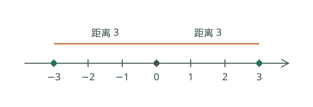
上图中 −3 和 3 分居原点两侧，离原点的距离都是 3，因此它们互为相反数，而且 \(|-3|=|3|=3\)。距离不带方向，所以两点之间的距离为 \(|3-(-3)|=6\)，不是 −6；0 到原点的距离是 0。
倒数的意义：把除法变成乘法
对非零数 \(a\)，它的倒数 \(1/a\) 满足 \(a\cdot(1/a)=1\)。因此，先乘 \(a\)，再乘 \(1/a\)，会回到原来的数：\(6\times4\times\frac14=6\)。这使倒数成为乘法的逆运算工具。
解方程。 4 千克苹果共 28 元，设每千克 \(x\) 元，则 \(4x=28\)。两边乘 \(1/4\)，得到 \(x=7\) 元。这里除以 4 与乘以 4 的倒数相同。
除以分数。 3 米绳子每段剪 \(1/2\) 米，每米有 2 段，所以 \(3\div(1/2)=3\times2=6\) 段。一般地，当 \(b\ne0\) 时， \[ a\div b=a\times\frac1b. \] 设 \(q=a/b\)，则 \(bq=a\)；两边乘 \(1/b\)，便得 \(q=a(1/b)\)。推导思想： 逆运算与等价变形。
单位倒置。 如果速度恒为每小时 60 千米，那么走 1 千米需要 \(1/60\) 小时。速度表示“每小时走多少千米”，其倒数表示“走一千米需要多少小时”；在这个例子中两种单位也互相倒置。
0 没有倒数，因为任何数乘 0 都不等于 1；所以除法要求除数不为零，\(1/0\) 没有定义。倒数不等于相反数：4 的倒数为 \(1/4\)，相反数为 −4。
代数中的常用名词
- 变量表示可变化的量；常量在所讨论问题中保持固定。例如 \(y=3x+2\) 中 \(x,y\) 是变量，3 和 2 是常量。
- 代数式是用数、字母与运算符号组成的式子，例如 \(2x+3\)。把字母的值代入并计算所得结果称为代数式的值。
- 单项式是数与字母的乘积，例如 \(-3x^2y\)；数本身或单个字母也可视为单项式。它的数字因子叫系数，字母指数之和叫次数：此例系数是 −3、次数是 3。非零常数的次数为 0。
- 多项式是若干单项式的和，各单项式叫项，其中不含字母的项叫常数项；非零多项式的次数是次数最高的项的次数。整式包括单项式和多项式。
- 同类项的字母相同且每个对应字母的指数相同，例如 \(2x^2y\) 与 \(-3x^2y\)；合并时只加减系数。
- 幂是乘方的结果；在 \(a^n\) 中 \(a\) 是底数、\(n\) 是指数。\(n\) 为正整数时，表示 \(n\) 个 \(a\) 相乘。
- 因式是乘积中的各个因子；公因式是各项共有的因式。因式分解是把一个多项式写成整式乘积，例如 \(x^2-1=(x-1)(x+1)\)。
- 分式可写成 \(A/B\)，其中 \(A,B\) 是整式，且 \(B\) 中含字母；计算时必须满足 \(B\ne0\)。\(A\) 是分子，\(B\) 是分母；约分是分子分母除以相同的非零因式，通分是化成相同分母。
- 若 \(x^2=a\)，则 \(x\) 是 \(a\) 的平方根；非负的平方根称为算术平方根，记作 \(\sqrt a\)。若 \(x^3=a\)，则 \(x\) 是 \(a\) 的立方根。例如 9 的平方根为 ±3，而 \(\sqrt9=3\)；\(\sqrt[3]{-8}=-2\)。
- 二次根式是形如 \(\sqrt A\) 的式子，在实数范围下要求 \(A\ge0\)。化简后根号内相同的二次根式称为同类二次根式，例如 \(2\sqrt3\) 与 \(5\sqrt3\)。
- 方程是含未知数的等式；使等式成立的未知数的值叫解或根。同时满足多个方程的解叫方程组的解；消元是将方程组转化为未知数更少的问题。
- 一元一次方程化简后可写成 \(ax+b=0\)，其中 \(a\ne0\)；一元二次方程化简后可写成 \(ax^2+bx+c=0\)，其中 \(a\ne0\)。后者的判别式是 \(\Delta=b^2-4ac\)，用于判断实数根的情况。
- 不等式用不等号表示大小关系；使不等式成立的未知数的值组成其解集。不等式组的解集是各不等式解集的交集，即同时满足所有条件的值。
- 增根是变形后所得方程的解，但不是原方程的解。例如去分母后得到的值使原分母为零；因此分式方程要检验候选解。
2.1 数系、运算与绝对值【A】
- 自然数、整数、有理数、无理数、实数；有理数可以表示为两个整数之比，分母非零。
- 有理数的小数表示是有限小数或无限循环小数；无理数是无限不循环小数。
- 数轴上的大小、相反数、倒数与距离。只有非零数有倒数。
- 绝对值：当 x≥0 时 |x|=x；当 x<0 时 |x|=−x。
- |a−b| 表示数轴上 a 与 b 的距离；|a+b|≤|a|+|b|。
- 运算顺序：括号 → 乘方 → 乘除 → 加减；同级通常从左到右。
- 分数：a/b+c/d=(ad+bc)/(bd)，其中 b、d≠0。
- 除以一个非零数等于乘以它的倒数。
易错点： −3²=−9，而 (−3)²=9；分母不能为零；约分只能约去分子分母的公因子。
2.1.1 科学记数法、近似数与有效数字
非零数可写成 \(a\times10^n\)，其中 \(1\le|a|<10\)、\(n\) 为整数。例如 0.00042 = \(4.2\times10^{-4}\)。这种表示用于记录很大或很小的测量值。
近似数应配合精度使用。若四舍五入到百分位后为 3.14，则原值通常在 \([3.135,3.145)\)；实际测量还可能有仪器误差，不能仅凭显示位数判断真实误差。
有效数字从第一个非零数字起计，包括其后为表示精度而保留的零。例如 \(0.00340\) 有三位有效数字，\(1.20\) 也有三位；使用科学记数法写成 \(1.20\times10^3\) 可清楚表达三位有效数字。单独写成整数 1200 时，末尾零是否表示测量精度可能不明确，最好同时注明精度或使用科学记数法。
数学思想： 单位转换、近似与估计。科学记数法改变表示方式；四舍五入会损失信息，不应把近似值当成精确测量。
2.2 幂、平方根与二次根式【A】
- 对正整数 m、n：a^m·a^n=a^(m+n)；(a^m)^n=a^(mn)；(ab)^n=a^n b^n。
- a^m/a^n=a^(m−n)、a^0=1、a^(−n)=1/a^n，涉及除法或非正整数指数时要求 a≠0。
- 实数范围内，√a 要求 a≥0，且 √a≥0。
- √(a²)=|a|；(√a)²=a（a≥0）。
- √(ab)=√a√b 要求 a、b≥0；√(a/b)=√a/√b 要求 a≥0、b>0。
- 会进行根式化简、同类二次根式合并、分母有理化。
易错点： √(a+b) 通常不等于 √a+√b；不能把整数指数运算规律不加条件地套到任意实数指数。
2.3 整式、乘法公式与因式分解【A】
- 单项式、多项式、次数、同类项；去括号与合并同类项。
- (a+b)²=a²+2ab+b²；(a−b)²=a²−2ab+b²。
- (a+b)(a−b)=a²−b²。
- 常用补充：a³+b³=(a+b)(a²−ab+b²)；a³−b³=(a−b)(a²+ab+b²)。
- 因式分解方法：提公因式、公式法、分组法等。
- 完全平方变形是后续二次函数、积分和优化的重要工具。
易错点： (a+b)²≠a²+b²；分解到题目要求的数域和程度。
2.3.1 余数定理与因式定理
对多项式 \(P(x)\)，除以 \(x-a\) 时可写成 \(P(x)=(x-a)Q(x)+r\)，其中余数 \(r\) 为常数。令 \(x=a\)，得到 \(r=P(a)\)。因此 \(x-a\) 是因式当且仅当 \(P(a)=0\)。
证明使用的思想： 等式恒等变形与特殊值代入；因式定理把“整除”转化为“零点”，是代数与函数的联系。
例： \(P(x)=x^3-3x+2\)，\(P(1)=0\)，所以有因式 \(x-1\)；继续分解可得 \((x-1)^2(x+2)\)。参考：OpenStax 多项式除法。
2.4 分式与代数式的定义条件【A】
- 分式有意义：分母≠0；分式值为零：分子=0 且分母≠0。
- 通分、约分、分式四则运算；先因式分解再约分通常更清晰。
- 分式方程去分母后必须检查原式定义条件，剔除增根。
2.5 方程与方程组【A】
- 一元一次方程 ax+b=0：a≠0 时 x=−b/a；a=0 时需另分情况。
- 二元一次方程组：代入消元与加减消元；注意无解、唯一解和无穷多解。
- 一元二次方程 ax²+bx+c=0（a≠0）。
- 判别式 Δ=b²−4ac；Δ>0 有两个不同实根，Δ=0 有两个相等实根，Δ<0 无实根。
- 求根公式：x=(−b±√Δ)/(2a)，实根公式要求 Δ≥0。
- 若根为 x₁、x₂，则 x₁+x₂=−b/a，x₁x₂=c/a。
- 常用方法：直接开平方法、配方法、因式分解法、公式法。
例： x²−5x+6=(x−2)(x−3)，所以方程的根为 2、3。
求根公式：从配方得到判别式
证明使用的数学思想： 等价转化、配方，以及按判别式符号分类讨论。
测量问题常要求根据面积和边长关系求未知长度，例如 \(x(x+3)=40\)。更一般地，实系数方程 \(ax^2+bx+c=0\) 中 \(a\ne0\)。两边乘 \(4a\) 并加 \(b^2\)：
\[ (2ax+b)^2=b^2-4ac=\Delta. \]
当 \(\Delta>0\)，左边可取正负两个平方根，有两个不同实根；\(\Delta=0\) 时有一个二重实根；\(\Delta<0\) 时实数的平方不可能为负，因此没有实根。当 \(\Delta\ge0\)，开方并解出 \(x\)：
\[ x=\frac{-b\pm\sqrt{b^2-4ac}}{2a}. \]
在长方形例子里，两个代数根是 5 和 −8，但宽度必须为正，所以实际答案是 5。判别式判断的是实根数量，实际情境还可能对根增加限制。
一元二次方程的根与系数
如果实系数方程 \(ax^2+bx+c=0\) 的 \(a\ne0\)，且在实数范围有两根 \(x_1,x_2\)（允许重根），则 \[ x_1+x_2=-\frac ba,\qquad x_1x_2=\frac ca. \] 因为 \(ax^2+bx+c=a(x-x_1)(x-x_2)=a[x^2-(x_1+x_2)x+x_1x_2]\)，比较系数即得。对 \(x^2-5x+6=0\)，根为 2、3，和为 5、积为 6，与公式一致。如果只在实数范围讨论而判别式小于零，方程无实根，不能把不存在的实根直接代入；引入复数后仍可讨论复根。
2.6 不等式与不等式组【A】
- 两边加减同一个数，不等号方向不变。
- 两边乘除同一个正数，方向不变；乘除同一个负数，方向反转。
- 解集可用数轴或区间表示；不等式组取交集。
- 乘除含未知数的式子前，应先判断其正负或分类讨论。
方程组、分式方程与实际问题
二元一次方程组的解同时满足两个等式。代入消元是把一个未知数表示成另一个再代入；加减消元是先将某个未知数的系数化成相反数再相加。两法都把二元问题化为一元问题；例如 \(x+y=10,x-y=2\)，相加得 \(2x=12\)，再得 \(x=6,y=4\)。带星号的三元一次方程组可重复消元到二元和一元。列实际方程时先定义单位并检查答案满足实际限制。
整式方程 \(ax+by=c\) 中，\(a,b\) 均非零时含有两个未知数且未知数的次数均为 1，是二元一次方程。使等式成立的一对数值叫该方程的一个解，例如 \((x,y)=(2,3)\) 满足 \(x+y=5\)，\((1,4)\) 也满足；单个方程通常有多组解。二元一次方程组要求各个方程的解相同，例如 \(x+y=5,x-y=1\) 的共同解为 \((3,2)\)。
分式的基本性质允许分子分母同乘同一个非零式子；加减先通分，乘除先化为因式并注意除式不为零。解分式方程可乘最简公分母，但由此得到的候选解必须代回原方程并排除原分母为零的值。这个检验是防止增根的必要步骤。
有理数运算、代数式与立方根
同号两数相加取相同符号并加绝对值；异号相加取绝对值较大数的符号，绝对值相减。减数换成相反数后可转成加法。乘除的符号由负因子个数决定，除数不为零；乘法分配律 \(a(b+c)=ab+ac\) 是整式乘法和提公因式的依据。
把文字关系转成代数式要明确变量与单位，如每件 \(p\) 元、买 \(n\) 件总价 \(pn\)。代入计算式的值时先写括号，例如 \(x=-2\) 代入 \(x^2\) 是 \((-2)^2=4\)。方程两边加同一数、或乘同一非零数，不改变解集。三次方等于 \(a\) 的实数叫 \(a\) 的立方根，记 \(\sqrt[3]{a}\)，负数也有负立方根；这不同于实数范围内负数没有平方根。
正负数、有理数与数轴：表达相反的变化
以海平面为零点，海拔高于零记正，低于零记负；温度上升 3℃ 和下降 3℃也可分别记作 +3℃ 和 −3℃。零既不是正数也不是负数。有理数是可写成 \(p/q\)（整数 \(p,q\)，且 \(q\ne0\)）的数，包括整数和分数；其十进制表达是有限小数或无限循环小数。
数轴约定原点、正方向、单位长度；点越靠右数越大。\(a\) 的相反数是 \(-a\)，二者和为零；\(|a|\) 是点 \(a\) 到原点的距离，因此 \(|-3|=3\)。例如比较 −5 和 −2：−5 在 −2 左边，所以 −5<−2。思想： 数形结合、用相反意义的量建立统一表示。数轴上的减法 \(a-b\) 是向左移动 \(b\) 个单位（\(b>0\)），更一般地等于加上 \(-b\)。
幂运算和科学记数法：重复乘法的简写
\(a^n\) 表示 \(n\) 个 \(a\) 相乘（\(n\) 为正整数），指数指出因子个数。将 \(a^m a^n\) 展开，因子共 \(m+n\) 个，得到 \(a^{m+n}\)；\((a^m)^n\) 有 \(mn\) 个因子，得到 \(a^{mn}\)。这是把符号还原为定义，再合并计数。\(a\ne0\) 时由 \(a^m/a^m=1\) 得 \(a^0=1\)，由 \(a^n a^{-n}=1\) 得 \(a^{-n}=1/a^n\)。
例如 \(2^3\times2^2=2^5=32\)，而 \((-2)^2=4\)、\(-2^2=-4\)，括号决定负号是否属于底数。天文距离可用 \(1.5\times10^8\) 千米表示，方便比较数量级；近似值还应注明舍入精度。
整式与因式分解：把展开过程反过来
整式的加减先去括号，随后只合并字母及指数均相同的项，例如 \(3x^2+2x-5x^2=-2x^2+2x\)。乘法由分配律逐项展开： \[ (a+b)^2=(a+b)(a+b)=a^2+ab+ba+b^2=a^2+2ab+b^2. \] 同理 \((a+b)(a-b)=a^2-b^2\)。因式分解是把和差写成乘积，例如 \(x^2-9=(x+3)(x-3)\)，再由零乘积性质求 \(x^2=9\) 的解。思想： 分配律、逆向思考和化归。设计一块边长为 \(a+b\) 的正方形时，其面积也可分为 \(a^2\)、两个 \(ab\) 和 \(b^2\) 四部分，这给出完全平方公式的几何解释。
一元一次方程与不等式：用等价变形求范围
例：出租车起步价 10 元包含前 3 公里，超出后每公里 2 元，不考虑其他费用；某次行程车费为 26 元。设超出起步里程的部分为 \(x\) 公里，则 \(10+2x=26\)，解得 \(x=8\)。总里程是 \(3+8=11\) 公里。两边做相同加减或乘除同一非零数保持等式解集；实际题还需检查计费规则和 \(x\) 的范围。
不等式则要留意负数：若 \(a<b\)，乘以 −1 后 \(-a>-b\)。例 \(-2x+1>5\) 化为 \(-2x>4\)，除以 −2 时方向反转，得 \(x<-2\)。不等式组的解取各解集的交集。例如 \(x>-2\) 且 \(x\le3\) 得 \((-2,3]\)。思想： 等价变形、分类与数轴上的集合交集。
一元一次方程：配套、工程与销售模型
配套问题。 12 名工人分别生产螺栓和螺母，每人每天分别生产 20 个和 40 个；一个螺栓需要两个螺母。设 \(x\) 人生产螺栓，其余 \(12-x\) 人生产螺母，则螺栓数为 \(20x\)，螺母数为 \(40(12-x)\)。由配套关系 \(40(12-x)=2(20x)\)，得 \(x=6\)，另外 6 人生产螺母。检验：每天分别生产 120 个螺栓、240 个螺母，恰好配套。
工程问题。 一项工作甲单独做需 6 天、乙单独做需 3 天，假设工作效率保持不变，同时开始合作。把工作总量记为 1，设合作 \(t\) 天完成，则 \(t/6+t/3=1\)，解得 \(t=2\) 天。这里把总工作量当单位 1，单位时间完成量分别为 \(1/6\) 和 \(1/3\)；不能把 6 和 3 两个工期直接相加作为合作工期。
销售问题。 一件商品进价 80 元，标价 \(x\) 元，打八折后销售，若要求售价比进价高 20%，则售价也可写为 \(80(1+20\%)=96\) 元。由 \(0.8x=96\) 得标价 \(x=120\) 元。折扣乘标价，利润率的计算基数是进价；所得标价为正且回代满足条件。
二次根式：定义条件、运算与面积测量
\(\sqrt a\) 是平方等于 \(a\) 的非负数，故在实数范围必须 \(a\ge0\)。特别地 \(\sqrt{x^2}=|x|\)：因为 \(|x|\ge0\) 且 \(|x|^2=x^2\)。当 \(a,b\ge0\)，\(\sqrt a\sqrt b\) 非负，平方是 \(ab\)，所以 \(\sqrt{ab}=\sqrt a\sqrt b\)。这使用平方根的定义与非负性；条件不能省略。
例：\(\sqrt{12}+\sqrt3=2\sqrt3+\sqrt3=3\sqrt3\)，先分解 \(12=4\times3\) 再合并同类根式；而 \(\sqrt{a+b}\) 通常不能拆开。面积为 12 平方米的正方形边长为 \(\sqrt{12}=2\sqrt3\) 米，体现平方与开方互为逆运算。\(\sqrt{a/b}=\sqrt a/\sqrt b\) 还要求 \(b>0\)。
有理化示例：\(\dfrac{2}{\sqrt3+1}=\dfrac{2(\sqrt3-1)}{(\sqrt3+1)(\sqrt3-1)}=\sqrt3-1\)。这里利用平方差公式将分母化为 \(3-1=2\)；乘以的共轭式 \(\sqrt3-1\) 非零，因此分子分母同乘后保持原值。只有同类二次根式才可直接合并，例如 \(2\sqrt3-\sqrt3=\sqrt3\)，但 \(\sqrt2+\sqrt3\) 不能合成 \(\sqrt5\)。
分式运算与增根：先检查分母
分式 \(A/B\) 有意义要求 \(B\ne0\)。若 \(C\ne0\)，分子分母同乘 \(C\) 不改变值；约分只能约去公因式，不能约去加数。例如 \((x^2-1)/(x-1)=x+1\)，但原式仍要求 \(x\ne1\)。加减先通分，乘除转成分子分母乘积，且除式的值不能为零。
例：\(1/(x-1)=x/(x-1)\)。原定义域要求 \(x\ne1\)；两边同乘 \(x-1\) 得 \(1=x\)，但候选解使原分母为零，故原方程无解。思想： 等价变形与条件检验。分式模型用于路程除以速度等问题，速度为零时模型没有意义。
再看有解的例子：\(1/(x-1)+1=2/(x-1)\)。先要求 \(x\ne1\)，同乘 \(x-1\) 得 \(1+(x-1)=2\)，所以 \(x=2\)。代回原方程得 \(1+1=2\)，且分母非零，因此 \(x=2\) 是原方程的解。去分母后既要解所得整式方程，也要回到原方程检查。
有理数的大小比较、加减乘除与实际收支
数轴规定向右为正方向，因此越靠右的数越大。正数大于零，零大于负数；两个负数中，绝对值大的反而小，例如 \(-5<-2\)。把一天的收入记为正数、支出记为负数，就能将收支结算统一为加法：收入 80 元、支出 120 元的净变化为 \(80+(-120)=-40\) 元。
加减法。 同号相加，绝对值相加且符号不变；异号相加，绝对值相减并取绝对值较大数的符号，绝对值相等时和为零。减去一个数等于加它的相反数，例如 \(3-(-2)=3+2=5\)。这是为了保持 \((a-b)+b=a\)，体现把减法化归为加法的思想。
有理数加法和乘法分别满足交换律及结合律：\(a+b=b+a\)、\((a+b)+c=a+(b+c)\)、\(ab=ba\)、\((ab)c=a(bc)\)；乘法对加法满足分配律 \(a(b+c)=ab+ac\)。例如 \((-8)+3+8=[(-8)+8]+3=3\)。减法和除法本身一般不满足交换律或结合律，应先转化为加相反数或乘非零数的倒数，再使用相应运算律。
乘除法。 两数同号乘积为正、异号为负，绝对值相乘；零乘任何数得零。负负得正可从分配律推导：\(0=(-1)(1+(-1))=(-1)+(-1)(-1)\)，故 \((-1)(-1)=1\)。除以非零数等于乘它的倒数。零没有倒数，不能作除数。盈亏、温度变化和反向运动都可利用符号模型，但乘积的正负必须结合具体量的含义解释。
混合运算。 算式 \(-2^2+(-3)\times(4-6)\) 先算括号和乘方，得到 \(-4+(-3)\times(-2)\)，再算乘法，最后得到 2。这里 \(-2^2=-(2^2)=-4\)，与 \((-2)^2=4\) 不同；乘除同级、加减同级时，通常按从左到右的顺序计算。若利用交换律、结合律或分配律简算，应先确认运算符号和括号范围。
科学记数法与近似数：表达测量精度
非零数写作 \(a\times10^n\)，其中 \(1\le|a|<10\)，\(n\) 是整数。例如 \(0.00042=4.2\times10^{-4}\)，把小数点右移四位需乘 \(10^{-4}\) 才保持原值。科学记数法简化极大、极小数的比较和运算，常用于原子尺寸与天文距离。
按四舍五入到百分位得到 3.14，原值属于 \([3.135,3.145)\)；若只是测量设备显示 3.14，还要考虑仪器误差，不能据此断言真实值必在此区间。数学思想： 数量级、估计和误差范围；近似数既描述结果，也表达信息精度。
方程组的代入消元、加减消元与三元消元
解 \(x+y=10,\ x-y=2\)：加减消元将两式相加得 \(2x=12\)，因此 \(x=6,y=4\)；代入消元则从第一式得 \(y=10-x\)，代入第二式得到 \(x-(10-x)=2\)，得同样结果。两法都是消去一个未知数，把二元问题转化为一元问题。
三元一次方程组可先用两个方程分别消去同一未知数，得到二元方程组，再继续消元；运算中必须保留足够的独立条件。若 \(x+y+z=6,x+y-z=0,x-y=0\)，前两式相减得 \(z=3\)，再得 \(x+y=3,x-y=0\)，故 \(x=y=3/2\)。应用中可用来从总价、数量等条件反求未知价格，并把结果代回原式及现实条件检验。
提公因式与公式法分解：选择适用条件
把 \(6x^2+9x\) 分解，先找各项公因式 \(3x\)，得 \(3x(2x+3)\)。这是分配律 \(ab+ac=a(b+c)\) 的逆向使用；检查结果可重新展开。\(x^2+6x+9=x^2+2\cdot3x+3^2=(x+3)^2\)，使用完全平方公式；\(4x^2-25=(2x+5)(2x-5)\) 使用平方差公式。分解应继续到题目指定数域和要求的程度。
应用： 解 \(6x^2+9x=0\)，先得 \(3x(2x+3)=0\)，由零乘积性质得 \(x=0\) 或 \(x=-3/2\)。不能把等式两边直接除以 \(x\)，否则会丢失 \(x=0\)。思想： 整体与部分、逆向运算和分类讨论。
一元二次方程：配方、因式分解与模型检验
例：矩形长比宽多 3 米、面积 40 平方米。令宽 \(x>0\)，则 \(x(x+3)=40\)，即 \(x^2+3x-40=0\)。因式分解得 \((x+8)(x-5)=0\)，代数解为 \(-8,5\)，长度约束排除 \(-8\)，所以宽 5 米、长 8 米。
配方法对一般 \(ax^2+bx+c=0\;(a\ne0)\) 先除以 \(a\)，再加上 \((b/2a)^2\)，得到 \((x+b/(2a))^2=(b^2-4ac)/(4a^2)\)。右侧非负时开平方可推出求根公式，负时无实根。思想： 化归、配方和分类；判别式判断代数实根，实际模型还可能排除不合要求的根。
平均增长率。 某产品今年产量为 100 件，若此后两年年增长率均为 \(r\)，两年后达到 144 件，则 \(100(1+r)^2=144\)。解得 \(1+r=\pm1.2\)，即 \(r=0.2\) 或 \(r=-2.2\)。题设要求每年按同一增长率增长且产量不为负，故取 \(r=20\%\)；第二个代数解不符合实际。增长两次对应乘 \((1+r)\) 两次，不是直接加两次 \(r\)。
直接开平方法与公式法
方程 \((x-2)^2=9\) 可直接开平方，得到 \(x-2=3\) 或 \(x-2=-3\)，因此 \(x=5\) 或 \(x=-1\)。不能把两个根漏成一个；若平方等于零则只得到一个不同的实数解，若等于负数则没有实数解。
对 \(2x^2-3x-2=0\)，\(a=2,b=-3,c=-2\)，判别式 \(\Delta=9+16=25\)。代入 \(x=(-b\pm\sqrt\Delta)/(2a)\)，得到 \(x=(3\pm5)/4\)，即 \(x=2\) 或 \(x=-1/2\)。直接开平方法适合易化为“平方等于常数”的情形；公式法适合一般一元二次方程，但要先确认 \(a\ne0\) 并判断实数范围内 \(\Delta\ge0\)。
根与系数的关系及其推导见本专题“一元二次方程的根与系数”；因式分解和配方法见“一元二次方程：配方、因式分解与模型检验”。
一元一次方程：去括号、去分母与检验
解 \(\frac{x-1}{2}+\frac{x+1}{3}=3\)。两边同乘最小公倍数 6，得到 \(3(x-1)+2(x+1)=18\)；去括号得 \(3x-3+2x+2=18\)；合并并移项得 \(5x=19\)，所以 \(x=19/5\)。代回左边：\((19/5-1)/2+(19/5+1)/3=7/5+8/5=3\)，满足原方程。
去分母时必须乘到等式两边的每一项，包括没有分母的常数；去括号时负号也要分配到括号内每一项。对于含未知数分母的方程，上面的无条件同乘规则不能直接套用，需先限定分母非零并检验候选解。
平方根与算术平方根
如果 \(x^2=a\)，则称 \(x\) 为 \(a\) 的平方根。正数有两个互为相反数的平方根；例如 9 的平方根是 3 和 −3。符号 \(\sqrt9\) 专门表示非负的算术平方根，因此 \(\sqrt9=3\)，而不是 ±3。零的平方根和算术平方根都是零；在实数范围内，负数没有平方根。
平方根符号与求解方程的写法不同：\(\sqrt9=3\)，而 \(x^2=9\) 的解是 \(x=\pm3\)。立方根则不同，任何实数都有且只有一个实数立方根，例如 \(\sqrt[3]{-8}=-2\)。
实数、估算与数轴
实数包括有理数和无理数；无理数是无限不循环小数，例如 \(\sqrt2\) 和 \(\pi\)。每个实数都可由数轴上的一个点表示，反过来数轴上的每个点也对应一个实数。比较 \(\sqrt2\) 和 1.5：因为 \(1^2<2<1.5^2\)，且平方根是非负数，所以 \(1<\sqrt2<1.5\)。求平方根时不可忽略符号：\(x^2=2\) 的两个实数解是 \(x=\pm\sqrt2\)，但 \(\sqrt2\) 仅指非负的那个数。
不等式解集与一元一次不等式组
使不等式成立的未知数的值构成它的解集。在数轴上表示 \(x>2\) 时，2 不属于解集，用空心端点并向右画；\(x\le2\) 时 2 属于解集，用实心端点并向左画。比较方向依赖数轴约定的正方向。
化简后形如 \(ax+b>0\)、\(ax+b\ge0\)、\(ax+b<0\) 或 \(ax+b\le0\)，其中 \(a\ne0\)，只含一个未知数且未知数最高次数为 1 的不等式叫一元一次不等式。求解的每次变形都应保持解集不变；例如 \(3x-1\le5\) 等价于 \(3x\le6\)，再等价于 \(x\le2\)。两个或多个不等式的共同解集是各自解集的交集。
解不等式组 \(2x+1>3\)、\(3x-2\le7\)：分别得到 \(x>1\) 和 \(x\le3\)，共同解集是 \(1<x\le3\)。如果两个解集不相交，原不等式组无解。两边乘或除以负数时不等号反向；不能不经讨论就除以符号未知的含字母式子。
用方程组处理实际问题
例：某活动共购买 20 支笔，甲种每支 3 元、乙种每支 5 元，共支付 76 元。设甲、乙两种分别购买 \(x,y\) 支，根据数量和总价建立 \(x+y=20\)、\(3x+5y=76\)。第一式乘 3 后从第二式减去，得 \(2y=16\)，因此 \(y=8,x=12\)。代回数量和金额均满足，且支数为非负整数，符合实际条件。等量关系与单位要在列方程前明确；实际场景可能排除某些代数解。
整式的系数、次数与代数式求值
单项式由数与字母的乘积组成，单独一个数或一个字母也是单项式。\(-3x^2y\) 的系数是 \(-3\)，次数是字母指数之和 \(2+1=3\)；非零常数的次数为 0。若干单项式的和是多项式，\(2x^2-3x+1\) 有三项，最高次数是 2，因此是二次三项式。整式包括单项式和多项式，分母含字母的式子一般属于分式而不是整式。
把 \(x=-2\) 代入 \(2x^2-3x+1\) 时，写成 \(2(-2)^2-3(-2)+1=15\)，先乘方再乘除、最后加减。合并同类项时，字母相同且各字母的指数分别相同，例如 \(3x^2-5x^2=-2x^2\)；\(x^2\) 和 \(x\) 不是同类项。
整式乘法与分式四则运算
整式乘法使用分配律：\((2x-1)(x+3)=2x^2+6x-x-3=2x^2+5x-3\)。每一项都要与另一括号中的每一项相乘，最后合并同类项。同底数幂相乘、幂的乘方与积的乘方分别满足 \(a^ma^n=a^{m+n}\)、\((a^m)^n=a^{mn}\)、\((ab)^n=a^nb^n\)，这里 \(m,n\) 取正整数；推广到零指数或负指数时要先检查底数非零。
分式加法示例：\(\frac1{x}+\frac1{x+1}=\frac{(x+1)+x}{x(x+1)}=\frac{2x+1}{x(x+1)}\)，原式要求 \(x\ne0,-1\)。乘除示例：\(\frac{x}{x+1}\div\frac2{x}=\frac{x}{x+1}\cdot\frac{x}{2}=\frac{x^2}{2(x+1)}\)，必须同时要求 \(x\ne0,-1\)，因为原式中的分母和除式都不能为零。通分、约分或化简后，仍要保留原式的取值限制。
整数指数运算示例。 当 \(a\ne0\)，\(a^{-2}=1/a^2\)，所以 \((2x^{-1})^2=4/x^2\)，要求 \(x\ne0\)。同底数幂相除时 \(x^3/x^5=x^{-2}=1/x^2\)，原式和化简式均需 \(x\ne0\)。例如 \(x=-2\) 时两式均为 \(1/4\)。负指数表示倒数，不表示结果必为负数。
单项式与多项式除以单项式。 先将每一项除以非零除式，再分别约去数的系数和相同字母因式。例如 \((6x^3-9x^2)\div(3x)=2x^2-3x\)，原式要求 \(x\ne0\)。验证时用结果乘 \(3x\)，重新得到 \(6x^3-9x^2\)。分配到每一项的理由是 \((A+B)/C=A/C+B/C\;(C\ne0)\)；除式是多项式时不能按同样方式把分母的各项分别消去。
一元一次方程的概念和等式性质
含未知数的等式叫方程；使方程左右两边相等的未知数的值叫方程的解。化简后形如 \(ax+b=0\)，其中 \(a\ne0\)，只含一个未知数且未知数最高次数为 1，称为一元一次方程。例如 \(2x+1=7\) 的解为 \(x=3\)，代入可检验 \(2\times3+1=7\)。
若 \(a=b\)，则两边加或减同一个数后仍相等，乘同一个数后仍相等；两边除以同一个数时，除数必须非零。移项并改变符号来自两边加减同一项，不是独立于等式性质的魔法。两边乘零虽保持等式成立，却可能丢失原方程的信息，不能作为保持解集不变的操作。
角的度、分、秒运算
角度制中 \(1^\circ=60'\)，\(1'=60''\)。例如 \(32^\circ20'+18^\circ50'\) 先分别相加得 \(50^\circ70'\)，再将 \(60'\) 换成 \(1^\circ\)，结果为 \(51^\circ10'\)。减法不够减时从高一单位借一：\(40^\circ10'-15^\circ35'=39^\circ70'-15^\circ35'=24^\circ35'\)。不要把分、秒误当成十进制小数位。
3. 初中：函数与图像
函数的基本名词
- 变量：在讨论的问题中可以取不同数值的量。例如行驶时间和行驶路程可以随着行程变化。
- 自变量：作为输入、可以在规定范围内选取的变量，通常记为 \(x\)。
- 函数：一种对应关系；在规定的输入范围内，每个自变量的取值都对应唯一一个输出。不同输入可以对应同一个输出。
- 函数值：自变量取定某个值后，按函数关系得到的输出。用 \(y=f(x)\) 表示时，\(f(a)\) 是自变量取 \(a\) 时的函数值；它不表示 \(f\) 与 \(a\) 相乘。
- 定义域：对所讨论的函数，自变量允许取值的集合。它既要满足表达式有意义，也要满足实际问题的限制。
- 值域：自变量在定义域内变化时，所有实际得到的函数值组成的集合。
例：匀速行驶。 一辆车以每小时 60 千米匀速行驶 2 小时，已行驶路程 \(s\) 与时间 \(t\) 的关系为 \(s=60t\)。这里 \(t\) 是自变量，定义域为 \([0,2]\)；当 \(t=0.5\) 时，函数值 \(s(0.5)=30\) 千米。随着 \(t\) 在定义域内变化，路程的值域为 \([0,120]\) 千米。
例：表达式的限制。 若在实数范围讨论 \(f(x)=1/x\)，分母不能为零，所以定义域为 \(\mathbb{R}\setminus\{0\}\)。如果用它表示固定路程下的行驶时间与速度，速度还必须为正，实际模型的定义域就缩小为 \(x>0\)。
认识坐标轴和象限
平面直角坐标系由两条互相垂直、具有共同原点的数轴组成。水平的通常叫 x 轴，向右为正；竖直的叫 y 轴，向上为正。两轴的交点是原点 \(O=(0,0)\)。点 \((x,y)\) 的第一个数叫横坐标，第二个数叫纵坐标；先看左右，再看上下。
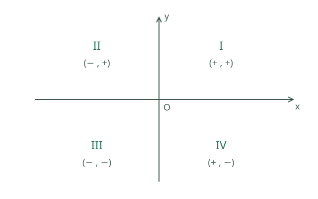
两条坐标轴将平面分成四个区域，叫象限。从右上方开始逆时针编号：第一象限 \((+,+)\)、第二象限 \((-,+)\)、第三象限 \((-,-)\)、第四象限 \((+,-)\)。例如 \((-2,3)\) 从原点向左 2、向上 3，位于第二象限。横坐标为 0 的点在 y 轴上，纵坐标为 0 的点在 x 轴上；坐标轴上的点不属于任何象限，原点也不属于任何象限。
认识函数的单调性
单调性描述自变量从小到大变化时，函数值在指定区间内如何变化。若对区间内任意两个值 \(x_1<x_2\)，都有 \(f(x_1)<f(x_2)\)，函数在该区间上严格递增；若都有 \(f(x_1)>f(x_2)\)，则在该区间上严格递减。某些语境下“递增／递减”也包含相等的非严格情况，使用时应看上下文；这里的例子采用严格比较。
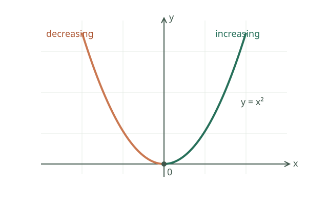
图像是 \(y=x^2\)。从左向右看，在 \(( -\infty,0]\) 上函数值逐渐减小，例如 \(f(-2)=4>f(-1)=1\)；在 \([0,+\infty)\) 上逐渐增大，例如 \(f(1)=1<f(2)=4\)。它在整个实数范围内不是单调递增或单调递减，所以说单调性时要写出区间。图中横轴从左到右是 \(x\) 从小到大，不能只看图像离原点变近或变远。
实际例子： 固定路程为 120 千米，速度 \(v>0\) 时用时 \(t=120/v\)。速度从 40 增至 60 千米/小时，用时从 3 小时降至 2 小时；在正速度范围内，时间随速度增大而递减。这个结论依赖路程固定和速度为正的条件。
3.1 坐标与函数观念【A】
- 平面直角坐标系、象限、点的坐标、图像与方程的联系。
- 函数的核心：在定义域内，每个输入恰有一个输出。
- 理解自变量、函数值、定义域以及实际问题中的取值限制。
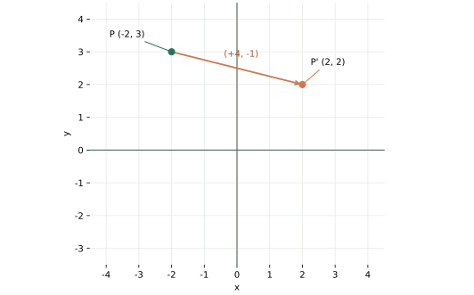
图中 P 向右 4 格、向下 1 格得到 P′；横坐标和纵坐标分别增加 4、减少 1。坐标轴上的点不属于任何象限。
3.2 一次函数【A】
- y=kx+b（k≠0）；k 是斜率，b 是纵截距。
- k>0 时递增，k<0 时递减；直线经过 (0,b)。
- 两条直线的交点对应二元一次方程组的解。
- 正比例函数 y=kx（k≠0）经过原点。
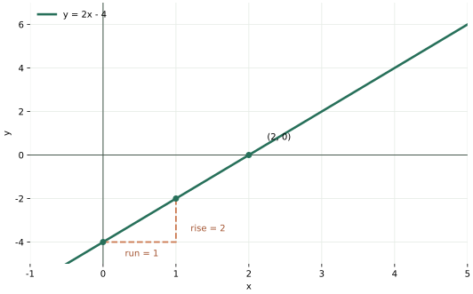
图中的直线经过 \((0,-4)\) 和 \((2,0)\)。横坐标增加 1 时纵坐标增加 2，所以斜率是 2；图中虚线显示了这两个变化量。
3.3 反比例函数【A】
- y=k/x（k≠0），定义域 x≠0。
- k>0 时位于第一、第三象限；k<0 时位于第二、第四象限。
- 讨论单调性要分别在 (−∞,0)、(0,+∞) 上进行，不能跨越断点直接合并。
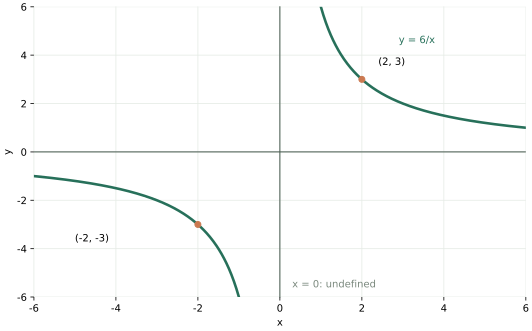
图中 \((2,3)\) 和 \((-2,-3)\) 都满足 \(xy=6\)。\(x=0\) 时函数无定义，因此左右两支分开绘制。
3.4 二次函数【A】
- 一般式 y=ax²+bx+c（a≠0）。
- 顶点式 y=a(x−h)²+k；顶点 (h,k)，对称轴 x=h。
- h=−b/(2a)，k=c−b²/(4a)。
- a>0 开口向上，有最小值；a<0 开口向下，有最大值。
- 与 x 轴的交点由对应二次方程确定。
例： x²−4x+3=(x−2)²−1，顶点为 (2,−1)，零点为 1、3。
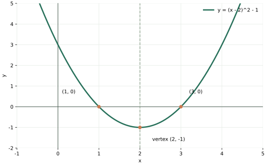
图中顶点是 \((2,-1)\)，虚线是对称轴 \(x=2\)；与 x 轴的交点是 \((1,0)\)、\((3,0)\)，对应方程的两个实数根。
函数的表示、坐标平移与实际模型
函数可用解析式、表格或图像表示；每个输入只能对应一个输出。将点 \((x,y)\) 向右平移 \(a\)、向上平移 \(b\) 后得到 \((x+a,y+b)\)。一次函数中斜率是单位输入变化量对应的输出变化；方程组对应两直线交点。求一元不等式 \(kx+b>0\)，看直线 \(y=kx+b\) 位于 x 轴上方时对应的横坐标；例如 \(2x-4>0\) 的解是 \(x>2\)。二元不等式 \(y>kx+b\) 则表示直线 \(y=kx+b\) 上方的点，两者要区分。
反比例模型 \(y=k/x\) 可用于固定路程 \(s\) 下时间与速度 \(t=s/v\)，其现实定义域需要 \(v>0\)。二次函数可描述理想抛体高度或固定周长下矩形面积；先列关系式，再限制实际自变量范围，用顶点、端点和方程根回答最值或可行范围。数学模型的函数定义域由现实条件决定。
坐标与函数图像：把关系画出来
坐标系选定原点和单位后，\((x,y)\) 分别记录水平与竖直位置；例如 \((-2,3)\) 在第二象限。向右移动 4、向下移动 1 后点为 \((2,2)\)。地图定位、绘图软件和机器人导航都依赖这一表示。函数要求一个输入对应唯一输出；可用公式、表格、图像描述，例如每小时行驶 60 千米时 \(s=60t\)，这里 \(t\ge0\)。
一次函数 \(y=kx+b\) 的斜率 \(k=\Delta y/\Delta x\) 表示输入每增加一单位，输出增加 \(k\)；由两点坐标便可求直线。两直线交点同时满足两个方程，所以对应方程组的解。对比较资费方案，画两条费用直线，交点给出费用相等的用量，交点两侧分别比较高低。
象限、坐标轴与平移
平面直角坐标系中，第一、二、三、四象限的坐标符号依次为 \((+,+),(-,+),(-,-),(+,-)\)。坐标轴上的点不属于任何象限：\((0,3)\) 在正半 \(y\) 轴上，\((-2,0)\) 在负半 \(x\) 轴上，\((0,0)\) 是原点；\(x\) 轴上点的纵坐标为 0，\(y\) 轴上点的横坐标为 0。点到两坐标轴的距离分别是 \(|y|\) 和 \(|x|\)。
例如点 \(P=(-2,3)\) 向右平移 4 个单位、向下平移 1 个单位，得到 \(P'=(2,2)\)。一般地，向右 \(a\)、向上 \(b\) 对应 \((x,y)\mapsto(x+a,y+b)\)，其中可用负数表示反方向；若题目已经说“向左 4”，应减去 4，而不是再次把方向取反。图形平移时所有点都增加同一坐标位移，边长和角度保持不变。
为什么边长不变？若 \(P=(x_1,y_1),Q=(x_2,y_2)\)，同时平移 \((a,b)\) 后，两点的坐标差仍为 \((x_2-x_1,y_2-y_1)\)，所以两点距离保持不变。三角形的三边长度都保持不变，平移前后的对应三角形由 SSS 全等，故对应角也相等。这里对两端点使用的是同一位移；如果各点移动方向或距离不同，就不能直接套用平移的不变量。
反比例与二次函数：变化率和最值
当 \(xy=k\ne0\) 时 \(y=k/x\)，\(x\ne0\)。固定路程 120 千米，速度为 \(v>0\) 时用时 \(t=120/v\)；速度加倍，用时减半。图像两支不能跨过 \(x=0\)，单调性需分别在两侧区间讨论。
若 \(k>0\)，反比例函数在 \((-\infty,0)\) 和 \((0,+\infty)\) 各自递减；若 \(k<0\)，在这两个区间各自递增。理由是当 \(x_1<x_2\) 且两者同号时，\(x_1x_2>0\)，而 \(f(x_2)-f(x_1)=k(x_1-x_2)/(x_1x_2)\)，其符号与 \(k\) 相反。例如 \(y=6/x\) 在正半轴上由 \(x=2\) 到 \(x=3\) 时从 3 降到 2。由曲线上一点向两坐标轴作垂线，形成的轴对齐矩形面积是 \(|xy|=|k|\)，对正负象限均适用；不能把有符号的 \(xy=k\) 直接当作负面积。
二次函数 \(y=ax^2+bx+c\)（\(a\ne0\)）配方为 \(a(x+b/(2a))^2+c-b^2/(4a)\)，故顶点横坐标为 \(-b/(2a)\)。例如固定周长 20 的矩形，长 \(x\)、宽 \(10-x\)，面积 \(S=x(10-x)=25-(x-5)^2\)，在 \(x=5\) 时最大为 25。思想： 建模、配方和数形结合；实际条件 \(0<x<10\) 必须先写出。
用坐标描述地理位置
先选择原点、正方向和单位长度，再标出各地点。例如把校门设为原点，以向东为 x 轴正方向、向北为 y 轴正方向，每格表示 100 米。图书馆在校门向东 300 米、向北 200 米处，其坐标是 \((3,2)\)；体育馆在校门向西 100 米、向北 400 米处，其坐标是 \((-1,4)\)。换用不同原点或单位后数字会改变，实际位置并未改变。绘制路线时还需标出道路、比例尺及方向，不能仅凭两点坐标假定可以沿直线通行。
正比例与一次函数：画图、比较和建模
正比例函数是 \(y=kx\)（\(k\ne0\)），图像是一条过原点的直线。一次函数 \(y=kx+b\)（\(k\ne0\)）的图像也为直线；当 \(b=0\) 时它是正比例函数。画图可以求两个不同点并连线：\(y=2x-4\) 经过 \((0,-4)\) 和 \((2,0)\)。\(k>0\) 时随 \(x\) 增大而增大，\(k<0\) 时随 \(x\) 增大而减小。
比较两种按月收费方案：甲每月固定费 20 元，另每单位 2 元；乙固定费 50 元，另每单位 1 元。设使用量 \(x\ge0\)，费用分别为 \(A=20+2x\)、\(B=50+x\)。令 \(A=B\) 得 \(x=30\)。当 \(0\le x<30\) 时甲便宜；\(x>30\) 时乙便宜；30 时相同。若只能购买整数单位，还需结合可行取值，不能把交点之外的所有实数都当成实际方案。
二次函数的图像与方程的根
把 \(y=x^2-4x+3\) 配方为 \(y=(x-2)^2-1\)，图像顶点是 \((2,-1)\)，对称轴为 \(x=2\)，开口向上。令 \(y=0\) 得 \((x-1)(x-3)=0\)，所以图像与 x 轴交于 \((1,0)\)、\((3,0)\)。图像的横坐标为方程的实根；交点个数对应实根个数。判别式只能判断对应二次方程的实根情况，实际问题仍需检查取值范围。
反比例函数 \(y=k/x\) 的 \(x\) 不能为零。比如 \(y=6/x\) 在第一象限，可取 \((1,6),(2,3),(3,2)\) 描点，在第三象限可取 \((-1,-6),(-2,-3),(-3,-2)\)；两支图像分开绘制，不能跨过 \(x=0\) 连成一条曲线。
二次函数的平移与开口
从 \(y=x^2\) 出发，图像向右平移 2 个单位得到 \(y=(x-2)^2\)，再向下平移 1 个单位得到 \(y=(x-2)^2-1\)。前者顶点是 \((0,0)\)，后者顶点是 \((2,-1)\)。一般形式 \(y=a(x-h)^2+k\) 的顶点是 \((h,k)\)、对称轴是 \(x=h\)；\(a>0\) 向上开口，\(a<0\) 向下开口，且 \(a\ne0\)。
在相同坐标尺度下，比较 \(y=x^2\) 和 \(y=2x^2\)，当横坐标相同且不为零时后者的纵坐标绝对值更大，因此图像更陡、更窄；\(y=-x^2\) 则是 \(y=x^2\) 关于 x 轴的对称图像。求实际最值前先确定自变量的允许范围；顶点不在允许范围内时不能直接将顶点值作为实际最值。
对于 \(y=a(x-h)^2+k\)，若 \(a>0\)，函数在 \(( -\infty,h]\) 上递减，在 \([h,+\infty)\) 上递增，值域为 \([k,+\infty)\)；若 \(a<0\)，两侧单调方向反过来，值域为 \(( -\infty,k]\)。这些结论针对定义域为全体实数的二次函数；若限制 \(x\) 的范围，应在限制后的区间内讨论。例如 \(y=(x-2)^2-1\) 在 \([3,5]\) 上递增，最小值是 \(y(3)=0\)，不是顶点值 −1，因为 \(x=2\) 不在区间内。
4. 初中：几何、统计与概率
几何入门：点、线、角与图形
点表示位置，通常用大写字母标记；直线向两端无限延伸，射线有一个端点并向一端无限延伸，线段有两个端点且长度有限。两条直线在同一平面内相交会形成一个交点；如果成直角，则称两线垂直。同一平面内不相交的两条直线称为平行线。
角是两条具有共同端点的射线组成的图形；共同端点称为顶点，射线是角的边。角的大小表示转动的程度，与画出的边长无关。锐角小于 \(90^\circ\)，直角等于 \(90^\circ\)，钝角大于 \(90^\circ\) 且小于 \(180^\circ\)。两角和为 \(90^\circ\) 叫互为余角，和为 \(180^\circ\) 叫互为补角；两条直线相交时，相对的两角称为对顶角，对顶角相等。
三角形由不在同一直线上的三条线段首尾连接而成；三条线段是边，交点是顶点。任选一边为底，从对面顶点到该边所在直线的垂直线段是对应的高。
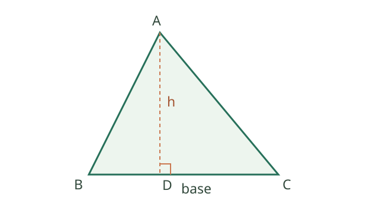
图中 BC 是底，AD 是高；小方角标记表示 AD 垂直 BC。面积公式 \(S=BC\times AD/2\) 使用的底和高必须互相对应。两个全等图形形状和大小均相同；两个相似图形形状相同、对应长度成同一比例，大小可以不同。
平移使图上每个点沿同一方向移动相同距离；旋转把图形绕固定点转过一个角；轴对称使图形沿一条直线折叠后两侧重合。这些变换都保持长度和角度。
圆的基本名词
圆是平面内与固定点距离等于固定正数的所有点组成的图形；固定点叫圆心，该距离叫半径。连接圆上两点的线段叫弦；经过圆心的弦叫直径，长度是半径的两倍。圆上两点之间的一段圆叫弧，两条半径与对应弧围成的部分叫扇形。
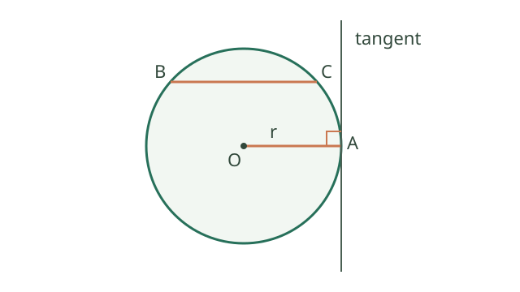
图中 OA 是半径，BC 是弦；通过 A 的直线与圆只有一个公共点 A，称为圆的切线，A 是切点。切线垂直于经过切点的半径，小方角标记表示这个直角。圆周长 \(2\pi r\)、面积 \(\pi r^2\) 使用半径 \(r>0\)。
统计与概率的基本名词
总体是所研究的全部对象，例如全校学生；个体是其中一个对象；样本是从总体中选出的一部分，样本容量是样本中个体的数量。全面调查考察总体全部个体，抽样调查考察样本；要关注样本是否能代表总体。
某结果出现的次数叫频数；频数除以总试验次数叫频率。下图中 A、B、C 的频数分别为 2、4、3，总数为 9，因此 B 的频率是 \(4/9\)。
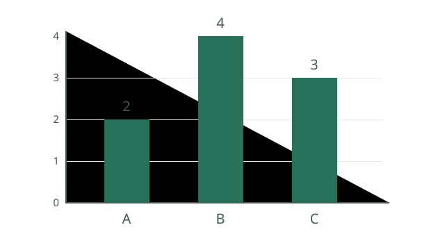
平均数是数据之和除以数据个数；排序后居中的值叫中位数（偶数个数据取中间两个数的平均）；出现次数最多的值叫众数。最大值减最小值是极差，方差用平方偏差的平均数衡量数据围绕均值的离散程度。
随机事件是一次试验中可能发生也可能不发生的事件，例如投掷骰子出现偶数；所有可能结果组成样本空间。概率描述随机事件发生的可能性，取值在 0 到 1 之间。若所有基本结果等可能，概率等于有利结果数除以全部结果数：公平六面骰出现偶数的概率是 \(3/6=1/2\)。频率是实际试验得到的比例，有限次试验中不必等于概率。
4.1 平面几何基础【B】
- 余角、补角、对顶角；平行线的性质与判定。
- 三角形内角和为 180°；任意两边之和大于第三边。
- 全等三角形：SSS、SAS、ASA、AAS；直角三角形可用斜边与一条直角边判定（HL）。
- 相似三角形：对应角相等、对应边成比例；相似比为 k 时，面积比为 k²。
- 直角三角形勾股定理：两直角边 a、b 与斜边 c 满足 a²+b²=c²；会用逆定理。
- 平行四边形、矩形、菱形、正方形、梯形的性质与判定。
- 轴对称、平移、旋转；识别变换中保持不变的量。
4.1.1 相似三角形面积比的证明
若两个相似三角形的对应边长之比为 \(k>0\)，对应高的比也为 \(k\)：它们形成的一组直角三角形具有相同锐角，故对应边成比例。利用 \(S=\text{底}\times\text{高}/2\)，面积之比为 \(k\cdot k=k^2\)。
证明使用的思想： 化归、数形结合、比例。应用： 地图上的相似区域边长放大3倍，面积变为9倍；面积不按边长只放大3倍。
4.2 圆与基本测量【B】
- 圆心角、圆周角、弦、弧、切线；同弧所对圆周角等于圆心角的一半。
- 直径所对圆周角为直角；圆的切线垂直于过切点的半径。
- 圆周长 2πr；面积 πr²。
- 圆心角 θ 用弧度表示时，弧长 l=rθ，扇形面积 S=r²θ/2；通常取 θ≥0。
- 三角形面积为底×高/2；梯形面积为（上底+下底）×高/2。
- 长方体、圆柱、圆锥、球的基本体积：abc、πr²h、πr²h/3、4πr³/3。
4.2.1 平移、轴对称与最短路径
平移由方向与距离确定，图形各点按同一位移移动，长度和角度不变。轴对称中，对应点连线被对称轴垂直平分，轴上各点保持不动。
实际问题： 一束光从 A 到直线上的一点 P，再到同侧的 B，如何使路径最短？将 A 关于直线对称到 A′，则 \(AP=A'P\)。对任意 P，\(AP+PB=A'P+PB\ge A'B\)；当线段 A′B 与直线相交于 P 时等号成立。
证明使用的思想： 对称、化归与三角形两边之和不小于第三边。这个结论假设 A、B 在直线同侧且路径不受其他限制。
例如 \(A=(0,2)\)、\(B=(4,1)\)，直线是 \(x\) 轴。将 \(A\) 对称到 \(A'=(0,-2)\)，线段 \(A'B\) 所在直线为 \(y=-2+3x/4\)，与 \(x\) 轴交于 \(P=(8/3,0)\)。因此最短路程为 \(|A'B|=\sqrt{4^2+3^2}=5\)；直接验算 \(|AP|=10/3\)、\(|PB|=5/3\)，和也是 5。若 \(P\) 还被限制在某个线段内，须另检查这个交点是否在允许范围内。
4.3 描述统计与初步概率【B】
- 总体、样本、频数、频率；条形图、折线图、直方图。
- 平均数、加权平均数、中位数、众数、极差与方差。
- 一组数据的描述性方差可用各数据与均值之差的平方的平均数计算；大学统计中的无偏样本方差常用分母 n−1，要区分语境。
- 等可能有限样本空间中，P(A)=有利结果数/全部结果数。
- 频率是观测结果，概率是模型中的量；频率不必等于概率。
4.3.1 集中趋势、离散程度与四分位数
均值反映总体水平，中位数对极端值相对不敏感；方差衡量相对均值的平方偏离，标准差是方差的非负平方根。例如数据 1、2、3 的均值为 2，按除以数据个数计算的方差为 \((1+0+1)/3=2/3\)。
四分位数将排序数据按位置概括为第一四分位数 \(Q_1\)、中位数 \(Q_2\) 与第三四分位数 \(Q_3\)，四分位距为 \(Q_3-Q_1\)。有限样本的具体位置或插值算法有多种约定，计算时按教材或题目规定执行。
数学思想： 数据分析、比较与模型。两个班平均分可能相同但分散程度不同，应结合均值、中位数和离散程度综合判断。
直线、角与平行线的判定
两条直线相交形成的对顶角相等：两角都与同一邻角互补，故它们相等；这体现等量代换。垂线是相交成直角的两条直线，点到直线的距离是该点到直线垂足的线段长度。两直线被第三条直线所截时，同位角相等、内错角相等或同旁内角互补，分别可判定两直线平行；已知平行则可反过来得到这些角关系。判定前应先确定哪两条线被截。
在同一平面内，不相交的两条直线叫平行线。欧氏平面中，过直线外一点有且只有一条直线与已知直线平行；如果两条不同直线都平行于第三条直线，那么这两条直线互相平行。空间中的两条直线还可能异面，不能把平面内的“不相交即平行”直接用于空间。
邻补角和垂线。 两个角有一条公共边，另外两条边互为反向延长线时，它们构成邻补角，和为 \(180^\circ\)；一对对顶角的边分别互为反向延长线，对顶角相等。如果两条直线相交形成直角，就称它们互相垂直。过平面内一点有且只有一条直线与已知直线垂直；从直线外一点到这条直线的所有线段中，垂线段最短，其长度称为点到直线的距离。
判定与性质不可倒置。 已知两条直线平行，可以推出同位角相等；已知同位角相等，也可以判定这两条直线平行。证明中应先指出哪两条线被哪条线截，再引用条件。两条直线被截形成的同旁内角互补，是判定平行的一种充分条件，而不是“任意两角互补就可判平行”。
识别同位角、内错角和同旁内角。 在下面的示意中，直线 \(t\) 截直线 \(l_1,l_2\)，每个交点周围分别标出四个角；本图只是便于识别位置，不能仅凭图形判断 \(l_1,l_2\) 平行：
1 | 2
l₁ --+--
3 | 4
| t
5 | 6
l₂ --+--
7 | 8
同位角处于两个交点的相同相对位置，例如 \(1,5\) 或 \(4,8\)；内错角处于两条被截线之间、截线两侧，例如 \(3,6\)；同旁内角处于两条被截线之间、截线同侧，例如 \(3,5\)。若已知 \(l_1\parallel l_2\)，则同位角相等、内错角相等、同旁内角互补。反向使用时，要明确已知的是哪一组角以及要证明平行的是哪两条直线。
例如已知 \(l_1\parallel l_2\) 且 \(\angle1=65^\circ\)，同位角 \(\angle5=65^\circ\)；\(\angle3\) 与 \(\angle1\) 为邻补角，故 \(\angle3=115^\circ\)，进而由内错角相等得 \(\angle6=115^\circ\)。反过来，若只已知 \(\angle1=\angle5\)，可以据同位角相等判定 \(l_1\parallel l_2\)。
全等、相似、位似与测量
全等三角形对应边和角分别相等；满足 SSS、SAS、ASA、AAS 或直角三角形的 HL 可以判定全等。相似三角形的对应角相等、对应边成比例，常用两角对应相等或对应边比例判定。若相似比为 \(k>0\)，周长比为 \(k\)，面积比为 \(k^2\)；后一结论来自对应底和高各乘 \(k\)。以 \(O\) 为中心、带符号比例 \(t\ne0\) 的位似满足 \(\overrightarrow{OP'}=t\overrightarrow{OP}\)：当 \(P\ne P'\) 时两点与 \(O\) 共线，对应边平行或共线；\(t=1\) 时各点不移动。以原点为中心时坐标变成 \((tx,ty)\)，长度比为 \(|t|\)。利用相似三角形，可由同时刻的影长和已知杆高求无法直接测量的建筑高度。
全等判定：对应与夹角
设 \(AB=DE\)、\(AC=DF\)，并且 \(\angle BAC=\angle EDF\)。已知角分别夹在两条已知边之间，因此按边角边（SAS）可得 \(\triangle ABC\cong\triangle DEF\)。写法中 \(A\leftrightarrow D\)、\(B\leftrightarrow E\)、\(C\leftrightarrow F\)，所以 \(BC=EF\)。两边及其中一边的非夹角相等（SSA）一般不足以判定全等；如果两个三角形都是直角三角形，另有斜边及一条直角边对应相等的 HL 判定。
两角与夹边对应相等可用 ASA；两角与其中一个角的对应对边相等可用 AAS。使用前先标记对应顶点，再检查边或角的位置，不能只数出“两边一角”。参考：OpenStax：三角形的全等与相似。
SSS 示例。 已知 \(AB=DE=3\)、\(BC=EF=4\)、\(CA=FD=5\)，三组对应边分别相等，因此 \(\triangle ABC\cong\triangle DEF\)。由对应关系可得 \(\angle B=\angle E\)。这里两组边都满足三角形两边之和大于第三边；若给出的三条长度不能构成三角形，就不能先假设这样的三角形存在。
直角三角形 HL 示例。 若 \(\angle C=\angle F=90^\circ\)、\(AB=DE=5\)、\(AC=DF=3\)，那么两条已知斜边相等、一组直角边相等，故 \(\triangle ABC\cong\triangle DEF\)，并且由勾股定理两条其余直角边均为 4。HL 必须先确认两三角形都是直角三角形，且选出的边确为斜边及对应直角边。
ASA 与 AAS 示例。 若 \(\angle A=\angle D=50^\circ\)、\(\angle B=\angle E=60^\circ\)、\(AB=DE=4\)，所给边夹在两个已知角之间，可用 ASA 判定 \(\triangle ABC\cong\triangle DEF\)。若保留上述两组角相等，改为已知 \(AC=DF=5\)，则所给边是 \(\angle B\) 与 \(\angle E\) 的对应对边，可用 AAS 判定全等；两种情况中第三角均为 \(70^\circ\)。不能将一题中的长度 4 和另一题中的长度 5 当作同一个额外条件。
多边形、圆和锐角三角函数
凸 \(n\) 边形由一个顶点画不相交对角线可分成 \(n-2\) 个三角形，因此内角和为 \((n-2)180^\circ\)。平行四边形的对边平行且相等、对角相等、对角线互相平分；矩形有四个直角，菱形四边相等，正方形同时具有两者性质。旋转保持距离和角度；中心对称是旋转 \(180^\circ\)。
圆心到直线距离 \(d\) 与半径 \(r\) 比较：\(d<r\) 相交、\(d=r\) 相切、\(d>r\) 相离。三角形的角平分线交于内心，内心到三边距离相等，以该距离为半径的圆与三边相切。同圆中正多边形的圆心角为 \(360^\circ/n\)，角度制下弧长 \(l=\theta\pi r/180\)，扇形面积 \(S=\theta\pi r^2/360\)。公式来自整圆按圆心角比例分割。
直角三角形中锐角 \(\alpha\) 的正弦、余弦、正切分别为对边/斜边、邻边/斜边、对边/邻边；相似三角形保证这些比只取决于角度。测得仰角和水平距离，就可用正切估算高度。投影中平行光得到平行投影；三视图分别从正面、上面和侧面表示物体，需要结合三个方向还原立体形状。
数据的收集、图表与分组
全面调查考察总体全部对象；抽样调查考察一部分对象，关键在样本的代表性。扇形图表示各部分占总体比例，条形图便于比较类别，折线图展示随时间变化，直方图显示连续数据分组后的频数或频率分布。分组前要明确组距、组数和边界归属；组距不同时应比较频率密度。例：调查全年级体育成绩时可按班级分层随机抽样，再用均值、四分位数和组距相同的直方图一起描述，避免只看平均数。
点、线、面与几何证明
点表示位置，直线没有端点并向两方无限延伸，射线有一个端点，线段有两个端点；两点之间线段最短。角由两条有共同端点的射线组成，可用度、分、秒表示，\(1^\circ=60'\)、\(1'=60''\)。余角和为 \(90^\circ\)，补角和为 \(180^\circ\)。立体图形的表面、边、顶点帮助把体、面、线、点联系起来。
定义规定概念含义；命题可判断真假；定理是已证明的真命题。证明要列明已知、求证，从定义、已知事实和已证明结论逐步推出，不能把图形画得像就当作证明。三角形外角等于不相邻两个内角之和：外角与相邻内角互补，三内角和为 \(180^\circ\)，两式相减即可得到。思想： 等量代换和演绎推理。
立体图形、展开图与截面
长方体有 6 个面、12 条棱、8 个顶点；圆柱有两个圆形底面和一个曲面；圆锥有一个圆形底面、一个曲面和一个顶点。把纸盒沿适当的棱剪开并摊平，可得到平面展开图；不同的展开方式可能不同，但折回后要对应原来的各个面。用一个平面截几何体所得的平面图形称为截面，例如用与圆柱底面平行的平面截圆柱，截面是圆。
从几何体可以观察到面、线和点：面与面相交可得到线，线与线相交可得到点；实际物体的表面和线都有厚度，数学中的几何对象是抽象模型。立体图的二维画法可能产生遮挡，不能仅凭一张图直接判断所有长度关系。
线段、射线、直线及中点
直线向两方无限延伸，没有端点；射线有一个端点，向一方无限延伸；线段有两个端点，可以测量长度。经过两个不同的点有且只有一条直线；连接两点的所有路径中，线段最短，线段长度称为两点间的距离。
若点 \(M\) 是线段 \(AB\) 的中点，则 \(M\) 在线段 \(AB\) 上且 \(AM=MB=AB/2\)。例如 \(AB=10\) 厘米，\(M\) 是中点，\(AM=5\) 厘米。若 \(C\) 在线段 \(AB\) 上且 \(AC=3\) 厘米，则 \(CB=10-3=7\) 厘米；没有“\(C\) 在线段上”这个条件，不能直接使用上述减法。
角的比较、角平分线及余补角
比较两个角可以通过叠合或量角器，与两条边画得长短无关。若射线 \(OC\) 在 \(\angle AOB\) 内部，且 \(\angle AOC=\angle COB\)，则 \(OC\) 是该角的角平分线；例如 \(\angle AOB=70^\circ\) 时，两部分均为 \(35^\circ\)。角平分线必须从角的顶点出发，仅有两个相等角而没有相应位置关系还不够。
两个角的和是 \(90^\circ\) 时互为余角，和是 \(180^\circ\) 时互为补角；它们不一定相邻。例如 \(30^\circ\) 和 \(60^\circ\) 互余，\(70^\circ\) 和 \(110^\circ\) 互补。度、分、秒的进借位计算见数与代数中的“角的度、分、秒运算”。
同角或等角的余角相等，补角也相等。例如 \(\alpha+\beta=90^\circ\)、\(\alpha+\gamma=90^\circ\)，则 \(\beta=90^\circ-\alpha=\gamma\)；把 90° 换成 180° 即得补角的证明。若一个角为 \(40^\circ20'\)，它的余角为 \(89^\circ60'-40^\circ20'=49^\circ40'\)，补角为 \(179^\circ60'-40^\circ20'=139^\circ40'\)。
平行线、三角形内角和与外角
两直线平行时，同位角相等、内错角相等、同旁内角互补；反过来，这三类关系分别可以判定平行。证明三角形内角和：过顶点 A 作平行于 BC 的直线，另两个内角分别等于 A 点两侧的内错角，三角之和组成平角，故 \(A+B+C=180^\circ\)。外角与相邻内角互补，因此外角等于另外两个内角之和。思想： 添加辅助线、转化和平角的整体分解。施工时可通过测量同位角判断两根梁是否平行。
全等三角形、角平分线与轴对称
对应边、角分别相等的两个三角形全等，可整体重合；常用 SSS、SAS、ASA、AAS 判定，直角三角形另有 HL。注意 SSA 一般不能判全等。角平分线上一点到角两边的距离相等：过该点向两边作垂线，两个直角三角形有公共斜边且一个锐角相等，所以全等，垂线段相等。反过来，角内到两边距离相等的点在角平分线上。
轴对称把对应点连线的中垂线作为对称轴，因此对应点到轴距离相等、长度和角度不变。等腰三角形两底角相等可通过作顶角平分线、证明两侧三角形全等得到；反过来，两角相等的三角形对边相等。思想： 辅助线、全等与对称；最短路径的镜像方法见前节。
勾股定理及逆定理
直角三角形两直角边 \(a,b\)、斜边 \(c\) 满足 \(a^2+b^2=c^2\)。证明：用四个相同直角三角形拼成边长 \(a+b\) 的大正方形，中间剩边长 \(c\) 的正方形，则 \((a+b)^2=4(ab/2)+c^2\)，展开并消去 \(2ab\) 即得结论。思想： 面积的两种表示、拼接与等量代换。
逆定理：若三角形三边满足 \(a^2+b^2=c^2\)，则最大边 \(c\) 所对角为直角。可构造直角边为 \(a,b\) 的直角三角形，其斜边由原定理等于 \(c\)，再用 SSS 全等。施工中 \(3,4,5\) 比例可用来检验直角；实际测量还要考虑误差。
圆的性质与切线
圆是到定点圆心距离等于半径的点集。垂直于弦的圆心连线平分该弦：连接圆心与弦端，两个直角三角形斜边均为半径、共用一条直角边，由 HL 全等。同圆或等圆中，同弧所对圆周角等于圆心角的一半，直径所对圆周角为直角；使用时确认所谈的是同一条弧。
垂径定理还说明：经过圆心且垂直于弦的直径所在直线，平分这条弦所对的两段弧。可以把圆关于这条直线作轴对称：圆保持不变，弦的两端互换，因此各段弧也对应重合。反过来，经过圆心且平分一条不是直径的弦的直线垂直于该弦；若该弦本身是直径，仅凭经过其中心并平分该弦不能推出垂直。
若直线经过圆上一点且垂直于该点半径，其他直线上点到圆心的距离大于半径，因此直线与圆只有该点相交，是切线。反过来切线也垂直切点半径。思想： 垂线段最短、反证与距离判定。车轮接触水平地面的切点处，半径与地面垂直，是这一性质的直观例子。
在同圆或等圆中，相等的圆心角所对的弧相等、所对的弦相等；反过来，相等的弦所对的较小圆心角相等、所对的优弧或劣弧应按相应类别比较。例如同一圆中两条弦相等，连接各自端点到圆心，可用 SSS 证明对应的两个圆心三角形全等，因此较小圆心角相等。涉及弧时要指出是哪一段弧，避免把同端点的优弧与劣弧混为一谈。
三点确定圆。 不在同一直线上的三个点 \(A,B,C\) 确定唯一一个圆：圆心既在 \(AB\) 的垂直平分线上，也在 \(AC\) 的垂直平分线上；两线有唯一交点 \(O\)，且 \(OA=OB=OC\)，故以 \(O\) 为圆心、\(OA\) 为半径即可作圆。若三个不同点共线，则不存在经过它们三个的圆，因为一条直线与圆最多有两个交点。三角形的外心是三边垂直平分线的交点；它可能在三角形内、边上或外部。
切线长、圆周角与圆内接四边形
从圆外一点 \(P\) 向圆引两条切线，切点为 \(A,B\)，则切线段 \(PA=PB\)，且 \(OP\) 平分 \(\angle APB\)。连接圆心 \(O\) 与切点，因为半径垂直切线，两个直角三角形 \(OAP,OBP\) 有公共斜边 \(OP\) 和相等的半径，所以由 HL 全等。若圆半径为 3、\(OP=5\)，则由勾股定理 \(PA=PB=\sqrt{5^2-3^2}=4\)。圆外这一条件保证存在两条不同的实切线；点在圆上只得到一条切线，点在圆内没有这样的切线。
同圆或等圆中，同弧所对的圆周角相等；圆周角等于所对弧对应圆心角的一半时，要选取与该圆周角所对同一条弧的圆心角，必要时考虑优角。圆内接四边形的对角互补：两个对角分别对其余两顶点之间互补的两段弧，所对弧的度数之和为 \(360^\circ\)，因此两个圆周角之和为 \(180^\circ\)。例如一个内角为 \(70^\circ\)，它的对角为 \(110^\circ\)。
描述统计：平均、离散与分位数
数据 \(x_1,\ldots,x_n\) 的均值是 \(\bar x=\sum x_i/n\)，方差是 \(s^2=\sum(x_i-\bar x)^2/n\)。平方使正负偏差不互相抵消，也让较大偏差产生更大影响。例数据 1、2、3：均值为 2，方差为 \((1+0+1)/3=2/3\)。中位数将排序数据分成两半，四分位数进一步描述两侧位置；具体有限样本的取值方法按教材或题目约定。
调查学生体质时先明确总体，再分层随机抽取样本，分别统计均值、离散程度和频率分布；不同班均值相同也可能差异很大。思想： 抽样推断、分类比较；频率依赖样本，不应无条件当成总体比例的精确值。
相似与锐角三角函数：估计不可达的高度
两三角形若两角对应相等，则第三角也相等，因此两三角形相似，对应边成比例。设直立杆高 2 米、影长 1.5 米，同时树影长 9 米，在太阳光可视为平行且地面水平时，树高 \(h\) 满足 \(h/9=2/1.5\)，所以 \(h=12\) 米。思想： 相似、比例和建模；忽略杆倾斜、地面坡度等会造成误差。
在直角三角形中，锐角 \(\theta\) 的 \(\sin\theta\) 是对边与斜边之比，\(\cos\theta\) 是邻边与斜边之比，\(\tan\theta\) 是对边与邻边之比。相同锐角形成相似直角三角形，因此这些比只依赖角度。若水平距离 20 米、仰角为 \(30^\circ\)，高度差为 \(20\tan30^\circ=20/\sqrt3\) 米；要得到总高度还需加上测量仪器离地高度。
位似、投影与三视图
以点 \(O\) 为位似中心，若对应点满足 \(\overrightarrow{OP'}=k\overrightarrow{OP}\)，且 \(k\ne0\)，对应长度按 \(|k|\) 缩放，图形相似；以原点为中心时 \((x,y)\) 变为 \((kx,ky)\)。负 \(k\) 表示不与中心重合的对应点位于中心两侧。\(k=0\) 会将所有点压到中心，不得到非退化的相似图形。绘制缩尺图时可按比例缩放尺寸，但面积按比例平方变化。
平行光形成平行投影，点光源形成中心投影。主视图、俯视图、左视图分别从正面、上方和左侧表达形体；不同物体可能共享某一个视图，应结合多个视图和尺寸辨认。工程制图利用这种投影交流零件形状，不能仅凭单张图认定唯一立体结构。
用平面内的截面作投影示意：地面为 \(y=0\)，物点为 \(P=(1,1)\)。若光线竖直向下，平行投影点为 \((1,0)\)；若点光源在 \(S=(0,2)\)，光线从 \(S\) 经 \(P\) 向前延长，与地面交于 \((2,0)\)，这是中心投影。点光源位置和物点变化都会影响投影；作图时先确认光线方向以及光源、物体和接收面的相对位置。
三角形的中线、高和角平分线
从三角形顶点到对边中点的线段叫中线；从顶点向对边所在直线作垂线，顶点和垂足间的线段叫高；角平分线与对边的交点到顶点的线段是三角形的角平分线。钝角三角形的高可能落在边的延长线上。三条中线交于重心；对均匀薄板，该点是平衡位置，可通过悬挂两次后画出铅垂线找交点。
推导： 若 \(M\) 是 \(BC\) 的中点，则 \(BM=MC\)。三角形 \(ABM\) 和 \(ACM\) 对 \(BC\) 的高相同，所以面积相等。使用的思想是共同高、把复杂图形分解成可比较部分。中线一般不与高或角平分线重合，等腰三角形顶角对应中线才具有这些特殊性质。
三角形中位线与直角三角形斜边中线
连接三角形两边中点的线段叫中位线。若 \(D,E\) 分别是 \(AB,AC\) 的中点，则 \(DE\parallel BC\)，且 \(DE=BC/2\)。一种证明方法是延长 \(DE\) 至 \(F\)，使 \(EF=DE\)。因为 \(AE=EC\)、\(DE=EF\)，两组夹角是对顶角，所以 \(\triangle AED\cong\triangle CEF\)。从而 \(AD=CF\) 且 \(AD\parallel CF\)；又 \(AD=DB\)，所以四边形 \(DBCF\) 一组对边平行且相等，是平行四边形，得到 \(DF\parallel BC\)、\(DF=BC\)。由 \(DE=DF/2\) 即得定理。反向思路也可以连接第三边的中点，使用平行四边形性质。
例：\(BC=10\)，且 \(D,E\) 是另外两边的中点，则 \(DE=5\)。中位线连接的是两边的中点，中线则连接顶点和对边中点，二者不是同一概念。
在直角三角形中，斜边上的中线等于斜边的一半。设 \(\angle C=90^\circ\)，\(M\) 是斜边 \(AB\) 中点，以 \(AB\) 为对角线补成矩形；矩形对角线相等且互相平分，故 \(CM=AB/2\)。例如斜边长 10，则斜边中线长 5；这个结论的前提是直角和斜边上的中点，不能用于任意三角形的任意中线。
平行四边形及特殊四边形的判定
平行四边形两组对边分别平行；由平行线产生相等的内错角，再以对角线为公共边，可证明形成的两个三角形全等，所以对边相等、对角相等、对角线互相平分。反向判定包括：两组对边分别相等、或对角线互相平分、或一组对边既平行又相等。必须先验证完整条件，不能只凭“一组对边平行”下结论。
三角形中位线及直角三角形斜边中线的条件和证明，见本专题“三角形中位线与直角三角形斜边中线”。
矩形是有一个直角的平行四边形，其对角线相等；菱形是一组邻边相等的平行四边形，其对角线互相垂直；正方形同时是矩形和菱形。矩形框架的对角线相等可用于检验是否方正，但实际测量还要考虑误差。思想： 从定义出发，利用全等与等价条件转换；性质和判定方向不可混淆。
旋转与中心对称的坐标
旋转由旋转中心、方向和角度确定，保持对应点到中心的距离以及图形形状。绕原点旋转 \(180^\circ\) 时 \((x,y)\mapsto(-x,-y)\)：因为原点是两对应点连线的中点，横纵坐标分别互为相反数。中心对称就是绕某点旋转 \(180^\circ\)，平行四边形的两条对角线交点是其对称中心。
应用：将点 \((2,-3)\) 绕原点旋转 \(180^\circ\)，得到 \((-2,3)\)；用中点公式可验证其中点为 \((0,0)\)。旋转一般会改变坐标，但不改变边长、角度及面积。思想： 不变量与坐标表示。
若对称中心为 \(O=(a,b)\)，点 \(P=(x,y)\) 的中心对称点 \(P'=(2a-x,2b-y)\)，因为 \(O\) 必须是 \(PP'\) 的中点。例如关于 \((1,2)\) 对称，\((3,5)\) 对应 \((-1,-1)\)；两点的中点恰为 \((1,2)\)。
课题学习：设计长方体包装纸盒
假设要给长、宽、高分别为 10、6、4 厘米的长方体礼物制作纸盒。先画展开图：以 \(10\times6\) 的矩形为底，在其两条长边分别连接 \(10\times4\) 的侧面，在两条短边分别连接 \(6\times4\) 的侧面，再为盒盖添加一个 \(10\times6\) 的矩形。注意连接的公共边长度必须相等，折叠后各面不能重叠。
不计粘贴与裁剪余量，六个面的总面积是 \(2(10\times6+10\times4+6\times4)=248\) 平方厘米。实际制作时还要预留粘贴舌和裁切余量，可先用废纸做模型，检查能否折合；不同展开图的外接矩形面积可能不同，纸张利用率也会不同。
课题学习：收集数据研究节水
先明确问题：例如比较某家庭安装节水装置前后每周用水量。记录连续四周的数据，保持计量单位一致，并注明家庭人数、季节和是否有特殊情况。示例数据（仅供练习）为安装前 8、9、8、7 吨，安装后 6、7、6、5 吨。
分别计算平均数：安装前 \(8\) 吨／周，安装后 \(6\) 吨／周；示例中的平均下降量是 2 吨／周，约为安装前平均量的 25%。可以画同尺度条形图比较，但只有四周数据，且人员与天气可能变化，不能仅凭差异断言节水装置单独造成了全部变化。
统计调查：总体、样本与频数
要了解一所学校所有学生的日均饮水量，总体是这所学校全部学生的日均饮水量；每名学生的日均饮水量是一个个体，从中调查的一部分个体构成样本，样本容量是调查个体的数量。全面调查适合规模可控或要求逐个检查的情况；抽样调查节省资源，但需要注意样本代表性。只调查体育队不能保证代表全校。
将数据分组后，每组中数据的个数是频数；该组频数除以样本容量是频率。所有组覆盖全部数据、且互不重叠时，频数之和等于样本容量，频率之和为 1。绘制直方图时还要明确组距、边界和是否允许末组包含右端点。
课题学习：利用图形变换设计图案
以坐标原点为中心，画一个顶点分别为 \((1,0),(2,0),(1,1)\) 的三角形，将它分别绕原点旋转 \(90^\circ\)、\(180^\circ\)、\(270^\circ\)，得到四个方向的图形。例如逆时针旋转 \(90^\circ\) 时 \((x,y)\mapsto(-y,x)\)，所以 \((1,0)\) 变为 \((0,1)\)。
也可以先做一枚简单的轴对称图案，再平移重复成边框。设计时记录旋转中心、角度或平移方向和距离；检查对应边长、对应角是否保持，识别哪些直线是对称轴。这里的坐标只是一种验证方式，纸上也可以用透明纸描摹并旋转。
课题学习：根据三视图制作立体模型
假设一个由同样大小的小正方体拼成的模型，主视图从左到右高分别为 2 格、1 格；俯视图只有左右相邻两格；左视图最高为 2 格。因为俯视图表明模型只有一排，所以可以在左侧叠两个小方块，右侧放一个，共用三个小方块。
先分别从正面、上方和左侧观察模型，再对照三个视图检查宽、高和深度；换一种摆法也应逐视图验证。一般情况下，三视图不一定唯一确定立体结构，尤其存在遮挡或未规定内部结构时，不能把这个示例的唯一性推广到所有问题。
直方图：分组、计数与读图
某组 10 名学生的步行时间（分钟）为 5、6、7、8、9、10、11、12、13、14。以 5 分钟为组距，使用左闭右开区间 \([5,10)\)、\([10,15)\)，两组频数分别是 5 和 5。横轴表示连续的时间区间，纵轴表示频数；组距相同时，两根相邻矩形的宽都为 5，高都为 5。
每个数据应恰好落入一个组，10 属于后一组，不能重复计数。若组距不相等，矩形面积而不是高度应对应频数或频率，这时纵轴应使用相应的频数密度或频率密度；不要直接比较不同宽度矩形的高度。
轴对称作图：先找对应点
要画点 \(A\) 关于直线 \(l\) 的对称点，先过 \(A\) 作 \(l\) 的垂线，垂足为 \(H\)，再在垂线另一侧取点 \(A'\)，使 \(HA'=HA\)。如果 \(A\) 本来就在 \(l\) 上，则 \(A'=A\)。对多边形的每个顶点分别作对应点，再按原顶点顺序连接。
检查时，对应点连线应垂直于对称轴，且被对称轴平分。以 \(y\) 轴为对称轴时，点 \((x,y)\) 对应 \((-x,y)\)；这个坐标规则适用于该特定对称轴，不能直接套用到任意直线。
列表法与树状图：不要遗漏样本点
连续抛两次均匀硬币，第一次有正、反两种结果，第二次对每种情况也有正、反两种结果。列表或树状图得到四个等可能的有序结果：正正、正反、反正、反反。“恰好一次正面”有正反和反正两种，因此概率为 \(2/4=1/2\)。
先列出样本空间，确认每个结果是否等可能，再数符合条件的结果。正反与反正虽然正面次数相同，仍是两个不同的有序结果；不等可能时不能直接用结果个数相除。
频率估计概率：试验次数与模型
抛掷一枚硬币时，假设每次试验条件一致且相互独立，记录正面出现次数。若 20 次中正面出现 12 次，观察频率为 \(12/20=0.6\)；若另外 100 次中出现 48 次，该批频率为 \(0.48\)。二者都不是硬币正面概率的精确证明，也不能简单断言硬币一定公平。
大量重复试验的频率可作为概率估计；比较多个实验时，要明确频率各自的分母，合并数据时应使用总成功次数除以总试验次数，而不是对不同样本量的两个频率直接取算术平均。频率随重复次数稳定的结论依赖相应随机模型和试验条件。
线段垂直平分线的性质与逆命题
线段 \(AB\) 的垂直平分线经过其中点 \(M\)，且垂直于 \(AB\)。若点 \(P\) 位于该直线上，则 \(PA=PB\)：当 \(P\ne M\) 时，直角三角形 \(PMA\) 和 \(PMB\) 中 \(PM\) 公共、\(MA=MB\)，因此全等；\(P=M\) 时结论也成立。
反过来，若 \(PA=PB\)，则 \(P\) 在线段 \(AB\) 的垂直平分线上。证明可连接中点 \(M\)，用 SSS 证明 \(\triangle PMA\cong\triangle PMB\)，得两个相邻角相等且互补，因此均为直角；\(P=M\) 的情况直接成立。这给出作图和寻找等距点的依据。
三角形稳定性与等边三角形
三根长度固定的杆若能构成三角形，三边长度确定后形状便确定；而四边形即使四边长度固定，夹角通常仍可改变。支架常加入斜杆，把四边形分成三角形以提高结构稳定性；实际工程还需考虑接头、杆件弹性与载荷。
等边三角形三边相等、三个角都为 \(60^\circ\)。反过来，三个角都为 \(60^\circ\) 的三角形是等边三角形；如果已知是等腰三角形且有一个角为 \(60^\circ\)，结合内角和及等腰三角形的性质，也可判定为等边三角形。判定时不要只说“一个角是 \(60^\circ\) 就是等边三角形”。
直角三角形中，\(30^\circ\) 角所对的直角边等于斜边的一半。证明：将该直角三角形沿另一条直角边翻折，两个 \(30^\circ\) 角组成 \(60^\circ\)，可拼成等边三角形；原来 \(30^\circ\) 角对边的两倍是等边三角形的一边，也就是原直角三角形斜边的长度。例如斜边长 8 时，\(30^\circ\) 角的对边长 4；不能把任意一个锐角的对边都当作斜边的一半。
三角形边长与多边形的内外角
三角形任意两边之和大于第三边，两边之差的绝对值小于第三边。例如两边长为 3 和 5 时，第三边长 \(x\) 必须满足 \(2<x<8\)；\(x=2\) 或 \(x=8\) 时三点落在一条直线上，不构成三角形。高、中线和角平分线均由顶点出发，但落点和定义不同，不能默认重合。
凸 \(n\) 边形内角和为 \((n-2)180^\circ\)。每个顶点各取一个与内角相邻的外角，一周外角和是 \(n\times180^\circ-(n-2)180^\circ=360^\circ\)。例如五边形内角和为 \(540^\circ\)；不能不说明“每个顶点各取一个外角”就把任意选出的角相加。
点和圆、直线和圆的位置关系
设圆心为 \(O\)，半径 \(r>0\)，点 \(P\) 到圆心的距离为 \(d=OP\)。\(d<r\) 时点在圆内；\(d=r\) 时点在圆上；\(d>r\) 时点在圆外。例如半径为 5 的圆内，距离圆心 3 的点在圆内，距离为 5 的点在圆上，距离为 7 的点在圆外。这与比较圆心到直线的距离判断直线和圆的位置关系是不同的问题。
若 \(d\) 改为圆心到直线 \(l\) 的距离，则 \(d<r\) 时直线与圆有两个交点，\(d=r\) 时有一个交点、称为相切，\(d>r\) 时没有交点。圆心到直线的垂线段最短：当 \(d>r\) 时直线上所有点都在圆外；当 \(d=r\) 时仅垂足在圆上；当 \(d<r\) 时可沿直线在垂足两侧找到两个距离圆心为 \(r\) 的点。切线长定理的条件和证明见“切线长、圆周角与圆内接四边形”。
中位数、众数与随机事件
数据 1、2、2、5、5、9 已从小到大排列。共有六个数，中位数是中间两个数的平均数 \((2+5)/2=3.5\)；出现次数最多的是 2 和 5，因此这组数据有两个众数。若所有数据出现次数相同，依具体教材约定表述是否有众数；均值、中位数和众数反映的侧面不同。
一定条件下必然发生的是必然事件，不可能发生的是不可能事件，可能发生也可能不发生的是随机事件。一次掷普通六面骰，“点数不超过 6”是必然事件，“点数为 7”是不可能事件，“点数为 1”是随机事件；这些判断依赖明确的试验条件。
若骰子公平且六个点数等可能，则“点数为 1”的概率为 \(1/6\)，“点数不超过 6”的概率为 1，“点数为 7”的概率为 0。一般情况下随机事件的概率在 0 与 1 之间；使用“有利结果数除以全部结果数”必须先确认有限个结果等可能。
加权平均数、中位数和众数
加权平均数把不同数据按其出现次数或指定权重计入。若数值 \(x_i\) 的非负权重为 \(w_i\)，且权重和大于零，则加权平均数为 \(\sum w_i x_i/\sum w_i\)。例如平时成绩 80 分占 40%，期末成绩 90 分占 60%，综合成绩为 \(80\times0.4+90\times0.6=86\) 分；权重必须与题目的计分规则一致。
另一组成绩为 70、80、80、90、100，均值为 84，中位数和众数均为 80。均值使用所有数据，极端值会影响它；中位数取决于排序位置；众数反映出现次数最多的值，一组数据也可能有多个众数。比较数据时应明确研究目标，不能认为某一种代表值在所有场景都最好。
统计：平均数、方差与体质数据
某组 5 次测试成绩为 1、2、2、2、3（示例数据），平均数为 2，中位数和众数也都是 2；其方差为 \([(1-2)^2+0+0+0+(3-2)^2]/5=0.4\)。另一组数据 2、2、2、2、2 的平均数也是 2，但方差为 0，说明它们的离散程度不同。比较不同样本的方差时，应先确保指标、单位与计算口径相同。
第一组最大值为 3、最小值为 1，因此极差为 \(3-1=2\)；第二组极差为 0。极差只使用最大与最小两个数，计算简单但对极端观测敏感；方差使用全部数据相对均值的平方偏离，两者描述波动的方式不同。
体质调查可以先确定总体、采用适当抽样方式，再记录和整理数据、计算集中趋势及波动程度，最后结合图表解释。样本数据不能自动代表总体的精确情况；个人健康判断还需考虑适用标准和测量误差。
特殊角的三角函数值
在直角三角形中，对锐角 \(\theta\)，\(\sin\theta=\text{对边}/\text{斜边}\)，\(\cos\theta=\text{邻边}/\text{斜边}\)，\(\tan\theta=\text{对边}/\text{邻边}\)。常用值：\(\sin30^\circ=1/2\)，\(\cos30^\circ=\sqrt3/2\)，\(\tan30^\circ=\sqrt3/3\)；\(\sin45^\circ=\cos45^\circ=\sqrt2/2\)，\(\tan45^\circ=1\)；\(\sin60^\circ=\sqrt3/2\)，\(\cos60^\circ=1/2\)，\(\tan60^\circ=\sqrt3\)。数值可由等腰直角三角形和等边三角形作高推导。
取边长为 2 的等边三角形，作一条高后得到斜边为 2、短直角边为 1、长直角边为 \(\sqrt3\) 的直角三角形，对应锐角为 \(30^\circ,60^\circ\)，由三边比即得上述 30°、60° 数值。等腰直角三角形若两直角边均为 1，由勾股定理斜边为 \(\sqrt2\)，两个锐角均为 45°，于是正弦与余弦都为 \(1/\sqrt2=\sqrt2/2\)，正切为 1。
特殊平行四边形的性质与判定
已知四边形是平行四边形时，有一个角为直角或两条对角线相等，都可以判定它是矩形；有一组邻边相等或两条对角线互相垂直，都可以判定它是菱形。已经判定是矩形，再有一组邻边相等，可以判定为正方形；已经判定是菱形，再有一个角为直角，也可以判定为正方形。
这些说法明确以“已经是平行四边形”为前提，不能把例如“对角线相等”单独用于任意四边形。性质方向也不同：矩形对角线相等，菱形对角线互相垂直，正方形兼具两者，且三者作为平行四边形都具有对角线互相平分的性质。
菱形的每条对角线还平分一组对角：沿对角线把菱形分成两个三角形，利用四条边相等和公共对角线，可由 SSS 得到三角形全等，再得到对应角相等。矩形的对角线相等并互相平分，但一般不平分顶角；只有结合额外条件（例如它同时是菱形）才能得出这一点。
比例线段与相似三角形
若 \(a/b=c/d\)，其中 \(b,d\ne0\)，可交叉相乘得到 \(ad=bc\)；比例各项如果表示线段长度，还应为正。例：一条与三角形一边平行的直线与另外两边相交，若 \(DE\parallel BC\)，且 \(D,E\) 分别在边 \(AB,AC\) 上，则 \(\triangle ADE\sim\triangle ABC\)，从而 \(AD/AB=AE/AC=DE/BC\)。对应顶点顺序不同会改变比式，必须先根据相等的角写准。
三条互相平行且彼此不同的直线截两条直线，若在第一条截线上依次交于 \(A,B,C\)，在第二条上依次交于 \(A',B',C'\)，则对应线段满足 \(AB/BC=A'B'/B'C'\)。例如一条截线上两段长度为 2 和 3，另一条上对应第一段为 4，则后一段为 6；使用比例前应核对交点对应顺序，且分母表示非零线段。
若已知 \(AD=2,DB=4,AE=3\)，则 \(AB=6\)，由 \(AD/AB=AE/AC\) 得 \(AC=9\)，于是 \(EC=6\)。这里使用了 \(D,E\) 在线段上的位置条件；若在边的延长线上，不能未经检查地用 \(AB=AD+DB\)。
相似与位似：对应关系和面积
证明三角形相似时必须先写出对应顶点。若 \(\triangle ABC\sim\triangle DEF\)，则 \(A\leftrightarrow D\)、\(B\leftrightarrow E\)、\(C\leftrightarrow F\)，相应边满足 \(AB/DE=BC/EF=AC/DF=k\)，其中边长比 \(k>0\)。对应周长之比为 \(k\)，面积之比为 \(k^2\)。位似是相似的特殊情形，作图还要明确位似中心、倍率及对应点位于中心的同侧还是异侧。
相似多边形要求对应角分别相等、对应边成同一比例。对一般多边形，仅有对应角相等或仅有对应边成比例都未必足够：例如所有矩形的对应角均相等，但长宽比分别为 2 和 3 的矩形不相似。长宽为 \(2,1\) 与 \(3,1.5\) 的两个矩形则相似，后者与前者的边长比为 \(3/2\)、面积比为 \(9/4\)。相似三角形还具有对应高、对应中线和对应角平分线的长度比等于相似比的性质；先确认两图形确实相似并写出对应关系。
相似判定与比例应用
两角分别相等的两个三角形相似（AA）；两边对应成比例且它们的夹角相等，也可以判定相似（SAS）；三组对应边成比例可以判定相似（SSS）。例如 \(\triangle ABC\sim\triangle DEF\)，若 \(AB=6\)、\(DE=3\)、\(EF=4\)，由 \(AB/DE=BC/EF=2\) 得 \(BC=8\)。若相似比按“前者除以后者”记作 2，则前者与后者面积之比是 4；倒写相似比时面积比也要相应倒写。
这些几何判定可由 OpenStax 的三角形章节辅助核对，但本博客的课程序列及编号仍以本地人教版教材为准。
三视图：对应的长、宽和高
对放正的长方体，主视图从正面看，呈现长与高；俯视图从上面看，呈现长与宽；左视图从左侧看，呈现宽与高。在通常的排列中，主视图与俯视图的长对正，主视图与左视图的高平齐，俯视图与左视图的宽相等。这里“长、宽、高”先按所选视图方向约定，而不是物体天然固定的标签。
例：长方体长 4、宽 2、高 3，则主视图为 \(4\times3\) 的矩形，俯视图为 \(4\times2\)，左视图为 \(2\times3\)。工程图中不可见轮廓常用虚线表示，具体线型按所用制图规范；三个外轮廓未必唯一确定内部结构。参考 MIT 工程制图与正投影。
解直角三角形：已知一边和一个锐角
在 \(\triangle ABC\) 中，\(\angle C=90^\circ\)、\(\angle A=30^\circ\)，斜边 \(AB=10\)。先由锐角和得到 \(\angle B=60^\circ\)，再由 \(\sin A=BC/AB\) 求出 \(BC=10\sin30^\circ=5\)，由 \(\cos A=AC/AB\) 求出 \(AC=10\cos30^\circ=5\sqrt3\)。最后验证 \(5^2+(5\sqrt3)^2=10^2\)。
实际测量中先画示意图、标明对边和邻边，再选择正弦、余弦或正切；计算后写单位，并核对求出的是高度差还是物体的总高度。
如果已知两边，也可以先求第三边再求角。例如直角三角形两直角边分别长 3、4，斜边为 5；令 \(A\) 为边长 3 所对的锐角，则 \(\tan A=3/4\)，用计算器反正切得 \(A\approx36.87^\circ\)，另一锐角约为 \(53.13^\circ\)。计算器必须设为角度制，结果属于近似值。
坡度与仰角
把坡面的竖直升高量与对应水平距离之比称为坡度；若坡角为锐角 \(\alpha\)，则坡度 \(i=\tan\alpha\)。一条直坡水平前进 12 米、竖直升高 3 米，坡度为 \(3/12=1/4\)，也可写为 25%；斜坡本身的长度是 \(\sqrt{12^2+3^2}=3\sqrt{17}\) 米，不是水平距离 12 米。
测量建筑物时，若仪器距建筑物底部的水平距离为 20 米，仰角为 \(45^\circ\)，则建筑顶部高出仪器 \(20\tan45^\circ=20\) 米。若仪器高出建筑底部所在水平面 1.5 米，则建筑高度为 21.5 米；结果依赖水平地面、竖直建筑和忽略测量误差等条件。
方位角。 “北偏东 \(30^\circ\)”表示从正北方向朝正东方向转 \(30^\circ\)。假设物体沿此方向在水平面上行进 10 千米，位移在正北方向的分量是 \(10\cos30^\circ=5\sqrt3\) 千米，正东方向的分量是 \(10\sin30^\circ=5\) 千米。先画出方位角的起始方向和转向，再判断对边、邻边；“东偏北 \(30^\circ\)”表示另一方向，不能把两个说法混用。
正多边形的边心距与面积
设正六边形外接圆半径为 \(R\)。连接圆心与各顶点，圆心角均为 \(360^\circ/6=60^\circ\)。每个由两条半径和一条边组成的三角形有两边均为 \(R\)、夹角为 60°，因此是边长为 \(R\) 的等边三角形；正六边形边长也是 \(R\)，边心距为 \(\sqrt3R/2\)。六个等边三角形总面积为 \(6\cdot(\sqrt3/4)R^2=3\sqrt3R^2/2\)。
例如 \(R=2\) 厘米时，边长为 2 厘米、边心距为 \(\sqrt3\) 厘米、面积为 \(6\sqrt3\) 平方厘米。对于一般正多边形，面积也可写为周长乘以边心距再除以 2；这里所用的边心距是圆心到边的垂直距离。
圆规作正六边形。 先画圆，取圆上一点，将圆规开口保持为半径，依次从当前点沿圆周截取下一点；六个点顺次连接即为正六边形。理由是每条弦长等于半径，与两条半径组成等边三角形，对应圆心角为 \(60^\circ\)，六个角恰好绕圆心一周。作图时圆规开口和交点选择要保持一致。
弧长与扇形。 半径为 6 厘米、圆心角为 \(120^\circ\) 的扇形占整圆的 \(120/360=1/3\)，因此弧长为 \((1/3)\cdot2\pi\cdot6=4\pi\) 厘米，面积为 \((1/3)\pi\cdot6^2=12\pi\) 平方厘米。求扇形的周长时还要加两条半径，得到 \(4\pi+12\) 厘米；周长和弧长不是同一个量。
圆锥侧面展开。 直圆锥侧面展开成扇形，扇形半径是母线长 \(\ell\)，弧长等于底面圆周长 \(2\pi r\)，所以侧面积为 \(\tfrac12(2\pi r)\ell=\pi r\ell\)。例如 \(r=3\)、高为 4 时，母线长 \(\ell=5\)，侧面积为 \(15\pi\)，如果还求包含底面的总表面积，应再加 \(9\pi\)，得到 \(24\pi\)。\(\ell\) 是母线长而非圆锥的垂直高。
5. 高中：集合、逻辑与函数
集合与逻辑：先认识符号
集合是确定对象组成的整体，里面每个对象叫元素；\(x\in A\) 表示 x 是集合 A 的元素，\(x\notin A\) 表示不是。\(A\subseteq B\) 表示 A 的每个元素都属于 B，例如 \(\{1,2\}\subseteq\{1,2,3\}\)；元素与集合的关系用 \(\in\)，集合与集合的包含关系用 \(\subseteq\)。\(A\cap B\) 是共同元素组成的交集，\(A\cup B\) 是至少属于一个集合的元素组成的并集；相对于全集 U，\(A\) 的补集是 U 中不属于 A 的元素。
可以判断真假的陈述叫命题。若 \(p\Rightarrow q\)，p 是 q 的充分条件，q 是 p 的必要条件；若双向都成立，二者是充要条件。例如“x=2”是“x²=4”的充分条件，但不是必要条件，因为 x 也可能为 −2。“对所有 x”是全称量词，“存在某个 x”是存在量词；否定“所有学生都到场”是“至少有一名学生没到场”。这些逻辑用于检查证明和筛选条件。
图解交集、并集与补集
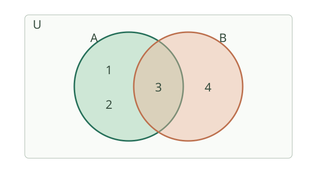
图中矩形代表全集 \(U\)，两个圆分别代表 \(A=\{1,2,3\}\) 和 \(B=\{3,4\}\)。两圆重叠的部分是交集 \(A\cap B=\{3\}\)；属于至少一个圆的元素组成并集 \(A\cup B=\{1,2,3,4\}\)。例如若全集还有元素 5，A 的补集包括 4 和 5；补集必须先确定全集，不能脱离 U 讨论。
将这个图应用到选课：A 表示选择数学课的学生，B 表示选择物理课的学生。交集是两门都选的人；并集是至少选一门的人。将两门人数相加时，两门都选的人被算了两次，所以要减去交集人数：\(|A\cup B|=|A|+|B|-|A\cap B|\)。思想： 分类与避免重复计数。
5.1 集合与逻辑【A】
- 元素与集合：∈、∉；集合之间：包含、相等。
- 交集 A∩B、并集 A∪B、相对于全集的补集。
- 开区间 (a,b)、闭区间 [a,b]、半开区间；无穷端点始终使用圆括号。
- “任意”与“存在”的区别；否定“任意 x 都成立”是“存在 x 不成立”。
- 若 p⇒q，p 是 q 的充分条件，q 是 p 的必要条件；双向成立才是充要条件。
- 会用直接证明、反证法与反例；举几个例子不能证明一般命题。
5.2 函数的完整框架【A】
- 定义域、对应关系、值域；求定义域时同时检查分母、偶次根式、对数等条件。
- 复合函数：(f∘g)(x)=f(g(x))，要求 x 属于 g 的定义域且 g(x) 属于 f 的定义域。
- 单调性：在指定区间内比较任意 x₁<x₂ 对应的函数值。
- 奇函数 f(−x)=−f(x)，偶函数 f(−x)=f(x)，定义域都必须关于原点对称。
- 周期性：对合适的非零 T，有 f(x+T)=f(x)；讨论时注意定义域。
- 反函数：原函数在所讨论定义域上必须是一一对应；其图像与原函数关于 y=x 对称。
- 零点：f(x)=0 的解。连续函数在区间端点异号可保证区间内存在零点，通常不能保证唯一。
5.3 图像变换【A】
- y=f(x−h)+k：原图像向右平移 h、向上平移 k，h、k 可以为负。
- y=−f(x)：关于 x 轴对称；y=f(−x)：关于 y 轴对称。
- y=af(x)：纵向伸缩；y=f(bx)（b≠0）：横向尺度变为原来的 1/|b|，b<0 还包含反射。
- y=|f(x)|：将 x 轴下方部分翻到上方。
5.3.1 图像平移为什么“左加右减”？
设点 \((u,f(u))\) 在原图像上。把该点向右移动 \(h\)，新坐标是 \((u+h,f(u))\)。令新横坐标 \(x=u+h\)，则 \(u=x-h\)，所以新图像为 \(y=f(x-h)\)。
证明使用的思想： 换元、数形结合。例： \(y=x^2\) 向右平移2变为 \(y=(x-2)^2\)，顶点从 \((0,0)\) 移到 \((2,0)\)。再向上移3得 \(y=(x-2)^2+3\)。参考：OpenStax 函数图像变换。
5.4 幂、指数、对数【A】
- 指数函数 y=a^x：a>0 且 a≠1；值域 (0,+∞)，经过 (0,1)。
- a>1 时递增；0<a<1 时递减。
- 对数定义：log_a x=y 等价于 a^y=x，要求 a>0、a≠1、x>0。
- log_a(MN)=log_a M+log_a N；log_a(M/N)=log_a M−log_a N，M、N>0。
- log_a(M^r)=r log_a M，M>0；换底公式 log_a x=ln x/ln a。
- ln x 是自然对数，底数为 e；ln(a+b) 通常不能拆开。
- 对数不等式必须同时考虑底数决定的单调性与真数为正。
集合运算的计数关系与逻辑命题
有限集合满足容斥关系 \[ |A\cup B|=|A|+|B|-|A\cap B|. \] 先加两集合的元素数时，交集被数了两次，所以减去一次。若 \(A\subseteq U\)，补集为 \(A^c=U\setminus A\)，且 \(|A^c|=|U|-|A|\)。这用于调查中统计“至少满足一个条件”的人数，也用于概率公式 \(P(A\cup B)=P(A)+P(B)-P(A\cap B)\)。
命题 \(p\Rightarrow q\) 的逆命题是 \(q\Rightarrow p\)，否命题是 \(\neg p\Rightarrow\neg q\)，逆否命题是 \(\neg q\Rightarrow\neg p\)。原命题与逆否命题等价，逆命题一般不等价。全称命题 \(\forall x\in D, P(x)\) 的否定为 \(\exists x\in D,\neg P(x)\)；存在命题否定为全称命题。证明“对所有实数成立”只需找到一个反例即可推翻。充分必要条件可用集合表示：若命题条件 \(p\) 的解集包含于结论 \(q\) 的解集，则 \(p\) 是 \(q\) 的充分条件。
指数、对数和函数模型
对 \(a>0\)，分数指数 \(a^{m/n}=\sqrt[n]{a^m}\) 保持指数律；实数指数可由有理数逼近扩展。指数函数 \(y=a^x\) 和对数函数 \(y=\log_a x\) 要求 \(a>0,a\ne1\)，二者互为反函数。对数函数定义域为 \(x>0\)、值域为实数，过 \((1,0)\)；底数大于 1 时递增，介于 0 和 1 时递减。
对正底数 \(a,b\) 和实数 \(x,y\)，指数运算满足 \(a^xa^y=a^{x+y}\)、\(a^x/a^y=a^{x-y}\)、\((a^x)^y=a^{xy}\)、\((ab)^x=a^xb^x\)。正底数保证这里涉及的实数幂有定义；包含零或负底数时应另行检查，不能不加条件套用。
\(y=2^x\) 的图像经过 \((-1,1/2),(0,1),(1,2)\)，定义域为全体实数，值域是正实数，随 \(x\) 增大而递增。\(y=\log_2x\) 经过交换坐标得到的 \((1/2,-1),(1,0),(2,1)\)，两图像关于直线 \(y=x\) 对称；若底数为 \(1/2\)，指数和对数函数则都递减。对数的底必须为正且不等于 1，真数必须大于零。
令 \(M=a^u,N=a^v\)，由 \(MN=a^{u+v}\) 得 \(\log_a(MN)=\log_a M+\log_a N\)。同样，\(\log_a(M/N)=\log_a M-\log_a N\)、\(\log_a(M^r)=r\log_a M\)，其中 \(M,N>0\)。换底公式 \(\log_a x=\log_b x/\log_b a\) 来自将两边写成底为 \(b\) 的指数。思想： 逆运算与等价转化。对数把乘除化成加减，历史上帮助天文学家简化大量计算。
固定 \(a>1,r>0\)，当 \(x\to+\infty\)，\(\log x\) 比 \(x^r\) 增长慢，而 \(x^r\) 比 \(a^x\) 慢。实际增长不一定持续符合某个模型，例如复利模型假设利率保持固定。若连续函数在区间两端异号，二分法反复保留变号半区间；第 \(n\) 次后区间长度为初始长度的 \(2^{-n}\)。
方根与分数指数幂
\(n\) 次方根是满足 \(u^n=a\) 的实数 \(u\)，其中 \(n\ge2\) 为整数。\(n\) 为奇数时，每个实数 \(a\) 恰有一个实数 \(n\) 次方根；\(n\) 为偶数时，正数有两个互为相反数的实数 \(n\) 次方根，零只有零，负数没有实数 \(n\) 次方根。偶次根号 \(\sqrt[n]{a}\) 表示非负的主值，因此 \(\sqrt[4]{16}=2\)，而 \(u^4=16\) 的实数解为 \(u=\pm2\)。
对 \(a>0\)、整数 \(m\) 和正整数 \(n\)，定义 \(a^{m/n}=\sqrt[n]{a^m}\)；若 \(m<0\) 则需底数非零。例如 \(27^{2/3}=9\)、\(27^{-2/3}=1/9\)。对于非正底数，实数幂的定义依指数及采用的约定而异，不应把正底数上的指数法则无条件推广；零的负次幂无定义。
集合与命题：条件与反例
设全集 \(U=\{1,2,3,4,5\}\)，\(A=\{1,2,3\}\)，\(B=\{3,4\}\)。则 \(A\cap B=\{3\}\)，\(A\cup B=\{1,2,3,4\}\)，\(U\setminus A=\{4,5\}\)。元素属于集合写作 \(3\in A\)，集合包含关系写作 \(B\subseteq U\)，两类符号不能互换。
集合中的对象称为元素；在给定定义下，每个对象是否属于该集合应确定，同一元素不重复计数，元素的排列顺序不影响集合。例如 \(\{1,2,2\}=\{2,1\}\)。可用列举法写有限集合，也可用描述法写 \(\{x\in\mathbb R:x^2<4\}=(-2,2)\)。\(\varnothing\) 没有元素，而 \(\{0\}\) 含一个元素，两者不同。
“\(x>2\)”足以推出“\(x>1\)”，但反向不成立，例如 \(x=1.5\)。因此前者是后者的充分不必要条件。命题“所有实数的平方都大于零”的否定是“存在实数的平方不大于零”；\(x=0\) 就是反例。量词否定既要替换“所有／存在”，也要否定内部条件。
在实数范围内，\(x^2=1\) 的充要条件是 \(x=1\) 或 \(x=-1\)：前者可推出后者，后者也可推出前者。说明充要关系时要检查两个方向；“充分但不必要”的例子不能被当作充要条件。
空集、包含和区间。 空集 \(\varnothing\) 不含任何元素，是每个集合的子集；但 \(\varnothing\in A\) 是否成立要看空集是否被列为 \(A\) 的元素。若 \(A\subseteq B\) 且 \(B\subseteq A\)，则 \(A=B\)。例如 \(A=\{x\in\mathbb R:-1<x\le2\}=(-1,2]\)，\(B=[1,3)\)，则 \(A\cap B=[1,2]\)，\(A\cup B=(-1,3)\)。交集取共同部分，并集取至少属于一个集合的部分；端点是否纳入必须分别检查。
如果 \(A\subseteq B\) 且 \(A\ne B\)，则 \(A\) 是 \(B\) 的真子集。若有限集合有 \(n\) 个元素，每个元素在构造子集时都可选择“取”或“不取”，共有 \(2^n\) 个子集，其中包括空集与原集合。例如 \(\{a,b\}\) 的四个子集是 \(\varnothing,\{a\},\{b\},\{a,b\}\)。
量词的顺序。 “每个实数 \(x\) 都存在实数 \(y\) 使 \(y>x\)”为真，例如取 \(y=x+1\)。但“存在一个实数 \(y\)，对每个实数 \(x\) 都有 \(y>x\)”为假：给定任何 \(y\)，取 \(x=y+1\) 即可反驳。交换“任意”和“存在”的顺序可能改变命题含义；量词否定时，变量范围保持不变，内部谓词也必须否定。
对数定义域与不等式
求 \(\log_2(x-1)>2\) 的解：先要求真数 \(x-1>0\)，即 \(x>1\)。由于底数 2 大于 1，函数递增，故不等式等价于 \(x-1>2^2=4\)，得到 \(x>5\)，它满足原定义域。若底数改为 \(1/2\)，对数函数递减，比较指数时不等号方向相反，且真数仍需为正。
连续函数零点与二分法
若函数在闭区间 \([a,b]\) 上连续，且 \(f(a)f(b)<0\)，则开区间 \((a,b)\) 内至少有一个零点；这不能保证只有一个零点。二分法从中点开始计算：若中点恰好为零，已经找到零点；否则保留一个两端仍异号的半区间。每一步保持连续性与异号条件，新区间长度减半，给出零点位置的逐步近似。
例：\(f(x)=x^2-2\) 在 \([1,2]\) 连续且两端函数值为 −1、2。中点 1.5 的函数值为 0.25，保留 \([1,1.5]\)；再取中点 1.25，函数值为 −0.4375，保留 \([1.25,1.5]\)。因此正零点 \(\sqrt2\) 在该区间内，经过两次二分后区间长度为 \(1/4\)。二分法得到的是保证包含某个零点的区间，取中点作近似时误差不超过半个区间长。
定义域、奇偶性与单调性：完整检查顺序
求 \(f(x)=\sqrt{2x-1}/(x-2)\) 的定义域：实数范围下根号要求 \(2x-1\ge0\)，分母要求 \(x-2\ne0\)，取交集得 \([1/2,2)\cup(2,+\infty)\)。如果还有对数，须同时令真数大于零。求复合函数 \(f(g(x))\) 时还要先保证 \(g(x)\) 有定义，再保证 \(g(x)\) 落在 \(f\) 的定义域。
判断奇偶性先检查定义域是否关于原点对称，再比较 \(f(-x)\) 与 \(f(x)\)、\(-f(x)\)。例如 \(f(x)=x+1/x\) 定义域为 \(\mathbb R\setminus\{0\}\)，且 \(f(-x)=-f(x)\)，因此是奇函数。讨论单调性必须说明区间：\(1/x\) 在 \((-\infty,0)\) 和 \((0,+\infty)\) 分别递减，但不能合并说它在整个定义域上递减。
按定义证明 \(x^2\) 在 \([0,+\infty)\) 递增：任取 \(0\le x_1<x_2\)，有 \(x_2^2-x_1^2=(x_2-x_1)(x_2+x_1)>0\)，故 \(f(x_1)<f(x_2)\)。同一个函数在不同区间可能具有不同单调性。
函数可以用解析式、表格或图像表示。同一个对应关系可能有不同表示方式：例如每小时匀速行驶 60 千米、时间 \(t\ge0\) 时，路程由 \(s=60t\) 给出，也可以列出 \((t,s)=(0,0),(1,60),(2,120)\) 或在坐标平面作相应射线。表格中只列出部分点不等于函数只在这些点有定义；实际时间范围及单位应由题目条件确定。
分段函数与应用。 假设停车不超过 2 小时按每小时 0.5 元计费，超过 2 小时的部分按每小时 0.8 元计费，允许按实际时长结算。停放 \(t\ge0\) 小时的费用为 \[ C(t)=\begin{cases}0.5t,&0\le t\le2,\\1+0.8(t-2),&t>2.\end{cases} \] 例如 \(C(2)=1\)、\(C(3)=1.8\)。不同区间使用不同表达式，但每个允许的输入仍只对应一个输出；端点 2 由第一段包含，不可遗漏或让它得到两个不同的结果。这是说明建模的自设计费规则，实际收费按具体规则确定。
幂函数与指数函数的区分
幂函数的常见形式为 \(y=x^\alpha\)，底数随 \(x\) 变化；指数函数 \(y=a^x\) 的底数 \(a>0\)、\(a\ne1\) 固定，自变量在指数上。幂函数的实数定义域依赖指数，例如 \(x^2\) 的定义域为全体实数，\(x^{-1}\) 要求 \(x\ne0\)，\(x^{1/2}\) 要求 \(x\ge0\)。不能把其中一种的定义域和单调性直接套给所有指数。
常见五种幂函数可以这样比较：
| 函数 | 定义域 | 值域 | 单调性与奇偶性 |
|---|---|---|---|
| \(x\) | \(\mathbb R\) | \(\mathbb R\) | 全域递增，奇函数 |
| \(x^2\) | \(\mathbb R\) | \([0,+\infty)\) | 负半轴递减、正半轴递增，偶函数 |
| \(x^3\) | \(\mathbb R\) | \(\mathbb R\) | 全域递增，奇函数 |
| \(x^{1/2}\) | \([0,+\infty)\) | \([0,+\infty)\) | 定义域上递增，定义域不关于原点对称 |
| \(x^{-1}\) | \(\mathbb R\setminus\{0\}\) | \(\mathbb R\setminus\{0\}\) | 负、正半轴各自递减，奇函数 |
这些图像都经过 \((1,1)\)，但一般不会经过完全相同的其他点。对正数比较幂时还要注意底数范围：\(2^2>2\)，而 \((1/2)^2<1/2\)，所以不能笼统地说“指数越大值越大”。
指数与对数运算例题。 \(8^{2/3}=(\sqrt[3]{8})^2=4\)，而 \(16^{-1/2}=1/\sqrt{16}=1/4\)。由对数定义，\(\log_2 8=3\)，\(\log_{1/2}4=-2\)。例如解 \(\log_{1/2}(x-1)>-2\)：先要求 \(x>1\)，再利用底数在 0 与 1 之间时对数函数递减，得到 \(x-1<4\)，所以解集为 \(1<x<5\)。把指数形式与真数范围一起核对，可以避免遗漏不等号反向。
6. 高中：三角函数【A】
从测量高度认识三角函数
想求一棵不能直接爬上去的树的高度，可以在地面测出到树的水平距离，再测量视线与地面的夹角。树高、距离和视线构成直角三角形；三角函数用角度与边长的比例把它们联系起来。古代的土地测量和天文观测也推动了这类方法的发展。
直角三角形中的名词
在直角三角形中，面对直角的最长边叫斜边。针对选定的锐角 \(\theta\)，不接触这个角的直角边叫对边；接触这个角且不是斜边的直角边叫邻边。换一个锐角观察，对边和邻边会交换，斜边不变。

图中 \(A=\theta\)，\(BC\) 是对边，\(AB\) 是邻边，\(AC\) 是斜边。三个三角比定义为 \[ \sin\theta=\frac{\text{对边}}{\text{斜边}},\qquad \cos\theta=\frac{\text{邻边}}{\text{斜边}},\qquad \tan\theta=\frac{\text{对边}}{\text{邻边}}. \] 例如三条边依次为 \(BC=3,AB=4,AC=5\)，则 \(\sin\theta=3/5\)、\(\cos\theta=4/5\)、\(\tan\theta=3/4\)。两个直角三角形只要有同一个锐角，就相似，对应边成比例；因此这三个比只由角的大小决定，与三角形的放大或缩小无关。数学思想： 相似与比例，把长度问题转化为角度关系。
实际测量中，水平距离为 20 米、仰角为 \(30^\circ\)，高度差为 \(20\tan30^\circ=20/\sqrt3\) 米；要得到目标离地高度，还要加上观测点离地高度，且这里假定地面水平。
角度制、弧度制和任意角
角度制把一周分成 \(360^\circ\)；弧度用圆弧长除以半径定义角的大小。半圆的弧长为 \(\pi r\)，除以半径得到 \(\pi\) 弧度，因此 \(180^\circ=\pi\) 弧度、\(90^\circ=\pi/2\) 弧度。度数转换为弧度时乘 \(\pi/180\)，例如 \(30^\circ=\pi/6\)。
把角看成射线从始边转到终边的旋转量：逆时针为正角，顺时针为负角；超过一周仍可表示，例如 \(450^\circ\) 与 \(90^\circ\) 的终边相同。终边相同的角相差 \(360^\circ\) 的整数倍，即 \(2k\pi\)（\(k\) 为整数）。角度数值不同不意味着终边一定不同。
单位圆：将三角函数推广到任意角
单位圆是以原点为圆心、半径为 1 的圆。让角 \(\theta\) 从 x 轴正方向开始旋转，终边与单位圆交于点 \(P\)。定义 \(P\) 的横坐标为 \(\cos\theta\)，纵坐标为 \(\sin\theta\)，即 \(P=(\cos\theta,\sin\theta)\)。当 \(\cos\theta\ne0\) 时，\(\tan\theta=\sin\theta/\cos\theta\)。

图中点在第一象限，水平和竖直方向的投影分别是 \(\cos\theta\)、\(\sin\theta\)。半径为 1，根据勾股定理 \(\cos^2\theta+\sin^2\theta=1\)。这个定义保留锐角三角比，又能表示钝角、负角和多圈旋转；正弦、余弦的正负随点所在象限改变。正切在 \(\cos\theta=0\) 时无定义，不能把它当作无限大这个函数值。
函数图像、周期和振幅
将旋转角 \(x\) 作为横坐标、单位圆上对应点的纵坐标 \(\sin x\) 作为纵坐标，就得到正弦曲线。旋转一周后回到同一个点，因此数值每隔 \(2\pi\) 重复；这个最小的正重复长度叫最小正周期。

从左到右的关键点为 \((0,0)\)、\((\pi/2,1)\)、\((\pi,0)\)、\((3\pi/2,-1)\)、\((2\pi,0)\)。正弦和余弦的值都在 \([-1,1]\)；例如 \(y=2\sin x+1\) 绕中线 \(y=1\) 上下变化，最大值 3、最小值 −1，振幅是中线到峰值的距离 2。周期运动和交流电压等问题可用这类曲线近似，但模型是否适合应由实际数据检验。
6.1 定义、弧度与图像
- 180°=π 弧度；微积分中通常使用弧度。
- 单位圆上对应点坐标为 (cos x,sin x)；tan x=sin x/cos x，要求 cos x≠0。
- sin、cos 定义域为实数，值域 [−1,1]，最小正周期 2π。
- tan 的最小正周期为 π，定义域排除 x=π/2+kπ（k 为整数）。
- y=A sin(ωx+φ)+b（A、ω≠0）：振幅 |A|，周期 2π/|ω|，中线 y=b。
6.2 核心恒等式
- sin²x+cos²x=1；1+tan²x=1/cos²x（cos x≠0）。
- sin(α±β)=sinα cosβ±cosα sinβ。
- cos(α±β)=cosα cosβ∓sinα sinβ。
- sin2x=2sin x cos x。
- cos2x=cos²x−sin²x=2cos²x−1=1−2sin²x。
- sin²x=(1−cos2x)/2；cos²x=(1+cos2x)/2。
- sin(−x)=−sin x；cos(−x)=cos x。
6.2.1 和差、倍角公式与证明思路
单位向量 \(u=(\cos\alpha,\sin\alpha)\)、\(v=(\cos\beta,\sin\beta)\)。用坐标计算内积为 \(\cos\alpha\cos\beta+\sin\alpha\sin\beta\)；用几何内积计算为 \(\cos(\alpha-\beta)\)。所以
\[ \cos(\alpha-\beta)=\cos\alpha\cos\beta+\sin\alpha\sin\beta. \]
证明使用的思想： 数形结合、同一量的两种表示。这里把几何内积公式作为已知结论；若它由和差公式建立，就不能用此证明，避免循环论证。
利用 \(\cos(-\beta)=\cos\beta\)、\(\sin(-\beta)=-\sin\beta\)，可推得 \(\cos(\alpha+\beta)\) 公式；再用 \(\sin t=\cos(\pi/2-t)\) 推出
\[ \sin(\alpha+\beta)=\sin\alpha\cos\beta+\cos\alpha\sin\beta. \]
令 \(\alpha=\beta=x\)，得到 \(\sin2x=2\sin x\cos x\)，\(\cos2x=\cos^2x-\sin^2x\)。使用的思想： 特殊化、等价变形。
6.3 解三角形
- 正弦定理：a/sin A=b/sin B=c/sin C=2R，其中 R 为外接圆半径。
- 余弦定理：c²=a²+b²−2ab cos C。
- 面积：S=ab sin C/2，C 是边 a、b 的夹角。
易错点： 三角函数方程要写出周期产生的全部解，再根据区间筛选；不能随意约去可能为零的 sin x 或 cos x。
三角函数图像变换和应用建模
对 \(y=A\sin(\omega x+\varphi)+b\;(A\ne0,\omega\ne0)\)，振幅为 \(|A|\)，周期为 \(T=2\pi/|\omega|\)，相位平移为 \(-\varphi/\omega\)，中线为 \(y=b\)。变换由令 \(u=\omega x+\varphi\) 得到：先看正弦输入怎样缩放和平移，再看输出怎样伸缩和平移。该形式可拟合潮汐、日照、交流电压等周期现象；参数应对应振幅、周期、相位和平均水平。
正弦定理 \(a/\sin A=2R\) 的几何来源是外接圆中弦长 \(a=2R\sin A\)。余弦定理 \(c^2=a^2+b^2-2ab\cos C\) 可把一边投影到另一边后用勾股定理推出；当 \(C=90^\circ\) 时退化为勾股定理。测距时若不能直接抵达目标，可测一条基线及两个角，再用正弦定理求未知距离。这一思想连接了古代测量、海伦公式与三角测量。
匀速圆周运动。 设质点沿半径为 \(R>0\) 的圆以恒定角速度 \(\omega\) 运动，时刻 \(t\) 的角位置为 \(\theta=\omega t+\varphi\)，其中角用弧度计。若圆心的竖直坐标为 \(b\)，质点的竖直坐标是 \(y=b+R\sin(\omega t+\varphi)\)。当 \(\omega\ne0\) 时重复一周需要 \(T=2\pi/|\omega|\)；\(\omega=0\) 时质点不转动，不能用该式给出有限转动周期。
任意角、诱导公式和正切
逆时针转角为正、顺时针为负，终边相同的角相差 \(2k\pi\)。弧度等于弧长除以半径，故 \(s=r\theta\)、扇形面积 \(S=r^2\theta/2\)，其中 \(\theta\ge0\) 使用弧度。单位圆上点的坐标为 \((\cos\theta,\sin\theta)\)，由对称可得 \(\sin(\pi-\theta)=\sin\theta\)、\(\cos(\pi-\theta)=-\cos\theta\)。这是数形结合；先判断终边所在象限，再判断正负。
\(\tan\theta=\sin\theta/\cos\theta\)，在 \(\theta=\pi/2+k\pi\) 无定义；其周期是 \(\pi\)，在每个连续区间 \((-\pi/2+k\pi,\pi/2+k\pi)\) 上递增。由正弦、余弦和差公式相除，可得 \(\tan(\alpha+\beta)=(\tan\alpha+\tan\beta)/(1-\tan\alpha\tan\beta)\)，前提是涉及的正切与分母均有定义。振动模型可用角度或弧度表示，但代入时必须保持单位一致；不带转换系数的标准三角函数求导公式采用弧度。
正切函数是奇函数，值域为 \(\mathbb R\)，\(\tan x=0\) 当且仅当 \(x=k\pi\)，其图像经过 \((0,0)\)、\((\pi/4,1)\) 和 \((-\pi/4,-1)\)，在 \(x=\pi/2+k\pi\) 处有竖直渐近线，\(k\in\mathbb Z\)。对应的差角公式是 \(\tan(\alpha-\beta)=(\tan\alpha-\tan\beta)/(1+\tan\alpha\tan\beta)\)，同样要求所涉及的正切有定义且右侧分母非零。
例如 \(\sin(7\pi/6)=-1/2\)、\(\cos(7\pi/6)=-\sqrt3/2\)，因为该角位于第三象限，参考角为 \(\pi/6\)，正弦和余弦都为负；于是 \(\tan(7\pi/6)=\sqrt3/3\)。另一方面，\(\tan(\pi/4+\pi/6)=(1+1/\sqrt3)/(1-1/\sqrt3)=2+\sqrt3\)，这里两个正切及公式分母均有定义。
常见诱导关系还包括 \(\sin(\pi+\theta)=-\sin\theta\)、\(\cos(\pi+\theta)=-\cos\theta\)、\(\sin(\pi/2-\theta)=\cos\theta\)、\(\cos(\pi/2-\theta)=\sin\theta\)。它们可分别由单位圆上的中心对称和坐标交换得到；涉及正切时还需检查原式和变换后的分母非零，而不只是判断符号。
恒等变换的例子：\(\sqrt3\sin x+\cos x=2\sin(x+\pi/6)\)，因为展开右边得到 \(2[\sin x(\sqrt3/2)+\cos x(1/2)]\)。因此该式在全体实数上的最大值为 2、最小值为 −2；如果限定 \(x\) 的范围，还需检查对应相位能否取到峰值。
周期、相位与三角方程
\(y=2\sin(2x-\pi/3)+1\) 的振幅是 2，中线是 \(y=1\)，周期为 \(2\pi/2=\pi\)。因为 \(2x-\pi/3=2(x-\pi/6)\)，可从 \(y=2\sin(2x)\) 看作向右平移 \(\pi/6\)，再向上平移 1；括号内的系数必须先提出来。
解 \(\sin x=1/2\)：在一个完整周期内有 \(x=\pi/6\) 和 \(x=5\pi/6\)，全部实数解为 \(x=\pi/6+2k\pi\) 或 \(x=5\pi/6+2k\pi\)，其中 \(k\in\mathbb Z\)。若题目限定区间，再筛选这些解；不能只写一个锐角。
画 \(y=2\sin(2x-\pi/3)+1\) 的一个周期时，可令相位依次为 \(0,\pi/2,\pi,3\pi/2,2\pi\)，解出对应的横坐标，再代入得到纵坐标 \(1,3,1,-1,1\)。中线为 1、最大值为 3、最小值为 −1，五点按横坐标顺序描绘出一个周期；不要把相位 \(2x-\pi/3\) 的五个取值误当作横坐标。
弧度与单位圆
弧度定义为圆心角所对弧长除以半径，因此半圆对应 \(\pi\) 弧度、整圆对应 \(2\pi\) 弧度，\(60^\circ=\pi/3\)。半径为 3、圆心角为 \(\pi/3\) 的扇形，其弧长是 \(3\cdot\pi/3=\pi\)，面积是 \(3^2(\pi/3)/2=3\pi/2\)。这些弧长与面积公式中的角必须使用弧度且表示非负圆心角。
单位圆上角 \(\theta\) 的终边对应点为 \((\cos\theta,\sin\theta)\)。由 \(x^2+y^2=1\) 得 \(\sin^2\theta+\cos^2\theta=1\)。例如 \(\theta=5\pi/6\) 位于第二象限，对应参考角 \(\pi/6\)，所以 \(\sin\theta=1/2\)、\(\cos\theta=-\sqrt3/2\)。象限决定符号，参考角用于确定绝对值。
正弦、余弦函数的图像与性质
令 \(k\in\mathbb Z\)。正弦函数是奇函数，余弦函数是偶函数，两者定义域都是 \(\mathbb R\)、值域都是 \([-1,1]\)，最小正周期均为 \(2\pi\)。正弦函数在 \([-\pi/2+2k\pi,\pi/2+2k\pi]\) 上递增，在 \([\pi/2+2k\pi,3\pi/2+2k\pi]\) 上递减；余弦函数在 \([-\pi+2k\pi,2k\pi]\) 上递增，在 \([2k\pi,\pi+2k\pi]\) 上递减。各区间分别成立，不可把分离的区间直接合并。
\(\sin x=0\) 当且仅当 \(x=k\pi\)，最大值 1 出现在 \(x=\pi/2+2k\pi\)，最小值 −1 出现在 \(x=-\pi/2+2k\pi\)；\(\cos x=0\) 当且仅当 \(x=\pi/2+k\pi\)，最大值 1 出现在 \(x=2k\pi\)，最小值 −1 出现在 \(x=\pi+2k\pi\)。在 \([0,2\pi]\) 内画正弦曲线，可依次描点 \((0,0),(\pi/2,1),(\pi,0),(3\pi/2,-1),(2\pi,0)\)，再按周期延续。余弦曲线可用 \(\cos x=\sin(x+\pi/2)\) 从正弦曲线平移得到。
正弦定理中的两解现象
在 \(\triangle ABC\) 中，按约定边 \(a,b,c\) 分别对角 \(A,B,C\)。若已知 \(A=30^\circ\)、\(a=2\)、\(b=3\)，正弦定理给出 \(\sin B=b\sin A/a=3/4\)。角 \(B\) 可能是 \(\arcsin(3/4)\)，也可能是 \(180^\circ-\arcsin(3/4)\)；两者与 \(A\) 之和均小于 180°，所以这里有两个可能三角形。确定角后 \(C=180^\circ-A-B\)，再用正弦定理求 \(c\)。若候选角与已知角之和不小于 180°，该候选必须舍去。
7. 高中：向量与解析几何
向量入门：用方向和长度描述位移
标量只用数值和单位表示，如质量 3 千克；向量同时有大小和方向，如“向东走 3 米”。向量的大小也叫模，记为 \(|\mathbf a|\)。大小和方向都相同的向量相等，起点可以不同；零向量的模为 0，没有确定方向。与 \(\mathbf a\) 长度相同、方向相反的向量为 \(-\mathbf a\)。
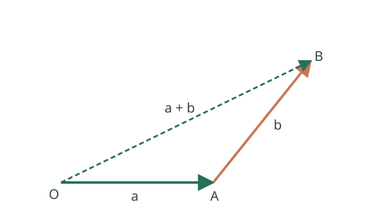
图中先沿 \(\mathbf a\) 从 O 到 A，再沿 \(\mathbf b\) 从 A 到 B；总位移 \(\mathbf a+\mathbf b\) 从 O 直接指向 B。若向东 3 米后向北 4 米，总位移为坐标 \((3,4)\)，长度为 5 米；实际走过的路程为 7 米。数乘 \(2\mathbf a\) 表示长度变为两倍、方向不变，\(-\mathbf a\) 则方向相反。
**数量积（点积）**是两个向量运算得到的数：\(\mathbf a\cdot\mathbf b=|\mathbf a||\mathbf b|\cos\theta\)，其中 \(\theta\) 是两非零向量的夹角。它衡量一个向量在另一个方向上的分量：力与位移的点积可表示恒力做功。坐标中 \((a_1,a_2)\cdot(b_1,b_2)=a_1b_1+a_2b_2\)；两个非零向量点积为 0 时互相垂直。
向量坐标：把一步位移拆成两个方向
平面直角坐标系中，坐标 \((3,4)\) 可以表示“向右 3、向上 4”的位移。若向量起点是 \(P=(x_1,y_1)\)、终点是 \(Q=(x_2,y_2)\)，则 \(\overrightarrow{PQ}=(x_2-x_1,y_2-y_1)\)：终点减起点，得到各方向的变化量。
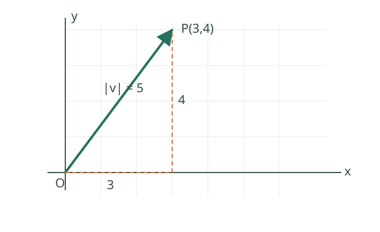
图中直角三角形的两直角边分别为 3、4，由勾股定理，向量的模为 \(\sqrt{3^2+4^2}=5\)。例如从 \((1,2)\) 到 \((4,6)\)，位移也是 \((3,4)\)：向量相同不要求起点相同。实际走过路线如果先向右 3 再向上 4，路程为 7，而从起点到终点的位移长度为 5。
分量是沿坐标轴方向的数量；单位向量是模为 1 的向量。非零向量 \(\mathbf v\) 同方向的单位向量为 \(\mathbf v/|\mathbf v|\)；零向量没有确定方向，也不能除以零来求单位向量。
数量积、夹角与投影：先区分结果类型
两非零向量的夹角 \(\theta\) 取 \([0,\pi]\)。数量积 \(\mathbf a\cdot\mathbf b=|\mathbf a||\mathbf b|\cos\theta\) 的结果是一个数：锐角时为正，钝角时为负，直角时为零。两个非零向量点积为零当且仅当垂直；零向量的点积虽然也是零，但不能据此给它指定方向或夹角。
把 \(\mathbf a\) 投影到非零向量 \(\mathbf b\) 方向，标量投影是 \((\mathbf a\cdot\mathbf b)/|\mathbf b|\)，它是带方向符号的长度；向量投影是 \(((\mathbf a\cdot\mathbf b)/(\mathbf b\cdot\mathbf b))\mathbf b\)，结果是一个向量。例：\(\mathbf a=(3,4)\)、\(\mathbf b=(2,0)\)，标量投影为 3，向量投影为 \((3,0)\)。不要把点积 6、标量投影 3 和向量投影混为一谈。恒力做功 \(W=\mathbf F\cdot\mathbf s\) 则是在位移方向取力的分量后乘位移长度。
解析几何的基本名词
解析几何用坐标和方程研究图形：图形上的点满足方程，满足方程的点构成图形。例如 \(x^2+y^2=4\) 表示到原点距离为 2 的点，即圆心为原点、半径为 2 的圆。直线的斜率衡量向右移动一单位时高度的变化，\(k=\Delta y/\Delta x\) 要求 \(\Delta x\ne0\)；竖直直线没有有限斜率。截距是直线与坐标轴交点的对应坐标。
轨迹是满足给定条件的所有点组成的图形。椭圆、双曲线和抛物线都是圆锥曲线；区分焦点、准线以及标准方程中的参数后，再读下面各式。把实际距离关系写成方程是坐标法的关键。
直线的斜率与截距：读懂一个方程
在直线 \(y=kx+b\) 中，斜率 \(k\) 表示横坐标每增加 1，纵坐标增加多少；\(k\) 为负时表示纵坐标减少。纵截距 \(b\) 是直线与 y 轴交点的纵坐标，交点为 \((0,b)\)。例如图中的 \(y=2x+1\) 经过 \((0,1)\) 和 \((1,3)\)。
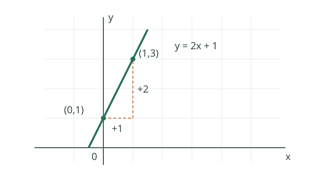
利用两点求斜率，先算横向变化 \(1-0=1\)，再算纵向变化 \(3-1=2\)，得 \(k=2/1=2\)。一般地 \(k=(y_2-y_1)/(x_2-x_1)\)，前提是 \(x_2\ne x_1\)。两点横坐标相同时，直线是竖直线 \(x=x_1\)，没有有限斜率，也不能写成 \(y=kx+b\)。斜率和截距有助于比较方案的单位成本和固定费用。
直线与圆的位置：先比较距离
直线与圆的公共点可能有两个、一个或没有，分别称为相交、相切、相离。若圆心到直线的距离为 \(d\)、半径为 \(r>0\)，三种情况依次对应 \(d<r\)、\(d=r\)、\(d>r\)。例如圆心 \((0,0)\)、半径 2 的圆与直线 \(x=2\) 相切：圆心到直线的最短距离是 2。将方程联立也是判断方法：相交对应两个不同实数交点，不能把无实数解说成相切。
图解椭圆：从距离之和到形状
平面内两个固定点叫焦点；一个动点到两焦点的距离之和保持常数，且这个常数大于两焦点的距离时，动点形成椭圆。图中 \(F_1,F_2\) 是焦点，P 是椭圆上的一点，沿椭圆移动 P 时 \(|PF_1|+|PF_2|\) 保持不变。
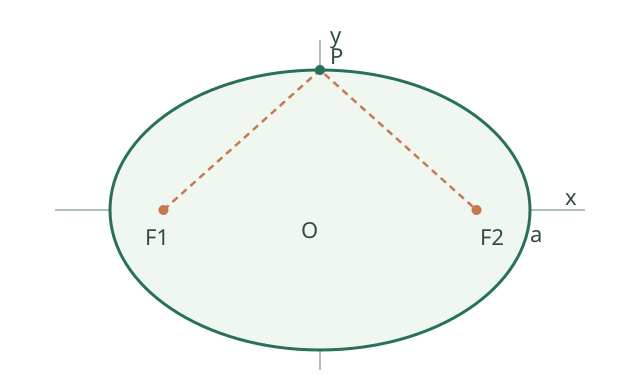
把两颗图钉固定为焦点，用长度不变的细绳套住图钉并用笔尖拉紧移动，就能画出椭圆。若两焦点距离为 \(2c\)、绳长为 \(2a\)，则 \(a>c>0\)；以中点为原点、焦点连线为 x 轴，标准方程是 \(x^2/a^2+y^2/b^2=1\)，其中 \(b^2=a^2-c^2\)。这里的 \(a\) 是从中心到长轴端点的距离，\(2a\) 才是长轴总长度，也等于焦点距离之和。图中为了易读仅表达关系，数值应以方程为准。
椭圆在轨道和光学反射问题中常被用作模型；先判断是否满足模型假设，再代入实际数据。思想： 将几何距离条件转化为坐标方程。
抛物线的焦点与准线
焦点是一个固定点，准线是一条不经过焦点的固定直线。抛物线由到焦点的距离等于到准线的垂直距离的所有点组成。图中的 \(P\) 到焦点 \(F\) 的距离等于它到左侧准线的垂直距离；点到直线的距离必须沿垂线测量。
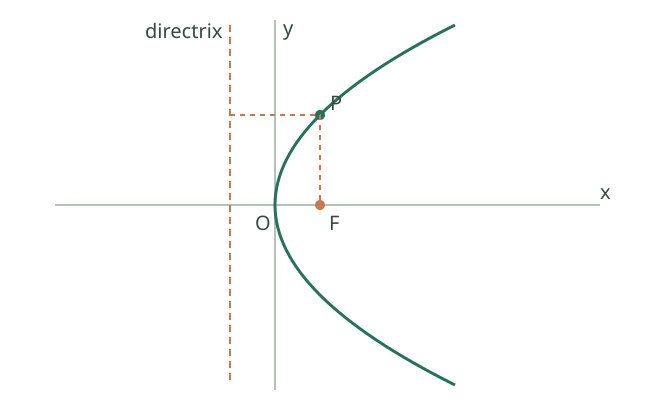
以焦点 \((p/2,0)\)、准线 \(x=-p/2\) 为例，\(p>0\)。设曲线上点为 \((x,y)\)，距离相等得到 \(\sqrt{(x-p/2)^2+y^2}=|x+p/2|\)。两边平方、展开并消去相同项，得到 \(y^2=2px\)。反过来，方程使 \(x\ge0\)，代回可验证原距离关系，避免平方引入多余点。思想： 几何条件转化为坐标方程，变形后再检查。抛物面反光镜利用其反射性质聚光，但实际反射还依赖镜面形状与光源位置。
读懂空间中的直线与平面
空间中两条不同直线可以相交、平行，也可以异面：异面指不存在一个平面同时包含它们，例如长方体中互不平行也不相交的两条棱。平面与直线可能相交、平行，或者直线完全在平面内；画在纸上的透视线条相交，不代表空间中的直线一定相交。
一条非零方向向量与直线平行，用于表达直线方向；平面的非零法向量与平面内所有方向垂直，像垂直插在桌面的笔。若直线方向向量与平面法向量点积为零，只说明方向平行于平面；还须用直线上一点判断直线是在平面内，还是与平面平行且不相交。向量方向和位置要一起考虑。
7.1 平面与空间向量【A】
- 向量的长度、方向、相等、相反、加减与数乘；零向量没有确定方向。
- 平面向量 a=(a₁,a₂)、b=(b₁,b₂)：a·b=a₁b₁+a₂b₂=|a||b|cosθ。
- |a|=√(a₁²+a₂²)；空间情形增加第三坐标项。
- 对非零向量，a·b=0 等价于垂直；夹角公式要求两个向量都非零。
- 平面向量平行的坐标条件：a₁b₂−a₂b₁=0，使用方向解释时注意零向量情况。
- a 在非零向量 b 方向上的向量投影为 [(a·b)/(b·b)]b。
7.2 直线与圆【A】
- 两点距离：√[(x₂−x₁)²+(y₂−y₁)²]；中点为 ((x₁+x₂)/2,(y₁+y₂)/2)。
- 斜率 k=(y₂−y₁)/(x₂−x₁)，要求 x₂≠x₁；竖直直线没有有限斜率。
- 点斜式 y−y₀=k(x−x₀)；一般式 Ax+By+C=0，A、B 不同时为零。
- 点到直线距离：|Ax₀+By₀+C|/√(A²+B²)。
- 两条斜率存在的直线，斜率相等表示平行或重合；斜率积为 −1 表示垂直。
- 圆：(x−a)²+(y−b)²=r²（r>0）；圆心 (a,b)。
7.3 圆锥曲线【B；复杂综合题 C】
- 椭圆：x²/a²+y²/b²=1，a>b>0，焦点在 x 轴，c²=a²−b²，离心率 e=c/a∈(0,1)。
- 双曲线：x²/a²−y²/b²=1，a、b>0，c²=a²+b²，离心率 e=c/a>1，渐近线 y=±(b/a)x。
- 抛物线：y²=2px（p>0），焦点 (p/2,0)，准线 x=−p/2。
- 会从轨迹定义建立方程；掌握直线与曲线联立、判别式、韦达定理的基本使用。
- 坐标轴方向不同，方程中的 x、y 位置会交换，不能脱离图像背公式。
7.4 立体几何【B】
- 点线面关系、平行与垂直的基本判定；区分线线、线面、面面关系。
- 直线夹角、线面角、二面角；会建立空间直角坐标系。
- 使用方向向量、平面法向量解决角度问题，注意题目所求角的范围。
立体几何初步：体积、平行与垂直
空间基本事实提供公理化起点：不共线三点确定一个平面；若直线两点在平面内，则整条直线在平面内；两个相交平面有且只有一条交线。证明空间位置关系时，先区分已知关系来自公理、定理还是图形直观，不能把未证明的图形外观当作前提。
柱体体积 \(V=Sh\)，锥体 \(V=Sh/3\)，球体 \(V=4\pi R^3/3\)；圆柱、圆锥、圆台表面积和体积还可由轴截面、展开图及截面变化理解。柱体公式来自相同底面积截面的累积，锥体的三分之一可用等底等高棱锥体积关系或极限切分理解。工程中用这些公式估算容器容量、材料用量和储罐体积。
直线与平面平行的常用判定：平面外一条直线平行于平面内一条直线，则该直线平行于此平面。直线垂直平面的判定：若一条直线垂直于平面内两条相交直线，则它垂直于该平面。面面平行可转化为线面平行；面面垂直可利用交线和垂线判定。所有转化都要确认线所在平面、相交与不重合等条件。
棱柱、棱锥、棱台与旋转体
棱柱有两个互相平行的全等多边形底面，其余各面是平行四边形，相邻侧面的交线互相平行；棱锥的一个面是多边形底面，其余各面是有公共顶点的三角形。用平行于底面的平面截棱锥，截面和底面之间的部分是棱台。直棱柱的侧棱垂直于底面；“棱柱”本身并不保证侧棱垂直底面。高是底面间或顶点到底面的垂直距离，而不一定等于侧棱长。
矩形绕其一边所在直线旋转形成圆柱，直角三角形绕一直角边所在直线旋转形成圆锥，直角梯形绕垂直于两底的腰所在直线旋转形成圆台；半圆及其内部绕直径所在直线旋转形成球。例：直角边长分别为 3 和 4 的直角三角形绕长为 4 的直角边旋转，所得圆锥底半径为 3、高为 4、母线长为 5，体积为 \(12\pi\)。旋转轴若改为另一条直角边，半径和高应随之交换。
空间平行、垂直的常用判定与性质
设 \(\alpha,\beta\) 为不同平面。若 \(\alpha\) 内两条相交直线都平行于 \(\beta\)，则 \(\alpha\parallel\beta\)；只知道一条直线平行于另一平面不够。若 \(\alpha\) 内存在一条垂直于 \(\beta\) 的直线，则 \(\alpha\perp\beta\)。反过来，若 \(\alpha\perp\beta\)，交线为 \(l\)，且 \(m\) 在 \(\alpha\) 内并垂直于 \(l\)，则 \(m\perp\beta\)。线面垂直时，该线垂直于平面内任意直线；两条直线都垂直于同一平面时两线平行或重合。
线面平行的性质：若直线 \(l\parallel\alpha\)，平面 \(\beta\) 包含 \(l\) 且与 \(\alpha\) 交于直线 \(m\)，则 \(l\parallel m\)。因为 \(l,m\) 同在 \(\beta\) 内，若相交则交点也属于 \(\alpha\)，与 \(l\parallel\alpha\) 矛盾。面面平行的性质：若 \(\alpha\parallel\beta\)，另一平面 \(\gamma\) 分别与它们交于 \(a,b\)，则 \(a\parallel b\)：两线同在 \(\gamma\) 内，如果相交，其交点将同时属于互不相交的 \(\alpha,\beta\)。这里分别明确了包含关系、相交平面和交线，不能省略。
例如正方体 \(ABCD-A_1B_1C_1D_1\) 中，棱 \(AA_1\) 垂直于底面 \(ABCD\)，因为它垂直于底面内相交的两条棱 \(AB,AD\)；由于 \(AA_1\) 包含于侧面 \(ABB_1A_1\)，所以该侧面垂直于底面。这里用到的是正方体的棱之间垂直这一已知性质，而不是凭透视图外观断定垂直。
直线与圆的解析几何
直线一般式 \(Ax+By+C=0\) 的法向量为 \((A,B)\)，方向向量可取 \((-B,A)\)。圆 \((x-a)^2+(y-b)^2=r^2\) 的标准式来自圆上点到圆心距离恒为 \(r\)；展开式 \(x^2+y^2+Dx+Ey+F=0\) 配方后圆心为 \((-D/2,-E/2)\)，半径平方为 \((D^2+E^2)/4-F\)，只有半径平方为正时才是实圆。
直线和圆联立成一元二次方程，判别式大于、等于、小于零分别对应相交、相切、相离。也可比较圆心到直线距离与半径。两圆位置关系比较圆心距 \(d\) 与 \(r_1+r_2\)、\(|r_1-r_2|\)。雷达覆盖、定位和轨迹交会都是“方程组求交点”的应用；判别式把代数根数翻译成几何位置。
例如 \(x^2+y^2-4x+6y-12=0\) 配方为 \((x-2)^2+(y+3)^2=25\)，圆心是 \((2,-3)\)、半径是 5。对一般式 \(x^2+y^2+Dx+Ey+F=0\)，如果配方所得半径平方为零，轨迹只有一个点；若为负则无实数点，不能直接称为半径为正的圆。
圆锥曲线：定义、方程与性质
椭圆是到两焦点距离和为常数 \(2a\) 的点集；双曲线是两焦点距离差的绝对值为常数 \(2a\) 的点集；抛物线是到焦点与准线距离相等的点集。分别以焦点中点或对称轴建立坐标，套用距离公式并化简可导出标准方程。椭圆满足 \(c^2=a^2-b^2\)，双曲线满足 \(c^2=a^2+b^2\)，抛物线 \(y^2=2px\) 的焦点为 \((p/2,0)\)，准线为 \(x=-p/2\)。这些参数关系来自定义中的距离方程，不是孤立记忆项。
曲线与直线联立后常得二次方程：判别式判断交点数，韦达关系给交点坐标和、积。渐近线描述双曲线远处趋势；抛物线反射性质解释车灯反光镜和抛物面天线的聚焦。处理综合题时，先选坐标方向减少交叉项，再结合几何定义核验焦点、准线及参数正值。
向量的夹角、垂直与投影
取 \(a=(1,2)\)、\(b=(2,-1)\)。内积 \(a\cdot b=1\cdot2+2\cdot(-1)=0\)，两向量都非零，因此垂直。对于非零向量，夹角满足 \(\cos\theta=(a\cdot b)/(|a||b|)\)；零向量不能代入该式计算方向或夹角。
将 \(u=(3,4)\) 正交投影到 \(v=(1,0)\) 的方向：\(\operatorname{proj}_v u=(u\cdot v)/(v\cdot v)\,v=(3,0)\)，余下 \((0,4)\) 与 \(v\) 垂直。推导的关键是把投影写成 \(tv\)，再令残差 \(u-tv\) 与 \(v\) 的内积为零；分母 \(v\cdot v\) 非零是必要条件。
平面向量基本定理与坐标运算
若两个平面向量 \(e_1,e_2\) 不共线，那么平面内任意向量 \(v\) 都能唯一写为 \(v=xe_1+ye_2\)。这对向量构成一组基；若基是标准正交基，\(x,y\) 即通常的直角坐标。唯一性来自：若两种表示相减得到 \((x-x')e_1+(y-y')e_2=0\)，不共线迫使两个系数都为零。
若 \(a=(1,2)\)、\(b=(3,-1)\)，则 \(a+b=(4,1)\)、\(2a-b=(-1,5)\)、\(a\cdot b=1\)。两非零向量平行当且仅当一个是另一个的实数倍；在平面坐标下，\(a_1b_2-a_2b_1=0\) 是线性相关条件。零向量也使这个行列式为零，但没有确定方向，讨论几何夹角或方向时应分开处理。
向量的几何运算
向量具有大小和方向；有向线段 \(\overrightarrow{AB}\) 表示从 \(A\) 到 \(B\) 的位移。长度相等且方向相同的向量相等，与起点选择无关。零向量长度为零，没有确定方向；它的相反向量仍是零向量。非零向量的单位向量是 \(a/|a|\)，所以分母要求 \(a\ne0\)。
加法可用首尾相接的三角形法则：\(\overrightarrow{AB}+\overrightarrow{BC}=\overrightarrow{AC}\)。若两个向量起点相同，也可用平行四边形法则。减法定义为加相反向量；对共同起点 \(O\)，\(\overrightarrow{OB}-\overrightarrow{OA}=\overrightarrow{AB}\)。数乘 \(\lambda a\) 的长度为 \(|\lambda||a|\)：当 \(a\ne0\) 且 \(\lambda>0\) 时方向相同，\(\lambda<0\) 时方向相反，\(\lambda=0\) 时结果为零向量。
例如从 \(A=(1,1)\) 向右 3、向上 1 到 \(B=(3+1,1+1)=(4,2)\)，再向左 1、向上 2 到 \(C=(3,4)\)。两段位移分别是 \((3,1),(-1,2)\)，总位移 \((2,3)\) 正好等于 \(\overrightarrow{AC}\)。行进路程和位移长度一般不同，不能把经过的路程简单视为向量的模。
用向量证明三角形中位线定理
在 \(\triangle ABC\) 中，\(D,E\) 分别是 \(AB,AC\) 的中点。由向量的加减和数乘，\(\overrightarrow{AD}=\tfrac12\overrightarrow{AB}\)、\(\overrightarrow{AE}=\tfrac12\overrightarrow{AC}\)，所以 \[ \overrightarrow{DE}=\overrightarrow{AE}-\overrightarrow{AD} =\tfrac12(\overrightarrow{AC}-\overrightarrow{AB}) =\tfrac12\overrightarrow{BC}. \] 因此 \(DE\parallel BC\) 且 \(DE=BC/2\)。例如 \(A=(0,0)\)、\(B=(4,0)\)、\(C=(0,2)\)，中点分别为 \(D=(2,0),E=(0,1)\)，\(\overrightarrow{DE}=(-2,1)=\tfrac12(-4,2)=\tfrac12\overrightarrow{BC}\)。向量相等同时给出大小和方向关系；使用图形结论时需要确认边与三角形非退化。
三角形面积与余弦定理
在 \(\triangle ABC\) 中，边 \(a,b,c\) 分别对角 \(A,B,C\)。以边 \(a,b\) 的夹角 \(C\) 为基准，高为 \(a\sin C\) 或 \(b\sin C\)，因此面积 \(S=ab\sin C/2\)。令从顶点 \(C\) 出发的向量分别指向 \(A,B\)，由 \(|u-v|^2=|u|^2+|v|^2-2u\cdot v\) 得到余弦定理 \(c^2=a^2+b^2-2ab\cos C\)。
例：\(a=3,b=4,C=60^\circ\)，则 \(c^2=9+16-24\cdot(1/2)=13\)，所以 \(c=\sqrt{13}\)；面积为 \(3\cdot4\cdot(\sqrt3/2)/2=3\sqrt3\)。定理中的 \(C\) 必须是 \(a,b\) 的夹角；边长为正且三个角应构成非退化三角形。
同一三角形面积也满足 \(2S=bc\sin A=ca\sin B=ab\sin C\)。各边均为正，比较这些式子得到 \(a/\sin A=b/\sin B=c/\sin C\)，即正弦定理；在非退化三角形中三个内角均在 \((0,180^\circ)\)，所以各正弦值均为正。已知两角和一边时，可先用内角和求第三角，再用比例求未知边；已知两边和其中一边的对角时则可能有两解，必须检查各候选角与三角形内角和。
向量在力和位移中的应用
假设恒力 \(F=(3,4)\) 牛顿作用于沿水平正方向移动 \(s=(2,0)\) 米的物体，力做的功为内积 \(W=F\cdot s=3\times2+4\times0=6\) 焦耳。这个例子中竖直分力与位移垂直，因而对这段位移的功为零；不能据此说竖直分力不存在。
如果力的大小为 \(|F|\)、位移大小为 \(|s|\)，且两者夹角为 \(\theta\)，则恒力做功 \(W=|F||s|\cos\theta\)。这可以理解为将力投影到位移方向再乘位移长度；方向相反时功为负。非恒力的一般做功需要更进一步的积分模型，不能无条件套用恒力公式。
直线与圆：距离判定和求交
考虑圆 \(x^2+y^2=25\) 和直线 \(x=3\)。圆心 \((0,0)\) 到直线的距离为 3，小于半径 5，故有两个交点。将 \(x=3\) 代入圆方程得 \(y^2=16\)，交点是 \((3,4)\)、\((3,-4)\)。这条直线是竖直线，不能写成有限斜率的点斜式。
一般地比较圆心到直线的距离 \(d\) 与半径 \(r>0\)：\(d<r\) 相交，\(d=r\) 相切，\(d>r\) 相离。用方程消元也可求交，但计算出的候选点仍应代回两个原方程。
两圆的位置关系与交点
设两圆半径 \(r_1,r_2>0\)，圆心距为 \(d\)。若 \(d>r_1+r_2\)，两圆外离；\(d=r_1+r_2\) 时外切；\(|r_1-r_2|<d<r_1+r_2\) 时相交于两点；\(d=|r_1-r_2|>0\) 时内切；\(d<|r_1-r_2|\) 时一圆在另一圆内部且不相交。若 \(d=0\) 且 \(r_1=r_2\)，两圆重合，有无穷多个公共点；这不是内切。
例如 \(x^2+y^2=25\) 与 \((x-6)^2+y^2=25\) 的圆心距为 6，两半径都是 5，满足 \(0<6<10\)，故有两个交点。两式相减得 \(x=3\)，再代入得 \(y=\pm4\)，交点为 \((3,4),(3,-4)\)。两圆方程相减可消去二次项，但求出的候选点仍需代回原方程。
柱、锥、台与球的测量
柱体和锥体的底面积为 \(S\)、垂直高为 \(h\)，体积分别为 \(Sh\) 和 \(Sh/3\)。圆台的上、下底半径为 \(r,R\)，高为 \(h\)，体积为 \(\pi h(R^2+Rr+r^2)/3\)；球半径为 \(R\)，表面积为 \(4\pi R^2\)，体积为 \(4\pi R^3/3\)。这些长度取非负值，讨论非退化实体时要求相应尺寸为正。
棱台的上下底面积为 \(S_1,S_2\)、垂直高为 \(h\) 时，体积为 \(h(S_1+S_2+\sqrt{S_1S_2})/3\)。例如上、下底面积为 4、16，高为 3，则体积为 \(3(4+16+8)/3=28\)。该公式针对由棱锥平行于底面的截面形成的棱台，不能只知道任意两个截面面积就无条件使用。
棱柱、棱锥和棱台的表面积均为所有面的面积之和；直棱柱侧面积等于底面周长乘以侧棱长，也就是乘以高。一般斜棱柱的侧棱不等于高，不能直接将该直棱柱公式套用；可以分别求各侧面平行四边形的面积再相加。
例如底半径 3 厘米、高 4 厘米的圆锥，体积为 \(\pi\cdot3^2\cdot4/3=12\pi\) 立方厘米。若求圆锥侧面积，母线长为 \(\ell=\sqrt{3^2+4^2}=5\) 厘米，侧面积为 \(\pi r\ell=15\pi\) 平方厘米；表面积还需加上底面积 \(9\pi\)。侧面积和总体积不能混用高与母线长。
几何体直观图：斜二测的基本约定
画水平平面图形的斜二测直观图时，可先画原来互相垂直的 \(x,y\) 轴及对应的 \(x',y'\) 轴，使后者夹角取 \(45^\circ\)（或其补角）。原来平行于 \(x\) 轴的线段在图中平行于 \(x'\) 轴且长度不变；原来平行于 \(y\) 轴的线段在图中平行于 \(y'\) 轴且长度取原长度的一半。图形其他顶点可根据坐标作出，再按连接关系画边。
例如底面矩形的两条相邻边分别平行于 \(x,y\) 轴，长为 4、宽为 2；其直观图对应两条边长度分别为 4 和 1，画在 \(x',y'\) 方向上形成平行四边形。斜二测是按照约定绘制的直观图，图中角度和长度一般不等于空间真实角度和长度；证明几何结论仍须使用已知条件和定理。
绘制空间几何体时，除了底面使用上述 \(x',y'\) 规则，还可取竖直的 \(z'\) 轴与水平 \(x'\) 轴垂直；原来平行于竖直 \(z\) 轴的线段，在图中平行于 \(z'\) 且长度保持不变。例如底面长 4、宽 2、高 3 的长方体，图中三组平行于轴的棱分别按 4、1、3 的长度画出，再连接对应顶点；不可见棱按制图约定画成虚线。
空间向量与直线、平面的位置关系
设平面法向量为非零向量 \(n\)，直线方向向量为非零向量 \(v\)。若 \(v\cdot n=0\)，直线方向平行于该平面，但直线本身可能在平面内，也可能与平面平行而不相交；要结合线上的点判断。若 \(v\) 与 \(n\) 平行，直线垂直于平面。
两个平面的非零法向量平行说明平面平行或重合；法向量垂直说明两个平面垂直。讨论夹角时要核对题目约定：直线与平面夹角是锐角或直角的补余关系，不能直接把方向向量和法向量的夹角当作线面角。
空间位置关系与非共面基
空间中两条不同直线可能相交、平行或异面：异面是指不存在一个平面同时包含这两条直线，并不只是“在图上看起来没有交点”。直线与平面可能在平面内、交于一点，或平行且不相交；两个不同平面可能相交或平行。判断时要区分“平行或重合”和严格的平行关系。
若三个空间向量 \(e_1,e_2,e_3\) 不共面，它们构成空间的一组基，任意空间向量可以唯一表示为 \(xe_1+ye_2+ze_3\)。在标准正交基下，\((a_1,a_2,a_3)\cdot(b_1,b_2,b_3)=a_1b_1+a_2b_2+a_3b_3\)。例如 \((1,2,3)\cdot(2,-1,0)=0\)，两向量均非零，所以互相垂直。
存在性可通过平行分解理解：先沿 \(e_3\) 的方向把目标向量的终点投到由 \(e_1,e_2\) 张成的平面，再在该平面按两条非共线方向分解。若有两种表示，相减得到 \((x-x')e_1+(y-y')e_2+(z-z')e_3=0\)；不共面保证三个系数均为零，因此表示唯一。若三向量共面，则无法用它们线性组合出平面外的向量，不构成空间的一组基。
建立空间直角坐标系时，取互相垂直的三条数轴和共同原点，通常按右手系约定轴的正向。若 \(P=(x_1,y_1,z_1)\)、\(Q=(x_2,y_2,z_2)\)，则 \(\overrightarrow{PQ}=(x_2-x_1,y_2-y_1,z_2-z_1)\)。例如 \(P=(1,2,3)\)、\(Q=(4,6,3)\)，位移为 \((3,4,0)\)、长度为 5；\((1,2,3)+2(2,-1,0)=(5,0,3)\)。向量的加减和数乘按各坐标分别运算。
空间中两条不同直线如果都平行于同一条直线，则它们互相平行；两条线不相交也可能异面，仍需确认共面或给出平行证明。两条相交或异面直线的夹角可通过平移得到相交直线，再取不大于 \(90^\circ\) 的夹角；非零方向向量 \(u,v\) 给出 \(\cos\theta=|u\cdot v|/(|u||v|)\)。例如 \(u=(1,1,0),v=(1,0,0)\)，得到 \(\cos\theta=1/\sqrt2\)，故夹角为 \(45^\circ\)。
直线一般式与平行、垂直
两条直线分别为 \(A_1x+B_1y+C_1=0\)、\(A_2x+B_2y+C_2=0\)，各自的 \((A_i,B_i)\ne(0,0)\)。若 \(A_1B_2-A_2B_1=0\)，法向量平行，这两条直线平行或重合；还需比较常数项才能区分。若 \(A_1A_2+B_1B_2=0\)，法向量垂直，两直线垂直。这些判定不要求斜率存在，因此也适用于竖直线。
例如 \(x=3\) 的一般式为 \(x-3=0\)，\(y=2\) 为 \(y-2=0\)，法向量分别是 \((1,0)\)、\((0,1)\)，内积为零，所以两线垂直；交点由方程组得到 \((3,2)\)。
若两条不同平行线已写成相同法向量的形式 \(Ax+By+C_1=0\)、\(Ax+By+C_2=0\)，其中 \((A,B)\ne(0,0)\)，它们之间的距离为 \(|C_1-C_2|/\sqrt{A^2+B^2}\)。可在第一条线上任取一点，应用点到第二条直线的距离公式推得；如果原来的两个方程系数未对齐，必须先把 \(A,B\) 化成相同的比例。
直线的点斜式、两点式与一般式
经过 \((x_1,y_1)\) 且斜率为 \(k\) 的直线满足 \(y-y_1=k(x-x_1)\)。经过两个不同点 \((x_1,y_1),(x_2,y_2)\) 时，若 \(x_1\ne x_2\)、\(y_1\ne y_2\)，可写两点式 \((y-y_1)/(y_2-y_1)=(x-x_1)/(x_2-x_1)\)。如果两个横坐标相同，直线是 \(x=x_1\)；如果两个纵坐标相同，直线是 \(y=y_1\)。这两种情形不能代入分母为零的两点式。
例如过 \((1,2),(3,6)\) 的直线斜率为 \((6-2)/(3-1)=2\)，点斜式为 \(y-2=2(x-1)\)，化简为 \(2x-y=0\)。把两点坐标代回均成立。一般式 \(Ax+By+C=0\) 只要求 \((A,B)\ne(0,0)\)，可包含斜率不存在的竖直线。
求两直线交点时联立方程：\(x+y=5,x-y=1\) 相加得 \(x=3\)，进而 \(y=2\)，故交点为 \((3,2)\)。若方程组无解，对应两条不同平行线；若有无穷多组解，对应两条重合直线。讨论前仍须确认每个一般式的 \(A,B\) 不同时为零，确保它们确实代表直线。
直线的倾斜角 \(\alpha\) 取 \([0,180^\circ)\)，通常指从 \(x\) 轴正方向逆时针转到该直线向上方向所成的角；水平线的倾斜角约定为 \(0^\circ\)。当 \(\alpha\ne90^\circ\) 时，斜率 \(k=\tan\alpha\)；竖直线的倾斜角为 \(90^\circ\)，但其斜率不存在。若直线过 \((1,2),(3,6)\)，则斜率是 2，倾斜角满足 \(\tan\alpha=2\)，且 \(\alpha\) 在第一象限。倾斜角取值范围和直线方向向量的任意朝向不能混为一谈。
点到直线的距离：法向投影
设直线 \(Ax+By+C=0\) 的法向量为 \(n=(A,B)\)，其中 \(A^2+B^2>0\)，点 \(P=(x_0,y_0)\)。选直线上任意一点 \(Q=(x_1,y_1)\)，则 \(Ax_1+By_1+C=0\)。向量 \(\overrightarrow{QP}\) 在单位法向量 \(n/|n|\) 上的投影的绝对值，正是点到直线的垂直距离：
\[ d=\frac{|\overrightarrow{QP}\cdot n|}{|n|} =\frac{|A(x_0-x_1)+B(y_0-y_1)|}{\sqrt{A^2+B^2}} =\frac{|Ax_0+By_0+C|}{\sqrt{A^2+B^2}}. \]
例：点 \((1,2)\) 到直线 \(3x+4y-1=0\) 的距离为 \(|3+8-1|/5=2\)。距离始终非负；如果法向量为零，所给方程就不是本公式讨论的一条直线。
空间距离与线面角
空间中点 \(P=(1,2,3)\)、\(Q=(4,6,3)\)，则 \(\overrightarrow{PQ}=(3,4,0)\)，距离 \(|PQ|=\sqrt{3^2+4^2+0^2}=5\)。距离来自三维勾股关系，点的位置减法要保持坐标顺序一致。
若非零方向向量 \(v\) 与平面法向量 \(n\) 的夹角为 \(\theta\)，则直线与平面的夹角 \(\alpha\in[0,90^\circ]\) 满足 \(\sin\alpha=|v\cdot n|/(|v||n|)\)。例如 \(v=(1,0,1)\)、\(n=(0,0,1)\)，得 \(\sin\alpha=1/\sqrt2\)，所以 \(\alpha=45^\circ\)。绝对值消除了方向向量可反向选择的影响；当直线包含在平面内时通常约定夹角为 0，使用时应以题目定义为准。
点到平面的距离也可取法向投影的绝对值：若平面上一点为 \(Q\)、非零法向量为 \(n\)，点 \(P\) 的距离为 \(|\overrightarrow{QP}\cdot n|/|n|\)。例如平面 \(z=2\) 的法向量为 \((0,0,1)\)，点 \((1,2,5)\) 到平面的距离是 3。两个相交平面的较小夹角 \(\beta\in(0,90^\circ]\) 满足 \(\cos\beta=|n_1\cdot n_2|/(|n_1||n_2|)\)。如果题目要求某一指定二面角的大小，它也可能是这个较小夹角的补角，需结合所给半平面判断，不能机械取绝对值。
圆柱、圆锥和圆台的侧面积
直圆柱的底半径 \(r\)、高 \(h\)，侧面展开为长 \(2\pi r\)、宽 \(h\) 的矩形，因此侧面积为 \(2\pi rh\)，总表面积再加两底面积 \(2\pi r^2\)。直圆锥底半径 \(r\)、母线长 \(\ell\)，侧面展开为半径为 \(\ell\)、弧长为 \(2\pi r\) 的扇形，故侧面积为 \(\pi r\ell\)，总表面积还要加 \(\pi r^2\)。
直圆台上下底半径为 \(r,R\)、母线长为 \(\ell\)，侧面积为 \(\pi(R+r)\ell\)，总表面积再加 \(\pi R^2+\pi r^2\)。这些式子描述完整封闭表面；无盖容器或相互粘连的表面应根据题意扣除不计入的部分。
半径为 \(R\) 的球表面积为 \(4\pi R^2\)，体积为 \(4\pi R^3/3\)。例如 \(R=3\) 时表面积为 \(36\pi\)，体积为 \(36\pi\)；虽然两个数值表达式相同，面积和体积的单位不同，不能混同。圆柱、圆锥、圆台体积公式及高度要求见本专题“柱、锥、台与球的测量”。
椭圆、双曲线与抛物线：定义和参数
椭圆是平面内到两定点 \(F_1,F_2\) 的距离之和为常数 \(2a\) 的点集，其中 \(2a>|F_1F_2|>0\)。以焦点中点为原点、焦点连线为 x 轴，设焦点为 \((\pm c,0)\)，再设 \(b^2=a^2-c^2\)，得到 \(x^2/a^2+y^2/b^2=1\)，其中 \(a>b>0\)。例如 \(x^2/25+y^2/9=1\) 中 \(a=5,b=3,c=4\)，焦点是 \((\pm4,0)\)，离心率为 \(4/5\)。
双曲线是到两焦点距离之差的绝对值为正的常数 \(2a\) 的点集，需 \(0<2a<|F_1F_2|\)。标准式 \(x^2/a^2-y^2/b^2=1\) 满足 \(c^2=a^2+b^2\)，焦点为 \((\pm c,0)\)，渐近线为 \(y=\pm(b/a)x\)。这里方程有两支；如果去掉距离差的绝对值并固定符号，通常只得到其中一支。
抛物线是到定点焦点和不经过焦点的定直线准线距离相等的点集。设焦点 \((p/2,0)\)、准线 \(x=-p/2\)、\(p>0\)，则 \(\sqrt{(x-p/2)^2+y^2}=|x+p/2|\)。两边平方并化简得到 \(y^2=2px\)；反向验证方程推出 \(x\ge0\)，可确认没有多出的解。由图像位置判断开口方向，不能只靠记忆套参数。
椭圆方程的推导。 焦点为 \(F_1=(c,0),F_2=(-c,0)\)，\(0<c<a\)，点 \(P=(x,y)\) 满足 \(PF_1+PF_2=2a\)。由距离平方之差 \(PF_2^2-PF_1^2=4cx\)，结合两距离之和，得 \(PF_2-PF_1=2cx/a\)，所以 \(PF_1=a-cx/a\)。两边平方并整理，令 \(b^2=a^2-c^2>0\)，得到 \(x^2/a^2+y^2/b^2=1\)。反过来在该方程上 \(|x|\le a\)，上式中的距离表达式非负，可验证两焦点距离和确为 \(2a\)，从而排除平方过程可能引入的多余点。
简单几何性质。 对标准椭圆 \(x^2/a^2+y^2/b^2=1\;(a>b>0)\)，顶点为 \((\pm a,0),(0,\pm b)\)，取值范围为 \(|x|\le a,|y|\le b\)，离心率 \(e=c/a\in(0,1)\)。对标准双曲线 \(x^2/a^2-y^2/b^2=1\)，实轴顶点为 \((\pm a,0)\)，取值范围为 \(|x|\ge a\)，渐近线为 \(y=\pm(b/a)x\)，两条渐近线本身不是双曲线的一部分。标准抛物线 \(y^2=2px\;(p>0)\) 的顶点是原点，对称轴是 \(x\) 轴，开口朝右；其焦点弦中垂直于对称轴的一条两端点为 \((p/2,\pm p)\)，长度为 \(2p\)。焦点在其他方向时应相应变换坐标和符号。
例如椭圆 \(x^2/9+y^2/25=1\) 的长轴在 \(y\) 轴上，\(a=5,b=3,c=4\)，焦点为 \((0,\pm4)\)，不能沿用焦点在 \(x\) 轴的坐标。双曲线 \(y^2/9-x^2/16=1\) 的实轴在 \(y\) 轴上，顶点为 \((0,\pm3)\)，焦点为 \((0,\pm5)\)，渐近线为 \(y=\pm(3/4)x\)。抛物线 \(y^2=2px\) 的焦点到准线距离为 \(p\)，其定义本身说明每个曲线点到焦点与准线的距离之比为 1，即离心率为 1。
8. 高中：不等式与数列
不等式与数列的基本名词
不等式表示两个量的大小关系；解集是使不等式成立的所有取值；区间是数轴上连续的一段，例如 \((0,2]\) 表示大于 0 且不超过 2。最大值／最小值必须实际取到；只知道某个数是上界或下界，还不能断言它是最值。对不等式乘负数时，方向必须反转。
数列是按顺序排列的一列数；第 n 项记为 \(a_n\)，n 称为项数或序号。通项公式给出 n 与对应项的关系；前 n 项和记为 \(S_n=a_1+\cdots+a_n\)。相邻两项的差恒为 d 的数列叫等差数列，这个固定差叫公差；相邻两项的比恒为非零常数 q 的数列叫等比数列，q 叫公比。
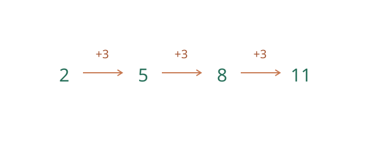
图中每次增加 3，所以 \(a_n=2+(n-1)3\)。如果每月存款比上月多 3 元，这个数列可表示每月存入的金额；若本金每年按固定比例增长，则更适合用等比数列。数学归纳法先验证起始项，再证明“第 k 项成立推出第 k+1 项成立”，类似从第一块开始依次推倒多米诺骨牌。
区间端点与最值：读懂符号
区间 \((0,2]\) 中，圆括号表示端点 0 不包含，方括号表示端点 2 包含，所以 1、2 属于该区间，0 不属于。数轴上也常用空心点表示不包含、实心点表示包含。无穷大不是实数端点，\((0,+\infty)\) 的无穷端总用圆括号。
在 \((0,2]\) 上讨论 \(f(x)=x\)：最大值为 2，因为 \(x=2\) 可以取到；不存在最小值，因为对任意允许的 \(x>0\)，\(x/2\) 仍在区间内且更小。0 是下界，但不是最小值；更准确地说它是下确界。比较时始终同时检查函数值和自变量是否能取到。
等差数列求和：为什么能首尾配对？
求 \(2+5+8+11\)。把四项倒过来写在原式下面，对应相加：\(2+11=13\)，\(5+8=13\)，每组都是 13。两遍总和是 \(4\times13\)，所以一遍为 26。
一般地，等差数列正写和倒写相加后，每一列均为 \(a_1+a_n\)，共有 n 列，因此 \(2S_n=n(a_1+a_n)\)，即 \(S_n=n(a_1+a_n)/2\)。奇数项时中间项也被计算了两次，因此公式同样成立。思想： 倒序配对、对称和整体计算。逐月递增的储蓄或每层座位数递增时，可以用它求总量。
8.1 不等式与最值【A】
- 一元二次不等式：通过根和开口方向判断符号；没有实根时单独分析。
- 分式不等式可用零点与无定义点划分区间，分母为零的点必须排除。
- |x|<a（a>0）等价于 −a<x<a；|x|>a 等价于 x<−a 或 x>a。
- a、b≥0 时，a+b≥2√(ab)，等号当且仅当 a=b。
- 应用基本不等式求最值时，要检查非负条件、固定量以及等号能否取到。
等式与不等式的性质
等式两边加同一个数或乘同一个数仍相等；反过来要通过除法恢复原式时，所除数必须非零。若 \(a<b\)，则 \(a+c<b+c\)；乘正数方向不变，乘负数方向反转。例：\(-3<x<2\) 两端同乘 \(-2\) 后应将顺序重新写为 \(-4<-2x<6\)。不能不讨论符号就乘除含变量的表达式。
若 \(0<a<b\)，则 \(1/a>1/b\)：因为 \(1/a-1/b=(b-a)/(ab)>0\)。如果 \(0<a<b\)、\(0<c<d\)，则 \(ac<bd\)；这利用 \(ac<bc<bd\)。正数条件不可省略，例如 \(-2<1\) 但 \((-2)^2>1^2\)，因此对不等式两边直接平方需要先检查符号和函数单调区间。
8.1.1 柯西—施瓦茨不等式：完整条件与证明
定理（实数形式）： 对任意实数 \(a_i,b_i\)（\(1\le i\le n\)），
\[ \left(\sum_{i=1}^{n}a_i b_i\right)^2\le \left(\sum_{i=1}^{n}a_i^2\right)\left(\sum_{i=1}^{n}b_i^2\right). \]
等号当且仅当向量 \((a_1,\dots,a_n)\) 与 \((b_1,\dots,b_n)\) 线性相关，包括其中任一向量为零的情况。不能简单写成各分量之比相等，因为有的分母可能为零。
证明一：构造平方和，使用数学思想：构造法、化归与配方。 记 \(A=\sum a_i^2\)、\(B=\sum b_i^2\)、\(C=\sum a_ib_i\)。当 \(B=0\) 时所有 \(b_i=0\)，等号成立。当 \(B>0\)，构造
\[ \sum_{i=1}^n\left(a_i-\frac CBb_i\right)^2 =A-\frac{C^2}{B}\ge0. \]
乘以 \(B>0\)，得到 \(AB-C^2\ge0\)。等号当且仅当所有平方项为零，即 \(a_i=(C/B)b_i\) 对所有 \(i\) 成立；连同 \(B=0\) 的情形，恰好是两向量线性相关。
证明二：二元恒等式，使用数学思想：配方与整体变形。 对任意实数 \(a,b,c,d\)，直接展开得到
\[ (a^2+b^2)(c^2+d^2)-(ac+bd)^2=(ad-bc)^2\ge0. \]
等号当且仅当 \(ad=bc\)。这给出二维柯西不等式；与向量的夹角联系可用来理解方向，但如果尚未建立内积的角度关系，不能将其当作独立的基础证明。
应用： 当 \(x+y=1\)，由 \((x+y)^2\le2(x^2+y^2)\)，有 \(x^2+y^2\ge1/2\)。\(x=y=1/2\) 时等号成立，所以最小值为 \(1/2\)。这是由线性约束估计平方和的基本方法，也用于最小二乘和向量投影。
加权分式形式： 若 \(b_i>0\)，
\[ \sum_{i=1}^n\frac{a_i^2}{b_i}\ge \frac{(\sum_i a_i)^2}{\sum_i b_i}. \]
推导，使用数学思想：换元与构造。 在柯西不等式中取 \(u_i=a_i/\sqrt{b_i}\)、\(v_i=\sqrt{b_i}\)，即可得到结论；等号当且仅当 \(a_i/b_i\) 全部相等。参考：宾夕法尼亚大学线性代数讲义。
8.1.2 算术—几何平均不等式与最值
定理： \(a,b\ge0\) 时，\((a+b)/2\ge\sqrt{ab}\)，当且仅当 \(a=b\) 取等。
证明，使用数学思想：配方、化归。 \((\sqrt a-\sqrt b)^2\ge0\)，展开得 \(a+b-2\sqrt{ab}\ge0\)。平方项为零恰好对应 \(a=b\)。
例： \(x>0\) 时 \(x+4/x\ge2\sqrt{x(4/x)}=4\)，当且仅当 \(x=4/x\)，即 \(x=2\) 取等，所以最小值是4。这里两项均正、乘积固定，且等号能取到。
反例提醒： 如果额外限定 \(x>3\)，等号需要的 \(x=2\) 不在定义域，4仍是下界，但不是最小值；此时函数在 \((3,\infty)\) 递增，没有最小值，下确界是 \(13/3\)。
8.1.3 绝对值三角不等式与距离
对实数 \(a,b\)，\(|a+b|\le|a|+|b|\)，等号当且仅当 \(ab\ge0\)。
证明，使用数学思想：平方比较与等价转化。 两边非负，且
\[ (|a|+|b|)^2-|a+b|^2=2(|ab|-ab)\ge0. \]
故平方根的大小关系成立；等号当且仅当 \(|ab|=ab\)。
将 \(a=(a-b)+b\) 代入，再交换 \(a,b\)，得到反三角不等式
\[ \bigl||a|-|b|\bigr|\le|a-b|. \]
使用的思想： 变换已知结论、对称性。它说明数轴上两点到原点的距离之差，不超过这两点之间的距离。
8.1.4 分式不等式：临界点和符号表
例： 解 \((x-1)/(x+2)>0\)。分子零点是1，分母零点 −2 不在定义域；用这两点把数轴分成三个区间。
| 区间 | 分子符号 | 分母符号 | 分式符号 |
|---|---|---|---|
| \((−\infty,-2)\) | 负 | 负 | 正 |
| \((-2,1)\) | 负 | 正 | 负 |
| \((1,+\infty)\) | 正 | 正 | 正 |
因此解集是 \((−\infty,-2)\cup(1,+\infty)\)。使用的思想：分类讨论、数形结合。 严格不等号排除1，分母为零始终排除−2。不能直接乘以符号未知的 \(x+2\) 而不讨论方向。参考：OpenStax 不等式与绝对值。
8.2 数列与求和【A】
- 无穷数列可视为定义在正整数集上的函数；含 m 项的有限数列按顺序以 1，…，m 为下标。区分通项 a_n 与前 n 项和 S_n。
- 等差数列：a_n=a₁+(n−1)d；S_n=n(a₁+a_n)/2。
- 等比数列：按教材定义，各项非零且相邻两项之比为固定常数 q，因此 a₁≠0、q≠0；a_n=a₁q^(n−1)。q≠1 时 S_n=a₁(1−q^n)/(1−q)，q=1 时 S_n=na₁。
- a₁=S₁；n≥2 时 a_n=S_n−S_(n−1)，不能遗漏 n=1 的检查。
- 常用求和：1+…+n=n(n+1)/2；1²+…+n²=n(n+1)(2n+1)/6。
- 常用方法：公式法、分组、裂项、错位相减；递推关系通过代入与变形分析。
- 数学归纳法：验证起始项，并证明“第 k 项成立 ⇒ 第 k+1 项成立”。
二次函数、方程和不等式的统一
对 \(f(x)=ax^2+bx+c\;(a\ne0)\)，配方得 \[ f(x)=a\left(x+\frac b{2a}\right)^2-\frac{b^2-4ac}{4a}. \] 因此对称轴为 \(x=-b/(2a)\)，顶点横坐标也就是极值点。方程 \(f(x)=0\) 的判别式 \(\Delta=b^2-4ac\)：\(\Delta>0\) 两个不同实根，\(\Delta=0\) 一个二重实根，\(\Delta<0\) 无实根；求根公式 \(x=(-b\pm\sqrt\Delta)/(2a)\) 来自配方开平方。研究 \(f(x)>0\) 时，结合根的个数和抛物线开口即可判断区间符号，避免机械记忆口诀。
基本不等式 \(a+b\ge2\sqrt{ab}\;(a,b\ge0)\) 可由 \((\sqrt a-\sqrt b)^2\ge0\) 得到，等号当且仅当 \(a=b\)。若 \(x>0\)，则 \(x+4/x\ge4\)，等号在 \(x=2\) 取得。若等号点不在定义域，结论只能给出下界，不能直接说最小值已取得。
例如求 \(2x^2-3x-2<0\)，先分解为 \((2x+1)(x-2)<0\)。零点为 \(-1/2,2\)，开口向上，图像只在两零点之间位于 \(x\) 轴下方，所以解为 \((-1/2,2)\)。若改为非严格不等式 \(\le0\)，则两个零点也应包含。如果判别式小于零，则二次函数没有实根、符号始终与首项系数相同，不能继续套用“两根之间”的说法。
更完整地，若 \(a>0\) 且判别式为零，\(f(x)=a(x-h)^2\) 在 \(x=h\) 时为零、其余处为正；若判别式小于零，则对所有实数 \(f(x)>0\)。若 \(a<0\)，可对 \(-f(x)\) 使用同样的分类，再注意不等号方向。严格不等式排除使表达式为零的点，非严格不等式包含这些点。
数列、递推和数学归纳法
设等差数列首项 \(a_1=3\)、公差 \(d=2\)。由 \(a_{n+1}-a_n=d\) 累加得 \(a_n=a_1+(n-1)d=2n+1\)。求前 \(n\) 项和时首尾配对：\(S_n=n(a_1+a_n)/2=n(n+2)\)。这里 \(n\) 为正整数；求和公式不要求公差非零。
若等比数列 \(a_1=2\)、公比 \(q=3\)，则 \(a_n=2\cdot3^{n-1}\)。\(q\ne1\) 时，用 \(S_n-qS_n\) 消去中间项，得 \(S_n=a_1(1-q^n)/(1-q)\)；\(q=1\) 时不能使用分母为零的表达式，应单独写作 \(S_n=na_1\)。
按通常教材定义，等比数列每一项都非零，相邻两项的比是同一个非零常数。因此首项和公比均非零；若递推式 \(a_{n+1}=0\cdot a_n\) 从非零首项产生后续零项，尽管可以把它作为一个递推数列研究，它不满足这里的等比数列定义。公比可以为负，例如 \(2,-4,8,-16,\ldots\) 的公比是 −2，其前 4 项和为 −10。
数学归纳法。 要证明对所有正整数 \(n\)，\(1+2+\cdots+n=n(n+1)/2\)：先验证 \(n=1\)；再假设 \(n=k\) 成立，得到前 \(k+1\) 项和为 \(k(k+1)/2+(k+1)=(k+1)(k+2)/2\)。基础步骤和归纳步骤缺一不可；只验证前几项不能证明一般结论。
等差数列通项由 \(a_n=a_1+(n-1)d\) 得出；将首末项配对，\(S_n=n(a_1+a_n)/2\)。等比数列将和式乘公比后相减，\(S_n=a_1(1-q^n)/(1-q)\;(q\ne1)\)，而 \(q=1\) 时单独为 \(na_1\)。等差模型常用于匀速变化或分期定额，等比模型用于固定比例增长、复利与衰变。
数学归纳法证明正整数命题先验算起始值，再假设第 \(k\) 项成立并推出第 \(k+1\) 项成立。它类似逐级传递的链条，缺少起始步或递推步都不能完成证明。例：证明 \(1+2+\cdots+n=n(n+1)/2\)：\(n=1\) 成立；假设对 \(k\) 成立，则对 \(k+1\)，和为 \(k(k+1)/2+(k+1)=(k+1)(k+2)/2\)。这里使用归纳思想和代数恒等变形。递推数列还需明确初值与递推式，不能仅凭前几项猜通项。
若已知前 \(n\) 项和 \(S_n=n^2\)，先取 \(a_1=S_1=1\)。对 \(n\ge2\)，\(a_n=S_n-S_{n-1}=n^2-(n-1)^2=2n-1\)；该表达式在 \(n=1\) 时也给出 1，所以可统一写为 \(a_n=2n-1\)。先单独检查首项，是因为通常给定的 \(S_n\) 从正整数 \(n=1\) 起定义，不能未经说明就引用 \(S_0\)。
裂项与错位相减：两类求和方法
裂项适合相邻项能够抵消的求和。例如当 \(k\) 为正整数时，\(1/[k(k+1)]=1/k-1/(k+1)\)，因此 \[ \sum_{k=1}^{n}\frac1{k(k+1)}=\left(1-\frac12\right)+\left(\frac12-\frac13\right)+\cdots+\left(\frac1n-\frac1{n+1}\right)=\frac n{n+1}. \] 分母不为零，且应保留首尾未抵消的项。
错位相减适合多项式因子乘等比因子。例如 \(S=1+2\cdot2+3\cdot2^2+\cdots+n2^{n-1}\)。将等式两边乘 2 并错位相减，得 \(2S-S=2^n n-(1+2+\cdots+2^{n-1})=n2^n-(2^n-1)\)，所以 \(S=(n-1)2^n+1\)。当 \(n=1\) 时结果为 1，与原式一致；错位时要检查两端，避免漏掉首项或末项。
9. 高中：计数、概率与统计
计数、概率与统计：先认识名词
排列是从不同对象中选取并安排顺序，例如从 A、B 中选两人排队，AB 与 BA 是两种；组合只看选了哪些对象，同一个选择 {A,B} 只有一种。\(n!\)（读作 n 的阶乘）表示 \(n(n-1)\cdots1\)，约定 \(0!=1\)。分类计数先分成不重叠的类别再相加；分步计数是在每个前序选择后的选项数固定且结果不重复时相乘。
一次随机试验的所有可能结果组成样本空间，由其中某些结果构成的是随机事件。互斥表示两个事件不能同时发生；独立表示一个事件发生与否不改变另一个事件发生的概率（条件概率有定义时）。公平骰子出现奇数和偶数互斥，但连续掷两次出现 6 的事件可按独立模型处理。
随机变量用数字表示随机结果，例如 X 表示两次抛硬币出现正面的次数。分布列列出可能取值及各自概率；期望是取值按概率加权的平均，方差衡量偏离期望的程度。总体是研究的全部对象，样本是实际调查的一部分；用样本推断总体时需考虑抽样是否有偏。相关关系描述变量共同变化，不能仅凭相关断定因果。
从树状图理解计数与概率
一次抛硬币记正面为 H、反面为 T。连续抛两次时，先画第一次的两条分支，再从每个分支画第二次的两条分支；沿每条完整路径得到 HH、HT、TH、TT。这里 HT 表示先正后反，TH 表示先反后正，顺序不同。
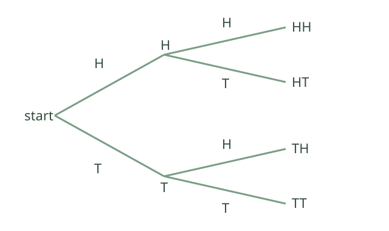
如果假设每次正反面等可能且两次相互独立，四条路径等可能。恰好一次正面对应 HT、TH 两条，因此概率为 \(2/4=1/2\)。数学思想： 分步计数、列举与分类。若硬币有偏，或两次结果并非独立，就必须根据模型计算每条路径概率，不能直接按路径数相除。
条件概率：已知条件改变了比较范围
掷一次公平六面骰。设 \(A\) 为“点数大于 4”，\(B\) 为“点数是偶数”。原来六种点数等可能；已知 \(B\) 已发生后，只在 2、4、6 三种点数中比较，其中只有 6 同时满足 \(A\)，因此 \(P(A\mid B)=1/3\)。
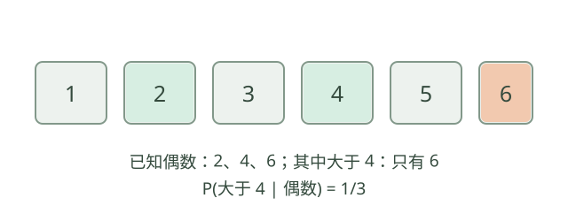
按公式也得到 \(P(A\mid B)=P(A\cap B)/P(B)=(1/6)/(3/6)=1/3\)，其中 \(P(B)>0\)。这里恰好 \(P(A)=2/6=1/3\)，所以这对事件在该模型下独立；但已知条件并不总保持概率不变，例如已知“点数为 6”时，大于 4 的概率变为 1。不能把条件概率的一般定义简化成“数符合条件的结果”，还要确认条件下各结果等可能。
9.1 排列组合与二项式【A】
- 分类加法原理：互斥且覆盖全部结果的类别，其数量相加；分步乘法原理：若每个前序选择之后，第 i 步都有固定的 nᵢ 种选择，且每个完整结果与一种选择序列一一对应，则总数为各 nᵢ 的乘积。若后续选择数依赖前面的选择，应先分类，再对各类计数。
- n!=n(n−1)…1，0!=1。
- 从 n 个不同对象中取 k 个排列：A_n^k=n!/(n−k)!；组合：C_n^k=n!/[k!(n−k)!]，其中 n、k 为整数且 0≤k≤n。
- 组合不计顺序，排列计顺序；重复选择、重复对象和限制条件需要另建模型。
- (a+b)^n=Σ[k=0 到 n] C_n^k a^(n−k)b^k，n 为非负整数。
9.1.1 二项式定理为什么有组合数？
展开 \((a+b)^n\) 时，每一项都从 \(n\) 个括号中各选一个因子。若恰好从 \(k\) 个括号选 \(b\)，其余选 \(a\)，得到 \(a^{n-k}b^k\)。选择这 \(k\) 个位置有 \(\binom nk\) 种，所以
\[ (a+b)^n=\sum_{k=0}^{n}\binom nk a^{n-k}b^k. \]
证明使用的思想： 分类计数、整体组合。适用于非负整数 \(n\)，可用来计算概率、系数和多项式展开。
9.2 概率【A】
- 0≤P(A)≤1；P(全集)=1；P(补事件)=1−P(A)。
- P(A∪B)=P(A)+P(B)−P(A∩B)。
- 若 A、B 互斥，则 P(A∩B)=0。
- 条件概率：P(A|B)=P(A∩B)/P(B)，要求 P(B)>0。
- 独立性：P(A∩B)=P(A)P(B)。互斥与独立不同；两个正概率互斥事件不独立。
- 若 B_i 构成有限划分，则 P(A)=ΣP(A|B_i)P(B_i)，相关条件概率要求 P(B_i)>0。
- 贝叶斯公式：P(B_i|A)=P(A|B_i)P(B_i)/P(A)，要求 P(A)>0。
9.3 随机变量与统计【B】
- 离散随机变量分布：各概率非负，总和为 1。
- 期望 E(X)=Σx_i p_i；方差 Var(X)=E[(X−E(X))²]=E(X²)−[E(X)]²。
- E(aX+b)=aE(X)+b；Var(aX+b)=a²Var(X)。
- 二项分布：n 次独立、成功概率均为 p 的试验，P(X=k)=C_n^k p^k(1−p)^(n−k)。
- 二项分布均值 np、方差 np(1−p)。
- 正态分布的钟形图像、均值与标准差；大学阶段进一步学习密度和积分。
- 样本抽取方法、散点图、相关性、线性回归初步；相关关系不能直接推出因果关系。
9.3.1 分位数与分层随机抽样
分位数： 把一组数据从小到大排序；第 \(p\) 分位数用于描述数据中约有 \(p\%\) 位于该值或其下方。不同教材、软件对样本分位数的插值与边界约定可能不同，实际计算应先说明采用的规则。
例如使用“最近秩”约定，第 75 百分位数取排序后第 \(\lceil0.75n\rceil\) 个观测值。样本 1、2、3、4、5、6、7、8 的容量为 8，序号为 6，所得第 75 百分位数为 6。若使用其他插值规则，结果可能不同；近似表述“75% 的数据不大于它”不意味着各种算法都会给出完全相同的分界值。
分层随机抽样： 将总体按与研究目标相关的特点划分为互不重叠的层，再在各层内随机抽样；若按各层总体数量比例分配样本量，可使不同层按规模进入样本。例如学校按年级分层调查学习时间。
数学思想： 分类与整体、统计建模。抽样方法应依据实际目标确定；抽样随机不保证不存在不回答或测量偏差。
9.3.2 超几何分布：不放回抽样
总体有 \(N\) 个对象，其中 \(M\) 个属于目标类，不放回抽取 \(n\) 个，记目标类数量为 \(X\)。在每个大小为 \(n\) 的子集等可能时：
\[ P(X=k)=\frac{\binom Mk\binom{N-M}{n-k}}{\binom Nn}, \quad\max(0,n-(N-M))\le k\le\min(n,M). \]
推导与数学思想： 分类计数、整体与部分。从目标类中选 \(k\) 个、从其余对象中选 \(n-k\) 个，分步乘法给出有利结果数；所有大小为 \(n\) 的无序样本共有 \(\binom Nn\) 个。该模型与独立重复试验的二项分布不同。
例：5 件产品中 2 件次品，随机不放回抽取 2 件，恰好抽到 1 件次品的概率为 \(\binom21\binom31/\binom52=6/10=3/5\)。抽取后总体组成改变，不能直接把两次抽取当成具有固定成功概率的独立试验。按有序方式计算也得到 \((2/5)(3/4)+(3/5)(2/4)=3/5\)，两种计数方式的结果一致。
记 \(p=M/N\)，则 \(E(X)=np\)；若 \(N>1\)，方差为 \(\operatorname{Var}(X)=np(1-p)(N-n)/(N-1)\)，其中 \(N,M,n\) 为整数且 \(0\le M,n\le N\)。可将 \(X\) 写成每次抽到目标类的指示变量之和；每个指示变量均值为 \(p\)，不同次抽取的协方差为 \(-p(1-p)/(N-1)\)，对方差求和即得有限总体修正因子。上例的分布为 \(P(X=0)=3/10\)、\(P(X=1)=6/10\)、\(P(X=2)=1/10\)，因此均值为 \(4/5\)，方差为 \(9/25\)。\(N=1\) 时按分布直接计算，不代入分母 \(N-1\)。
9.3.3 成对数据与一元线性回归
每个对象同时测量 \((x_i,y_i)\)，可画散点图观察关系；相关关系不自动意味着因果关系。用直线 \(\hat y=a+bx\) 拟合时，最小二乘选择使 \(\sum_i(y_i-a-bx_i)^2\) 最小的系数。若 \(x_i\) 不全相同，
\[ \hat b=\frac{\sum_i(x_i-\bar x)(y_i-\bar y)}{\sum_i(x_i-\bar x)^2},\qquad \hat a=\bar y-\hat b\bar x. \]
推导思路与数学思想： 化归、最优化。先令 \(y_i-\bar y=Y_i\)、\(x_i-\bar x=X_i\)，对固定 \(b\)，平方和关于截距的最小值在 \(a=\bar y-b\bar x\) 取得；代入后对 \(b\) 配方，得到上式。拟合前应检查异常值与预测范围。
例：观测点 \((1,2),(2,3),(3,5)\) 的 \(\bar x=2\)、\(\bar y=10/3\)。中心化后的交叉乘积和为 \(3\)，\(x\) 的离差平方和为 \(2\)，因此 \(\hat b=3/2\)，\(\hat a=10/3-(3/2)\times2=1/3\)，拟合直线为 \(\hat y=1/3+(3/2)x\)。它经过样本中心 \((2,10/3)\)，但不必经过每个观测点；残差是观测值减去对应的拟合值。
线性回归模型常写为 \(Y=a+bX+\varepsilon\)，其中 \(\varepsilon\) 表示模型中未由线性部分解释的随机偏差；实际拟合得到的是样本估计 \(\hat a,\hat b\)，残差 \(y_i-\hat y_i\) 是根据样本计算出的数，两者概念不同。最小二乘计算只要求各项平方和和分母等条件；若要建立统计推断、误差范围或因果结论，还需额外的抽样和模型假设。
9.3.4 列联表与独立性检验入门
列联表按两个分类变量交叉统计频数。若样本设计和独立性模型合适，在独立假设下第 \((i,j)\) 格的期望频数为“第 \(i\) 行总数 × 第 \(j\) 列总数 ÷ 样本总数”。对 2×2 表，可通过
\[ \chi^2=\sum_{i,j}\frac{(O_{ij}-E_{ij})^2}{E_{ij}} \]
衡量观测与独立模型的偏差，其中 \(E_{ij}>0\)。数学思想： 模型与数据比较、从假设推论；统计结论依赖抽样与近似条件，相关也不直接等于因果。
例：两个分类变量交叉后，四个观察频数分别为第一行 \(30,20\)，第二行 \(20,30\)。总人数 100，每行及每列均为 50；独立性假设下每格期望频数为 \(50\times50/100=25\)。不作连续性校正的 Pearson 统计量为 \(4\times(30-25)^2/25=4\)，自由度为 \((2-1)(2-1)=1\)。在适当的独立随机抽样和大样本近似条件下，查自由度 1 的卡方分布，上尾概率约为 0.046；以预先设定的 0.05 显著性水平进行检验时可拒绝独立性假设。若未拒绝，也不能因此证明独立；显著性不表示独立假设为真的概率。样本选择、预期频数过小及其他设计问题均可能使近似不适用。参考：OpenStax 独立性检验。
计数原理、排列组合与杨辉三角
从 5 本不同书中选 2 本：如果只关心选哪两本，数量是 \(\binom52=10\)；如果要排列成一排，选出后还要决定先后次序，数量是 \(5\times4=20\)。分类加法对应互不重叠的情形，分步乘法要求每个完整结果由各步选择唯一确定；重复计数必须消除。
例如四位数字密码允许首位为 0、各位允许重复，则有 \(10^4=10000\) 种；若规定四位互不相同，则依次有 \(10,9,8,7\) 种选择，共 \(10\times9\times8\times7=5040\) 种。若题目改成“十进制四位整数且各位不同”，首位不能为 0，数量改为 \(9\times9\times8\times7=4536\)。先确定对象、是否允许重复及顺序是否重要，再选择计数方法。
二项式展开 \((a+b)^3=a^3+3a^2b+3ab^2+b^3\)。例如从 3 个因子中选择 2 个提供 \(b\)，有 \(\binom32=3\) 种选择，故 \(ab^2\) 的系数是 3。一般地，\((a+b)^n=\sum_{k=0}^{n}\binom nk a^{n-k}b^k\)，\(n\) 为非负整数。
二项式系数的性质
在 \(n\) 为非负整数、\(0\le k\le n\) 时，\(\binom nk=\binom n{n-k}\)：选出 \(k\) 个对象与留下 \(n-k\) 个对象是一一对应的。\(n\ge1\) 且 \(1\le k\le n-1\) 时，按是否选入某个指定对象分类，得到 \(\binom nk=\binom{n-1}{k-1}+\binom{n-1}{k}\)，这是杨辉三角的递推关系。
在二项式定理中令两项都为 1，得到 \(\sum_{k=0}^{n}\binom nk=2^n\)；当 \(n\ge1\) 时令两项分别为 1 和 −1，得到 \(\sum_{k=0}^{n}(-1)^k\binom nk=0\)，所以偶数项编号与奇数项编号的系数和均为 \(2^{n-1}\)。例如 \((1+x)^4\) 的系数为 1、4、6、4、1，总和为 16，对称位置相等。二项式系数 \(\binom nk\) 与展开式中含参数的完整项的系数可能不同，计算时需把参数一并乘入。参考：OpenStax 二项式定理。
例如 \((2+x)^5\) 中含 \(x^3\) 的项是 \(\binom53 2^2x^3=40x^3\)，因此该项的系数是 40，而二项式系数仅为 \(\binom53=10\)。选择 \(x\) 的次数、余下常数因子的次数和外部系数都要一起计算。
相邻系数之比为 \(\binom n{k+1}/\binom nk=(n-k)/(k+1)\)，其中 \(0\le k<n\)。因此系数先增后减；\(n\) 为偶数时中间一个 \(\binom n{n/2}\) 最大，\(n\) 为奇数时中间两个系数相等且最大。例如 \(n=5\) 的系数是 1、5、10、10、5、1。这里说的是二项式系数的大小，不能直接推广到带不同参数的展开式中各项系数。
条件概率与独立性的区别
袋中有 3 个红球、2 个蓝球，随机不放回地依次取两个。已知第一次取红球后，剩余 4 个球中红球为 2 个，所以 \(P(第二次红\mid 第一次红)=2/4=1/2\)。两次都取红球的概率是 \((3/5)(2/4)=3/10\)。这是乘法公式 \(P(A\cap B)=P(A)P(B\mid A)\)，要求 \(P(A)>0\)。不放回会改变第二次的条件分布，因此此例中的两次取色不独立。
若 \(A,B\) 独立，则 \(P(A\cap B)=P(A)P(B)\)；当 \(P(A)>0\) 时等价于 \(P(B\mid A)=P(B)\)。互斥是不能同时发生，独立是交集概率等于概率乘积；两个概率都大于零的互斥事件不独立。
有限样本空间与事件运算
抛一次公平六面骰，样本空间 \(\Omega=\{1,2,3,4,5,6\}\)。令 \(A=\{2,4,6\}\) 表示点数为偶数，\(B=\{5,6\}\) 表示点数大于 4，则 \(A\cap B=\{6\}\)、\(A\cup B=\{2,4,5,6\}\)、\(A^c=\{1,3,5\}\)。六个结果等可能，所以 \(P(A)=1/2\)、\(P(B)=1/3\)、\(P(A\cap B)=1/6\)、\(P(A\cup B)=2/3\)。也可由加法公式 \(P(A)+P(B)-P(A\cap B)=2/3\) 验证。
事件的并表示至少一个事件发生，交表示同时发生，补表示该事件不发生；\(A\cap A^c=\varnothing\)、\(A\cup A^c=\Omega\)。用“有利结果数除以全部结果数”要求有限且等可能，不能对不同概率的样本点直接计数。
二项分布的期望和方差
对固定 \(n\) 次相互独立、每次成功概率为 \(p\) 的伯努利试验，成功次数 \(X\sim B(n,p)\)，\(P(X=k)=\binom nkp^k(1-p)^{n-k}\)，\(k=0,1,\ldots,n\)。把 \(X\) 写成各次成功指示变量之和，可得 \(E(X)=np\)；由独立性，方差相加，得到 \(\operatorname{Var}(X)=np(1-p)\)。
例如独立抛掷均匀硬币 4 次，正面次数 \(X\sim B(4,1/2)\)，恰好 2 次正面的概率为 \(\binom42(1/2)^4=3/8\)，期望为 2、方差为 1。试验次数固定、独立和成功概率相同三项条件均不可随意忽略。
分布列、期望与方差：有限例子
随机变量把每个试验结果对应为一个数。若 \(X\) 取值 0、1、2，对应概率分别为 \(1/4,1/2,1/4\)，这些概率都非负且和为 1，因而给出一个合法分布列。
由定义 \(E(X)=0\cdot1/4+1\cdot1/2+2\cdot1/4=1\)。再计算 \(E(X^2)=0^2/4+1^2/2+2^2/4=3/2\)，因此 \(\operatorname{Var}(X)=E(X^2)-[E(X)]^2=1/2\)。等式来自展开 \(E[(X-E X)^2]\) 并利用期望的线性性；不存在二阶矩时不能无条件使用该计算式。
若 \(Y=3X+2\)，则 \(E(Y)=3E(X)+2=5\)，\(\operatorname{Var}(Y)=3^2\operatorname{Var}(X)=9/2\)。加常数会平移中心但不改变离散程度，乘常数会使方差乘该常数的平方。
全概率、贝叶斯与概率树
若 \(B_1,\ldots,B_n\) 两两互斥且并集为样本空间，且所写条件概率的分母均大于零，则 \(P(A)=\sum_iP(A\mid B_i)P(B_i)\)。在 \(P(A)>0\) 时，\(P(B_j\mid A)=P(A\mid B_j)P(B_j)/P(A)\)。先验、条件概率与后验对应的方向不同，不能互换。
例如两条生产线分别生产 60% 和 40% 的产品，次品率分别为 1% 和 2%。总次品率为 \(0.6\times0.01+0.4\times0.02=0.014\)；已知产品为次品，来自第二条线的概率为 \(0.4\times0.02/0.014=4/7\)。该结论依赖题中给定的比例与次品率。
正态分布与标准化
若 \(X\sim N(\mu,\sigma^2)\)，其中 \(\sigma>0\)，则 \(Z=(X-\mu)/\sigma\sim N(0,1)\)。图像以 \(\mu\) 为对称中心，\(\sigma\) 影响分散程度。标准化用于将区间概率换成标准正态分布上的区间；例如 \(P(\mu-\sigma<X<\mu+\sigma)=P(-1<Z<1)\)。这不是说全部观测值都会落在一个标准差内，正态近似也需要模型与数据相符。
正态分布中，落在均值两侧 1、2、3 个标准差范围内的概率分别约为 68%、95%、99.7%。例如若测量值模型为 \(X\sim N(100,10^2)\)，则 \(P(90<X<110)\approx0.68\)，而 \(P(80<X<120)\approx0.95\)。这些是模型概率的近似值；有限批次的实际比例会波动。约定 \(N(\mu,\sigma^2)\) 的第二参数为方差，标准差是其非负平方根。参考：OpenStax 标准正态分布。
样本相关系数与最小二乘的条件
成对数据 \((x_i,y_i)\) 的样本相关系数可写为
\[ r=\frac{\sum_i(x_i-\bar x)(y_i-\bar y)} {\sqrt{\sum_i(x_i-\bar x)^2\sum_i(y_i-\bar y)^2}}. \]
两组数据都不能全部相同，否则分母为零、相关系数没有定义。\(-1\le r\le1\)，绝对值越接近 1 表示线性关系越强；\(r=0\) 只说明这个线性相关系数为零，不排除其他关系，也不证明两变量独立或存在因果关系。
例如点 \((1,2),(2,4),(3,6)\) 都在直线 \(y=2x\) 上，两组数据均不恒定，\(r=1\)。线性回归系数需要 \(\sum_i(x_i-\bar x)^2>0\) 才能按通常公式唯一求斜率。外推到观测范围以外或把相关当因果都需要额外依据。
样本估计总体与随机模拟
总体是研究对象的全体；样本是按某种规则取得的部分观测。可以用样本均值、样本分位数和直方图估计总体的集中程度、位置与分布形状，但所得估计会随样本变化，并受到抽样、缺失和测量偏差影响。样本量增加通常有助于降低随机误差，却不能自动消除有系统方向的偏差。
简单随机抽样的一种形式是从 \(N\) 个不同个体中不放回地抽取 \(n\) 个，使每个大小为 \(n\) 的个体集合具有相同被抽中的概率；要求 \(0<n\le N\)。分层随机抽样则先按确定标准把总体分为互不重叠且覆盖总体的层，再按设计在各层随机抽取。若各层抽取比例不同，总体均值通常不能把所有样本直接视为等权，需考虑抽样设计和适当权重。
用随机模拟估计两枚公平硬币至少出现一个正面的概率：每轮模拟两个独立且正反等可能的结果，记录符合条件的轮数 \(m\)，共模拟 \(N>0\) 轮时用 \(m/N\) 作估计。理论样本空间中除“反反”外均符合，精确概率为 \(3/4\)；模拟频率不必恰好等于 \(3/4\)，而应随样本量和随机结果波动。若模拟硬币有偏或两次不独立，就不再对应同一理论模型。
估计总体的集中趋势与离散程度
样本平均数、中位数和众数可从不同角度估计总体的集中趋势。对样本 1、2、2、2、3，平均数、中位数和众数都是 2；若按相同样本口径计算，极差为 \(3-1=2\)，方差为 \([(1-2)^2+(3-2)^2]/5=2/5\)。另一组 2、2、2、2、2 的均值同样为 2，而极差与方差均为 0。比较时需要统一单位与计算口径；总体估计依赖样本的抽取方式，并非总体精确值。
频率与概率的关系
对同一随机试验重复 \(n>0\) 次，某事件出现 \(m\) 次，其频率是 \(m/n\)。若抛硬币 20 次出现 12 次正面，频率为 0.6；模型概率与这一次观察频率不是同一个量。若每次试验满足适当的独立同分布条件，重复次数增加时频率可用来估计概率；有限次的频率仍会随机波动。模拟时应明确模型，例如两次抛公平硬币至少一次正面的理论概率是 \(3/4\)，见上一节的模拟示例。
获取数据与统计调查案例
数据可以通过全面调查、抽样调查、实验测量或已有资料获取。选择方式时先明确总体、观测指标和单位，再考虑抽样范围、缺失记录与测量口径；已有资料应核对来源、时间、统计范围和定义。例如比较两组身高时，若一组记录厘米而另一组记录米，应先统一单位。
示例：员工体重数据的整理。 一次虚构的小样本记录四人的身高（米）与体重（千克），分别为 \((1.60,64)\)、\((1.70,57.8)\)、\((1.75,61.25)\)、\((1.80,97.2)\)。按体重除以身高的平方计算，这四人的体质指数分别为 25、20、20、30，样本平均值为 \(95/4=23.75\)。如果按 \([20,25),[25,30),[30,35)\) 分组，频数依次为 2、1、1。应先分别计算个人的指数再求平均，不能把平均体重除以平均身高的平方当作个人指数的平均值。示例仅说明统计计算；样本很小，不能据此推断整个公司的情况或对个人作健康诊断。
互斥类别有 \(m,n\) 种选法时总数为 \(m+n\)；连续步骤分别有 \(m,n\) 种选择时总数为 \(mn\)。排列数 \(A_n^k=n!/(n-k)!\)，组合数 \(C_n^k=n!/[k!(n-k)!]\)。因为一个含 \(k\) 个对象的组合能按 \(k!\) 种顺序排列，故排列数除以 \(k!\) 得组合数。杨辉三角的递推 \(C_n^k=C_{n-1}^{k-1}+C_{n-1}^{k}\) 来自按是否包含某个指定元素分类。
二项式定理系数 \(C_n^k\) 也由在 \(n\) 个括号中选出 \(k\) 个提供第二项的方式数给出。计数关键是每种结果恰好数一次；遇到排列还是组合，先判断“次序改变是否产生新结果”。抽样方案、密码位数和概率分母都依赖准确计数。
10. 高中：复数与导数初步
复数与导数：先认识新对象
实数中不存在平方为 −1 的数，于是引入符号 \(i\)，规定 \(i^2=-1\)。复数写作 \(z=a+bi\)，其中 a、b 为实数；a 是实部、b 是虚部。例如 \(3-2i\) 的实部为 3、虚部为 −2；b=0 时它是实数。对应复平面上的点 \((a,b)\)，复数的模 \(|z|=\sqrt{a^2+b^2}\) 表示该点到原点的距离；共轭复数 \(\bar z=a-bi\) 在复平面上关于实轴对称。
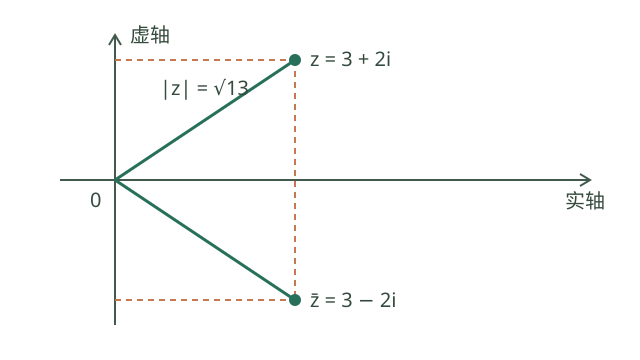
图中 \(z=3+2i\) 对应 \((3,2)\)，共轭复数 \(\bar z=3-2i\) 对应 \((3,-2)\)。两点到原点的距离都是 \(\sqrt{3^2+2^2}=\sqrt{13}\)，并且 \(z\bar z=(3+2i)(3-2i)=13\)。虚部是数字 2 或 −2，包含字母的 \(2i\) 或 \(-2i\) 称为虚部对应的虚数项。
平均变化率是输出的变化量除以输入的变化量；例如 2 秒走 10 米，平均速度为 5 米/秒。导数刻画输入在某点附近发生很小变化时的瞬时变化率：若极限存在，\(f'(x)=\lim_{h\to0}[f(x+h)-f(x)]/h\)。几何上它是曲线在该点切线的斜率；位置对时间的导数是瞬时速度。导数值可能为正、负或零，也可能不存在，例如 \(|x|\) 在 0 处左、右变化趋势不同。
从割线到切线：理解导数
割线经过曲线上的两个不同点；切线可以通过一个点附近割线的极限来理解。对 \(f(x)=x^2\)，取 \(P=(1,1)\)、\(Q=(2,4)\)，割线斜率是 \((4-1)/(2-1)=3\)。如果将第二点改为 \(Q_h=(1+h,(1+h)^2)\)，其中 \(h\ne0\)，割线斜率为 \(2+h\)。当 \(h\to0\) 时斜率趋于 2，因此 \(P\) 处的导数为 2，切线方程是 \(y=2x-1\)。
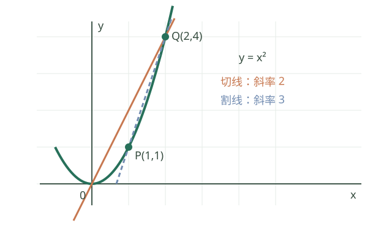
图中的割线斜率是从 \(P\) 到 \(Q\) 的平均变化率；切线斜率是 \(Q\) 趋近 \(P\) 时的极限。这里算出有限导数，才能用这个数表示该点切线的斜率；如果左右差商极限不同，导数不存在，例如 \(f(x)=|x|\) 在 0 的左右差商分别趋于 −1 和 1。
10.1 复数【B】
- i²=−1；复数 z=a+bi，a、b 为实数。
- 实部 a、虚部 b；共轭复数为 a−bi；模 |z|=√(a²+b²)。
- 加减按实部虚部分别计算；乘法展开后使用 i²=−1。
- 除法可将分子分母同乘分母的共轭，原分母必须非零。
- 复平面将复数对应到点 (a,b)；复数没有与实数相同的大小次序。
10.2 导数初步【A，衔接大学】
- f′(x)=lim[h→0] [f(x+h)−f(x)]/h，前提是该极限存在。
- 几何意义是切线斜率；实际意义是瞬时变化率。
- 常数导数为 0；(x^n)′=nx^(n−1)，先从正整数 n 学起，再结合定义域推广。
- (e^x)′=e^x；(ln x)′=1/x（x>0）。
- (a^x)′=a^x ln a（a>0）；(log_a x)′=1/(x ln a)（a>0、a≠1、x>0）。
- (sin x)′=cos x；(cos x)′=−sin x，x 用弧度。
- (u+v)′=u′+v′；(uv)′=u′v+uv′。
- (u/v)′=(u′v−uv′)/v²，要求 v≠0；复合函数使用链式法则。
- 在区间上可导且导数处处为正，可推出严格递增；导数为负可推出严格递减。
- 可导函数在内点取得极值时导数为零，但导数为零不一定取得极值，例如 x³ 在 0 处。
- 求闭区间最值时，比较区间内候选点与端点，注意不可导点。
复数的代数与几何意义
复数 \(z=a+bi\;(i^2=-1)\) 相等当且仅当实部、虚部分别相等。复数加法对应复平面向量相加，乘以 \(i\) 对应逆时针旋转 \(90^\circ\)。模 \(|z|=\sqrt{a^2+b^2}\) 是点到原点距离，共轭复数 \(\bar z=a-bi\)，且 \(z\bar z=|z|^2\)。除法分子分母同乘分母共轭，将分母化为正实数。
非零复数可写为 \(z=r(\cos\theta+i\sin\theta)\)，其中 \(r=|z|>0\)，\(\theta\) 是辐角。由三角函数和差公式可得乘法使模相乘、辐角相加；于是对于整数 \(n\)，棣莫弗公式为 \([r(\cos\theta+i\sin\theta)]^n=r^n(\cos n\theta+i\sin n\theta)\)。复数可描述旋转、振动和交流相量；其几何表示让乘法的旋转效果可视化。
复数除法的共轭方法
\(\frac{1+2i}{3-i}=\frac{(1+2i)(3+i)}{(3-i)(3+i)}=\frac{1+7i}{10}=\frac1{10}+\frac7{10}i\)。分母乘共轭后成为 \(3^2+1^2=10\)；原分母不能为零。复数 \(a+bi\) 的虚部是实数 \(b\)，不是 \(bi\)。
复数四则运算还包括 \((2+3i)+(1-2i)=3+i\)、\((2+3i)-(1-2i)=1+5i\)、\((2+3i)(1-2i)=8-i\)，其中乘法先按分配律展开，再用 \(i^2=-1\)。在复平面上，前两种运算分别对应位置向量的加法和减法；\(|2+3i|=\sqrt{13}\)。非零复数的三角形式 \(r(\cos\theta+i\sin\theta)\) 中 \(r>0\)，两个非零复数相乘时模相乘、辐角相加，相除时模相除、辐角相减（角按 \(2\pi\) 的整数倍确定）；零没有确定的辐角，也不能作除数。
例如 \(z_1=1+i\) 的模和一个辐角分别为 \(\sqrt2,\pi/4\)，\(z_2=\sqrt3+i\) 的模和一个辐角分别为 \(2,\pi/6\)。故乘积的模为 \(2\sqrt2\)，一个辐角为 \(5\pi/12\)；直接相乘也得到 \((\sqrt3-1)+(\sqrt3+1)i\)。相除则是模 \(\sqrt2/2\)、辐角 \(\pi/12\)，因为除数 \(z_2\ne0\)。
用导数判断单调性和闭区间最值
设 \(f(x)=x^3-3x\)，则 \(f'(x)=3x^2-3=3(x-1)(x+1)\)。导数在 \(( -\infty,-1)\)、\((1,+\infty)\) 为正，在 \((-1,1)\) 为负，故函数依次递增、递减、递增；\(-1\) 处是局部极大点，\(1\) 处是局部极小点。
若只求 \([-2,2]\) 上最值，比较端点与区间内驻点：\(f(-2)=-2\)、\(f(-1)=2\)、\(f(1)=-2\)、\(f(2)=2\)，所以最大值为 2、最小值为 −2。实际问题还需检查定义域；如果函数在某些内点不可导，也要把这些点列为可能的极值候选。
从变化率到导数及基本法则
对 \(f(x)=x^2\)，点 \(x\) 到 \(x+h\) 的平均变化率为
\[ \frac{(x+h)^2-x^2}{h}=2x+h\qquad(h\ne0). \]
当 \(h\to0\) 时，平均变化率趋于 \(2x\)，因此 \(f'(x)=2x\)。在 \(x=1\) 处曲线点为 \((1,1)\)、切线斜率为 2，切线方程是 \(y-1=2(x-1)\)。切线斜率依赖导数存在；垂直切线不能简单表示为一个有限导数值。
乘积法则可从差商看出。设 \(u,v\) 在 \(x\) 处可导，将增量写成 \[ u(x+h)v(x+h)-u(x)v(x) =v(x+h)[u(x+h)-u(x)]+u(x)[v(x+h)-v(x)]. \] 除以 \(h\)，令 \(h\to0\)，由可导蕴含连续得到 \(v(x+h)\to v(x)\)，所以 \((uv)'=u'v+uv'\)。公式需要两个函数在所求点可导，不能把乘积的导数写成导数的乘积。
例如 \(g(x)=(x^2+1)(x-3)\)，积的求导法则给出 \(g'(x)=2x(x-3)+(x^2+1)\)。若 \(h(x)=(x^2+1)^3\)，链式法则先对外层立方求导、保留内层，再乘内层导数：\(h'(x)=3(x^2+1)^2\cdot2x\)。如果有商 \(u/v\)，除要求 \(u,v\) 在所讨论点可导外，还必须 \(v\ne0\)，再使用商的求导公式。
幂函数求导为何成立。 对正整数 \(n\)，二项式展开给出 \((x+h)^n-x^n=nx^{n-1}h+\binom n2x^{n-2}h^2+\cdots+h^n\)。在 \(h\ne0\) 时除以 \(h\)，再令 \(h\to0\)，除第一项外各项都趋于零，得到 \((x^n)'=nx^{n-1}\)。这是用极限从定义推导公式；其他指数的求导必须另外处理其定义域和证明条件。
实际最值。 某产品每件售价 \(p\) 元，预计日销量为 \(100-p\) 件，每件成本 20 元。模型要求 \(20\le p\le100\)，日利润为 \(L(p)=(p-20)(100-p)=-p^2+120p-2000\)。\(L'(p)=120-2p\)：在 \([20,60)\) 为正、\((60,100]\) 为负，所以 \(p=60\) 时利润最大，最大利润为 \(40\times40=1600\) 元。模型假设销量与价格保持给定关系且忽略其他费用；离散售价或真实销量波动会改变实际决策。
11. 数学思想与解题方法【A】
数学思想是面对问题时组织推理的方式。选择方法前，先看条件、目标和限制；下面的例子都写出关键步骤，方便对照使用。
11.1 换元：给重复出现的结构起个名字
什么时候用： 同一个式子反复出现，或一个复杂问题可以通过新变量转成熟悉的问题。
例 1： 解 \(x^4-5x^2+4=0\)。令 \(t=x^2\)，注意 \(t\ge0\)。原方程化为
\[ t^2-5t+4=0,\qquad (t-1)(t-4)=0. \]
所以 \(t=1\) 或 \(t=4\)，再代回 \(x^2=t\)，得到 \(x=\pm1,\pm2\)。换元后得到的是 \(t\)，不能把它直接当成 \(x\)。
例 2： 解 \(2^{2x}-5\cdot2^x+4=0\)。令 \(t=2^x>0\)，得到 \((t-1)(t-4)=0\)，所以 \(x=0\) 或 \(x=2\)。
注意： 新变量可能有范围限制；不是每个代数解都能对应原变量。换元后还要解回原变量并检查原题条件。大学积分中的变量代换也运用这一思想，但还要同步处理微分与积分区间。
11.2 分类讨论：不同条件用不同规则
什么时候用： 绝对值内的符号、参数大小或分母正负不确定，导致同一种变形不能覆盖所有情况。
例： 解 \(|x-1|=2x\)。左侧非负，所以先有 \(x\ge0\)。
- 当 \(x\ge1\)，\(|x-1|=x-1\)，得 \(x=-1\)，不符合本类范围，舍去。
- 当 \(0\le x<1\)，\(|x-1|=1-x\)，得 \(x=1/3\)，符合条件。
因此唯一解为 \(x=1/3\)。分好类以后，要分别验证每类答案；所有情况要覆盖完整。
11.3 数形结合：让方程和图像相互解释
什么时候用： 题目涉及交点个数、最值、距离、单调区间，或图形关系不容易直接看出来。
例： 解 \(x^2-2x-3\le0\)。先分解成 \((x+1)(x-3)\)。抛物线 \(y=x^2-2x-3\) 开口向上，零点为 −1、3，在两零点之间及端点处位于或落在 \(x\) 轴下方，因此解集为 \([-1,3]\)。
图像给出方向，代数计算确认交点和端点；草图不能代替严格计算，尤其要注意空心点、定义域和比例。
11.4 函数与方程：把关系看成输入与输出
什么时候用： 一个量随另一个量变化；需要找交点、判断解的个数或优化结果。
例： 周长为20的长方形，一边为 \(x\)，另一边为 \(10-x\)，其中 \(0<x<10\)。面积函数
\[ A(x)=x(10-x)=25-(x-5)^2\le25. \]
当 \(x=5\) 时取等号，最大面积为25。这里先从实际限制确定定义域，再用函数的形式研究最大值。
11.5 等价转化与化归：把新问题变成熟悉的问题
什么时候用： 原式不好处理，但可通过恒等变形、配方、构造辅助线等转成已知类型。
例： 解 \(x^2-6x+5=0\)。配方得 \((x-3)^2=4\)，再得 \(x-3=\pm2\)，所以 \(x=1\) 或 \(x=5\)。配方把二次方程转成平方等于常数的问题。
等价变形保留全部且仅有原解；平方、去分母等操作可能产生增根。例如 \(\sqrt{x}=x-2\) 两边平方得到候选 \(x=1,4\)，代回原方程后只有 \(x=4\) 成立。
11.6 对称与整体：识别重复结构
什么时候用： 已知式子中存在 \(x+y\)、\(xy\) 或可交换的变量，题目目标也由这些整体决定。
例： 已知 \(x+y=5\)、\(xy=6\)，不必先求出 \(x,y\)，直接由
\[ x^2+y^2=(x+y)^2-2xy=25-12=13. \]
这是把 \(x+y\) 和 \(xy\) 当作整体使用。若题目需要分别确定 \(x\)、\(y\)，还要继续分析；不能从和、积直接区分两者顺序。
11.7 反证法与反例：从结论的反面入手
反证法适用： 直接证明困难，而否定结论能与已知条件或已知定理矛盾。
证明使用的数学思想： 反证法、整除与奇偶性。
例： 证明 \(\sqrt2\) 不是有理数。假设它是有理数，写成最简分数 \(a/b\)，其中整数 \(a,b\) 互质、\(b\ne0\)。由 \(a^2=2b^2\)，知 \(a\) 为偶数；设 \(a=2k\)，则 \(b^2=2k^2\)，故 \(b\) 也为偶数。这与互质矛盾，因此假设不成立。
反例适用： 判断“所有情况都成立”的命题。只要找一个符合条件但结论不成立的例子即可否定。例如 \(a^2>b^2\) 不一定有 \(a>b\)：取 \(a=-3,b=2\)。一个或几个正确例子不能证明一般结论。
11.8 特殊与一般：先发现规律，再证明规律
什么时候用： 题目涉及自然数、图形变化或复杂表达式，可以先从简单情形探索。
例： \(1=1^2\)，\(1+3=2^2\)，\(1+3+5=3^2\)，猜想前 \(n\) 个正奇数之和为 \(n^2\)。
用数学归纳法证明：\(n=1\) 成立；若前 \(k\) 项和为 \(k^2\)，加上下一项 \(2k+1\)，得到 \(k^2+2k+1=(k+1)^2\)。因此对所有正整数 \(n\) 成立。归纳法需要起始验证和从 \(k\) 到 \(k+1\) 的推导。
11.9 构造与辅助线：补出可用的关系
什么时候用： 现有图形或表达式中，已知条件和目标缺少一座桥梁。
例： 已知直角三角形两条直角边为3和4，要求斜边。以直角顶点为原点、两边沿坐标轴，可将斜边两端设为 \((3,0)\)、\((0,4)\)。由距离公式，斜边为 \(\sqrt{3^2+4^2}=5\)。坐标系是人为构造的工具，选取要让计算更简单。
几何中也可作垂线、延长线或连接中点；辅助线需要说明为什么能帮助利用相似、全等或面积关系。
11.10 分类计数与概率树：避免遗漏或重复
什么时候用： 多阶段随机试验、分组选择或计数问题。
例： 连续抛两次公平硬币，样本空间为 \(\{HH,HT,TH,TT\}\)。已知至少一次正面，可能结果只剩 \(HH,HT,TH\)，其中两次都是正面的只有 \(HH\)，因此条件概率为 \(1/3\)。这依赖四种基本结果等可能。
分类相加要确保类别互不重叠；分步相乘要确认每一步的选择数或条件概率；若不等可能，不能简单用数量之比。
11.11 学完后自查
- 解 \(x^4-13x^2+36=0\)，试着写出换元范围与全部实根。
- 解 \(|x+2|=3\)，明确分类边界。
- 已知 \(x+y=7\)、\(xy=10\)，求 \(x^2+y^2\)。
- 判断“两个无理数之和一定是无理数”，并说明理由。
参考答案： 1. 令 \(t=x^2\ge0\)，得 \(t=4\) 或 \(9\)，所以 \(x=\pm2,\pm3\)。2. \(x=1\) 或 \(-5\)。3. \(49-20=29\)。4. 错；\(\sqrt2+(-\sqrt2)=0\) 是有理数。
通用检查步骤
- 先写条件： 定义域、参数范围、几何关系、随机模型假设。
- 再选表示： 方程、图像、向量、表格或概率树。
- 区分等价变形与单向推导： 平方、去分母、开方、取对数都可能需要补条件或验根。
- 需要时分类讨论： 分母是否为零、参数正负、判别式、绝对值内表达式符号。
- 检查结果： 代回原式，核对范围、单位、符号与数量级。
- 用反例检查结论： 想判断“是否总成立”，先试零、负数、边界和特殊值。
12. 初高中到大学数学的衔接
| 大学主题 | 必需的初高中基础 | 开始前建议达到的能力 |
|---|---|---|
| 极限与连续 | 代数变形、函数、区间、数列 | 会因式分解、有理化，能读图像和定义域 |
| 导数与积分 | 函数复合、指数对数、三角函数 | 熟悉常见函数图像，能使用弧度与三角恒等式 |
| 多元微积分 | 空间坐标、向量、单变量微积分 | 理解向量方向、坐标和复合函数 |
| 线性代数 | 方程组、向量、内积 | 能消元解方程，理解向量运算与投影 |
| 概率统计 | 分数、集合、排列组合、求和 | 能区分计数模型、条件概率和独立性 |
| 机器学习数学 | 上述基础及大学微积分、线代、概率 | 初高中阶段先稳住函数、向量、指数对数和概率 |
进入高等数学前的自查
- [ ] 分数、负数、根式、分式运算基本稳定。
- [ ] 能展开和因式分解多项式，并完成配方。
- [ ] 能解基础方程、不等式，主动检查定义条件。
- [ ] 能判断常见函数的定义域，读出图像性质。
- [ ] 能处理复合函数、指数和对数运算。
- [ ] 理解弧度，熟悉三角函数图像与核心恒等式。
- [ ] 能计算基本数列与求和。
- [ ] 能读懂集合、区间、任意与存在等表达。
不必等到所有高中难题都会才开始高数；以上基础题能够独立完成，主要概念能解释清楚，就可以进入下一阶段，并继续补缺。
13. 代表性自测题
建议先独立做，记录“不会的原因”，再核对文末答案。
- 计算 −3²+(−3)²+1/2÷3/4。
- 化简 (x²−1)/(x−1)，并写出原式定义条件。
- 解方程 x²−5x+6=0。
- 解不等式 (x−1)(x+2)≤0。
- 求 y=√(x−1)/(x−2) 的定义域。
- 写出 y=x²−4x+3 的顶点、零点和最小值。
- 解 log₂(x−1)=3。
- 将 150° 化为弧度，计算 sin150°。
- 在 [0,2π) 内解 sin x=1/2。
- 已知 a=(1,2)、b=(2,−1)，求内积并判断是否垂直。
- 求经过 (1,2)、(3,6) 的直线方程。
- 等差数列首项 2、公差 3，求第 10 项和前 10 项和。
- 从 5 人中选 2 人组成无职位区别的小组，有多少种方法？
- 公平骰子掷一次，已知结果为偶数，求结果大于 3 的条件概率。
- 求 f(x)=(x²+1)³ 的导数。
参考答案
- 2/3。
- x+1，原式要求 x≠1；化简后的表达式仍保留原限制。
- x=2 或 x=3。
- x∈[−2,1]。
- [1,2)∪(2,+∞)。
- 顶点 (2,−1)，零点 1、3，最小值 −1。
- x=9，满足 x>1。
- 5π/6，1/2。
- π/6、5π/6。
- 内积为 0，两个向量非零，所以垂直。
- y=2x。
- 第 10 项为 29，前 10 项和为 155。
- C₅²=10 种。
- 偶数结果为 {2,4,6}，其中 {4,6} 大于 3，所以概率为 2/3。
- f′(x)=6x(x²+1)²。
14. 查漏补缺记录模板
| 日期 | 知识点 | 能否解释定义 | 基础题表现 | 主要错误 | 下次复习 |
|---|---|---|---|---|---|
| 能 / 部分 / 不能 |
建议学习顺序：数与代数 → 初中函数 → 高中函数与指数对数 → 三角函数 → 向量 → 数列 → 概率统计；几何与逻辑穿插学习。每完成一个模块，选未做过的基础题测验，再决定推进或补缺。
15. 公式与定理速查手册
本节将主要公式、定理集中列出，与前面的知识框架配套使用。侧重常见核心内容，不包含所有竞赛结论。公式中的分母默认必须非零；额外条件仍需逐条检查。
15.1 实数、绝对值与运算律
| 公式或定理 | 内容 | 条件与提醒 |
|---|---|---|
| 交换律 | a+b=b+a；ab=ba | 实数运算 |
| 结合律 | (a+b)+c=a+(b+c)；(ab)c=a(bc) | 减法、除法不能直接照搬 |
| 分配律 | a(b+c)=ab+ac | 展开与提公因式的依据 |
| 绝对值 | \(\lvert a\rvert=\sqrt{a^2}\) | 实数 a |
| 绝对值乘除 | \(\lvert ab\rvert=\lvert a\rvert\lvert b\rvert\)；\(\lvert a/b\rvert=\lvert a\rvert/\lvert b\rvert\) | 除法要求 b≠0 |
| 三角不等式 | \(\lvert a+b\rvert\leq\lvert a\rvert+\lvert b\rvert\) | 等号当且仅当 ab≥0 |
| 反三角不等式 | \(\big\lvert\lvert a\rvert-\lvert b\rvert\big\rvert\leq\lvert a-b\rvert\) | 实数 a、b |
| 距离公式 | 数轴上两点距离为 \(\lvert a-b\rvert\) | 距离非负 |
15.2 幂与根式
对正底数 a、b，实数指数 r、s 满足：
\[ a^ra^s=a^{r+s},\qquad \frac{a^r}{a^s}=a^{r-s},\qquad (a^r)^s=a^{rs},\qquad (ab)^r=a^rb^r. \]
- 整数指数可以在更广的底数范围内使用，但零底数和负指数要单独检查；不要将以上正底数版本直接推广到负底数的任意实数次幂。
- \(a^0=1\)、\(a^{-n}=1/a^n\)，要求 a≠0。
- \(\sqrt{a^2}=\lvert a\rvert\)；\(\sqrt{ab}=\sqrt a\sqrt b\) 要求 a、b≥0。
- \(\sqrt{a/b}=\sqrt a/\sqrt b\)，要求 a≥0、b>0。
- 有理化：\(1/(\sqrt a+\sqrt b)=(\sqrt a-\sqrt b)/(a-b)\)，a、b≥0 且 a≠b；a=b 时此变形不能使用。
15.3 乘法公式与因式分解
\[ \begin{aligned} (a\pm b)^2&=a^2\pm2ab+b^2,\\ a^2-b^2&=(a-b)(a+b),\\ (a+b)^3&=a^3+3a^2b+3ab^2+b^3,\\ (a-b)^3&=a^3-3a^2b+3ab^2-b^3,\\ a^3+b^3&=(a+b)(a^2-ab+b^2),\\ a^3-b^3&=(a-b)(a^2+ab+b^2),\\ x^2+px+q&=(x+p/2)^2+q-p^2/4. \end{aligned} \]
零乘积定理：实数 a、b 满足 ab=0，当且仅当 a=0 或 b=0。这是因式分解解方程的依据。
15.4 方程、判别式与韦达定理
对于 \(ax^2+bx+c=0\)，a≠0：
\[ \Delta=b^2-4ac,\qquad x=\frac{-b\pm\sqrt\Delta}{2a}\quad(\Delta\geq0). \]
- Δ>0：两个不同实根；Δ=0：两个相等实根；Δ<0：没有实根。
- 韦达定理：\(x_1+x_2=-b/a\)，\(x_1x_2=c/a\)。实数根问题应先检查 Δ≥0。
- 根与系数的逆向使用：若 u+v=S、uv=P，则 u、v 是 \(t^2-St+P=0\) 的根。
- 配方恒等式：\(ax^2+bx+c=a(x+b/(2a))^2-\Delta/(4a)\)。
二元一次方程组 \(a_1x+b_1y=c_1\)、\(a_2x+b_2y=c_2\)：
\[ D=a_1b_2-a_2b_1\neq0\Rightarrow x=\frac{c_1b_2-c_2b_1}{D},\quad y=\frac{a_1c_2-a_2c_1}{D}. \]
D=0 时不能使用上述除法公式，应通过消元判断无解或无穷多解。
15.5 不等式与常用最值结论
- 同向不等式可以相加：a≤b、c≤d ⇒ a+c≤b+d。
- 0≤a≤b、0≤c≤d ⇒ ac≤bd；缺少非负条件时不能直接相乘。
- 基本不等式：\((a+b)/2\geq\sqrt{ab}\)，a、b≥0，等号当且仅当 a=b。
- 平方和非负：\(a^2+b^2\geq2ab\)，等号当且仅当 a=b。
- \(a^2+b^2\geq(a+b)^2/2\)，等号当且仅当 a=b。
- a、b>0 时 \(a/b+b/a\geq2\)，等号当且仅当 a=b。
- 柯西不等式：\((a_1b_1+\cdots+a_nb_n)^2\leq(a_1^2+\cdots+a_n^2)(b_1^2+\cdots+b_n^2)\)。等号当且仅当两组向量线性相关。
- 若二次函数 a(x−r₁)(x−r₂) 的两个实根满足 r₁<r₂，则 a>0 时两根之间为负、两根外为正；a<0 时相反。重根与无实根时另判。
15.6 三角形：判定、性质与面积
| 定理 | 内容 | 条件 |
|---|---|---|
| 内角和定理 | A+B+C=180° | 平面非退化三角形 |
| 外角定理 | 一个外角等于不相邻两内角之和 | 三角形 |
| 三边关系 | \(\lvert a-b\rvert<c<a+b\) | a、b、c 为三边 |
| 勾股定理及逆定理 | a²+b²=c² | 正向：c 为斜边；逆向：正边长满足等式则为直角三角形 |
| 等腰三角形性质及逆命题 | 等边对等角，等角对等边 | 同一三角形中 |
| 全等判定 | SSS、SAS、ASA、AAS；直角三角形 HL | SSA 通常不能作为全等判定 |
| 相似判定 | 两角分别相等；两边成比例且夹角相等；三边成比例 | 对应关系必须一致 |
| 相似面积关系 | 对应边比 k ⇒ 面积比 k² | k>0 |
| 中位线定理 | 连接两边中点的线段平行第三边，长度为其一半 | 三角形 |
| 角平分线定理 | 若 AD 平分 ∠A 且 D 在 BC 上，则 BD/DC=AB/AC | 内角平分线 |
| 重心性质 | 三条中线交于一点；重心按 2:1 分中线 | 较长部分靠近顶点 |
三角形面积公式：
\[ S=\frac12 ah_a=\frac12 ab\sin C=\sqrt{s(s-a)(s-b)(s-c)}=rs=\frac{abc}{4R}, \qquad s=\frac{a+b+c}{2}. \]
其中 r 为内切圆半径、R 为外接圆半径；海伦公式要求 a、b、c 构成非退化三角形。
15.7 四边形与多边形
- n 边形内角和：\((n-2)180^\circ\)，适用于简单多边形；通常学习凸多边形情况。
- 凸多边形每个顶点取一个同向外角，其和为 360°。
- 平行四边形：对边平行且相等，对角相等，对角线互相平分。
- 判定平行四边形的常用条件：两组对边分别平行；两组对边分别相等；一组对边平行且相等；对角线互相平分。
- 矩形：四角为直角、对角线相等；平行四边形有一个直角，或对角线相等，可判定为矩形。
- 菱形：四边相等、对角线互相垂直且平分对角；平行四边形有一组邻边相等，或对角线垂直，可判定为菱形。
- 正方形同时具备矩形和菱形的性质。
- 面积：平行四边形 S=底×高；菱形 S=两对角线乘积/2；梯形 S=(上底+下底)×高/2。
- 梯形中位线平行两底，长度等于两底之和的一半。
15.8 圆的定理与公式
- 垂径定理：垂直于弦的直径平分该弦，并平分弦所对的两段弧。
- 同圆或等圆中，等弦对应相等的劣弧与圆心角，反之亦然。
- 同弧所对圆周角相等，圆周角等于相应圆心角的一半；比较时需选对应的角与弧。
- 半圆或直径所对圆周角为 90°；90° 圆周角所对弦为直径。
- 圆内接四边形对角互补。
- 切线判定与性质：过圆上一点、垂直于该点半径的直线是切线；切线垂直于过切点的半径。
- 从圆外同一点引出的两条切线段长度相等。
- 相交弦定理：弦 AB、CD 在圆内交于 P，则 PA·PB=PC·PD。
- 切割线定理：从圆外 P 作切线 PT、割线 PAB，则 PT²=PA·PB。
- 两割线定理：圆外 P 的两条割线分别交圆于 A、B 和 C、D，则 PA·PB=PC·PD。
- 周长 C=2πr，面积 S=πr²。
- θ≥0 为弧度时，弧长 l=rθ，扇形面积 S=r²θ/2=rl/2。
- 圆心角 n 用角度表示时，弧长 l=nπr/180，扇形面积 S=nπr²/360。
15.9 函数、指数与对数
\[ \log_a(MN)=\log_a M+\log_a N,\quad \log_a(M/N)=\log_a M-\log_a N,\quad \log_a(M^r)=r\log_a M. \]
条件：a>0、a≠1，M、N>0；r 为实数。
\[ \log_a x=\frac{\log_b x}{\log_b a},\quad a^{\log_a x}=x,\quad \log_a(a^t)=t. \]
换底要求 a、b>0 且都不等于 1，x>0。函数 f 的反函数满足 \(f^{-1}(f(x))=x\)，需在一一对应的定义域和值域范围内理解；\(f^{-1}\) 不表示倒数。
零点存在性定理（连续性版本）： f 在 [a,b] 上连续，且 f(a)f(b)<0，则至少存在 c∈(a,b) 使 f(c)=0。若再有严格单调性，可推出该区间内零点唯一。端点同号不能据此断言没有零点。
15.10 三角函数公式表
基本关系：
\[ \sin^2x+\cos^2x=1,\quad \tan x=\frac{\sin x}{\cos x},\quad 1+\tan^2x=\frac1{\cos^2x}. \]
涉及 tan 或除以 cos 的公式要求相应分母非零。
诱导与周期：
\[ \begin{aligned} \sin(-x)&=-\sin x,&\cos(-x)&=\cos x,\\ \sin(\pi-x)&=\sin x,&\cos(\pi-x)&=-\cos x,\\ \sin(\pi+x)&=-\sin x,&\cos(\pi+x)&=-\cos x,\\ \sin(\pi/2-x)&=\cos x,&\cos(\pi/2-x)&=\sin x,\\ \sin(x+2k\pi)&=\sin x,&\cos(x+2k\pi)&=\cos x,\\ \tan(x+k\pi)&=\tan x.&& \end{aligned} \]
其中 k 为整数。
和差与倍角：
\[ \begin{aligned} \sin(\alpha\pm\beta)&=\sin\alpha\cos\beta\pm\cos\alpha\sin\beta,\\ \cos(\alpha\pm\beta)&=\cos\alpha\cos\beta\mp\sin\alpha\sin\beta,\\ \tan(\alpha\pm\beta)&=\frac{\tan\alpha\pm\tan\beta}{1\mp\tan\alpha\tan\beta},\\ \sin2x&=2\sin x\cos x,\\ \cos2x&=\cos^2x-\sin^2x=1-2\sin^2x=2\cos^2x-1,\\ \tan2x&=\frac{2\tan x}{1-\tan^2x}. \end{aligned} \]
正切和差与倍角公式要求等式两侧有定义。
降幂与积化和差：
\[ \begin{aligned} \sin^2x&=(1-\cos2x)/2,&\cos^2x&=(1+\cos2x)/2,\\ \sin\alpha\cos\beta&=[\sin(\alpha+\beta)+\sin(\alpha-\beta)]/2,\\ \cos\alpha\cos\beta&=[\cos(\alpha+\beta)+\cos(\alpha-\beta)]/2,\\ \sin\alpha\sin\beta&=[\cos(\alpha-\beta)-\cos(\alpha+\beta)]/2. \end{aligned} \]
通解（k 为整数）：
- sin x=sin α ⇒ x=α+2kπ 或 x=π−α+2kπ。
- cos x=cos α ⇒ x=±α+2kπ。
- tan x=tan α ⇒ x=α+kπ，前提是正切有定义。
特殊角值：
| x | 0 | π/6 | π/4 | π/3 | π/2 |
|---|---|---|---|---|---|
| sin x | 0 | 1/2 | √2/2 | √3/2 | 1 |
| cos x | 1 | √3/2 | √2/2 | 1/2 | 0 |
| tan x | 0 | √3/3 | 1 | √3 | 无定义 |
解三角形：\(a/\sin A=b/\sin B=c/\sin C=2R\)；\(c^2=a^2+b^2-2ab\cos C\)。边与对角必须对应。
15.11 向量、坐标与直线
- 内积：\(\mathbf a\cdot\mathbf b=\sum_i a_ib_i=\lVert\mathbf a\rVert\lVert\mathbf b\rVert\cos\theta\)。夹角公式要求两个向量非零。
- 模长：\(\lVert\mathbf a\rVert=\sqrt{\mathbf a\cdot\mathbf a}\)。
- \(\lVert\mathbf a\pm\mathbf b\rVert^2=\lVert\mathbf a\rVert^2\pm2\mathbf a\cdot\mathbf b+\lVert\mathbf b\rVert^2\)。
- 投影：\(\operatorname{proj}_{\mathbf b}\mathbf a=(\mathbf a\cdot\mathbf b)\mathbf b/\lVert\mathbf b\rVert^2\)，b 非零。
- 两点距离：\(AB=\sqrt{(x_2-x_1)^2+(y_2-y_1)^2}\)，空间情形再加 \((z_2-z_1)^2\)。
- 点到直线 Ax+By+C=0 的距离：\(d=\lvert Ax_0+By_0+C\rvert/\sqrt{A^2+B^2}\)，A、B 不同时为零。
- 平行直线 Ax+By+C₁=0 与 Ax+By+C₂=0 的距离：\(\lvert C_1-C_2\rvert/\sqrt{A^2+B^2}\)。需先将 A、B 化为完全相同。
- 两条一般式直线的法向量为 (A₁,B₁)、(A₂,B₂)：平行或重合当且仅当 A₁B₂−A₂B₁=0；垂直当且仅当 A₁A₂+B₁B₂=0。
15.12 圆与圆锥曲线公式表
| 曲线 | 标准方程与参数 | 核心性质 |
|---|---|---|
| 圆 | (x−h)²+(y−k)²=r²，r>0 | 圆心 (h,k)，半径 r |
| 椭圆 | x²/a²+y²/b²=1，a>b>0 | c²=a²−b²；焦点 (±c,0)；长轴 2a，短轴 2b；到两焦点距离之和 2a |
| 双曲线 | x²/a²−y²/b²=1，a、b>0 | c²=a²+b²；焦点 (±c,0)；到两焦点距离之差的绝对值 2a；渐近线 y=±bx/a |
| 抛物线 | y²=2px，p>0 | 焦点 (p/2,0)，准线 x=−p/2；到焦点和准线距离相等 |
- 椭圆离心率 e=c/a，0<e<1；双曲线 e=c/a>1；抛物线离心率为 1。
- 标准圆锥曲线焦轴换到 y 轴时，交换相应的 x、y；平移时使用 x−h、y−k。
- 直线与曲线联立后，只有得到真正的一元二次方程时，才能直接用其判别式分类实数交点；二次项系数为零等退化情况应单独处理。
15.13 立体几何定理与测量
常用判定与性质：
- 一条直线垂直于平面内两条相交直线，则它垂直于该平面。
- 一条直线垂直于一个平面，则垂直于该平面内所有直线的方向。
- 平面外的一条直线平行于平面内的一条直线，则该直线平行于该平面。
- 一个平面内两条相交直线分别平行于另一个平面内两条相交直线，则两平面平行。
- 一个平面包含另一个平面的垂线，则两平面垂直。
- 两个平行平面被第三个平面所截，交线平行。
体积与面积（r 为半径、h 为高、l 为圆锥母线长）：
| 形体 | 体积 | 表面积 |
|---|---|---|
| 长方体 | abc | 2(ab+bc+ca) |
| 正方体 | a³ | 6a² |
| 直圆柱 | πr²h | 2πr²+2πrh |
| 直圆锥 | πr²h/3 | πr²+πrl，其中 l²=r²+h² |
| 球 | 4πr³/3 | 4πr² |
| 棱柱 | 底面积×高 | 侧面积依具体棱柱求取 |
| 棱锥 | 底面积×高/3 | 各面面积相加 |
空间角的向量表达：
- 两直线所成锐角或直角 θ：\(\cos\theta=\lvert\mathbf a\cdot\mathbf b\rvert/(\lVert\mathbf a\rVert\lVert\mathbf b\rVert)\)，其中 a、b 为非零方向向量；平行情况角为 0。
- 直线与平面所成角 θ：\(\sin\theta=\lvert\mathbf a\cdot\mathbf n\rvert/(\lVert\mathbf a\rVert\lVert\mathbf n\rVert)\)，n 是非零法向量。
- 两平面法向量夹角可以帮助求二面角，但具体二面角可能取该角或补角，要结合图形判断。
15.14 数列与求和
\[ \begin{aligned} \text{等差：}\quad a_n&=a_1+(n-1)d,\quad S_n=\frac{n(a_1+a_n)}2,\\ \text{等比：}\quad a_n&=a_1q^{n-1},\quad S_n=\frac{a_1(1-q^n)}{1-q}\ (q\neq1),\\ \sum_{k=1}^n k&=\frac{n(n+1)}2,\\ \sum_{k=1}^n k^2&=\frac{n(n+1)(2n+1)}6,\\ \sum_{k=1}^n k^3&=\left[\frac{n(n+1)}2\right]^2. \end{aligned} \]
- 等比数列 q=1 时 S_n=na₁；按通常等比数列定义，各项非零，公比非零。
- 裂项示例：\(1/[k(k+1)]=1/k-1/(k+1)\)。
- 无限等比级数：\(\sum_{k=0}^{\infty}a q^k=a/(1-q)\)，要求 |q|<1。这是大学极限与级数的衔接内容。
- 数学归纳法必须包括起始验证和归纳推理，两部分缺一不可。
15.15 排列组合与二项式定理
\[ A_n^k=\frac{n!}{(n-k)!},\quad C_n^k=\frac{n!}{k!(n-k)!},\quad C_n^k=C_n^{n-k},\quad C_n^k+C_n^{k+1}=C_{n+1}^{k+1}. \]
n、k 为整数，0≤k≤n；组合递推关系中的各下标要有意义。
\[ (a+b)^n=\sum_{k=0}^n C_n^k a^{n-k}b^k,\qquad \sum_{k=0}^n C_n^k=2^n. \]
n 为非负整数；n≥1 时，偶数项下标与奇数项下标的组合数之和均为 2^(n−1)。二项展开第 k+1 项对应下标 k，不是 k+1。
15.16 概率、期望与统计公式
\[ \begin{aligned} P(A^c)&=1-P(A),\\ P(A\cup B)&=P(A)+P(B)-P(A\cap B),\\ P(A\mid B)&=\frac{P(A\cap B)}{P(B)},\quad P(B)>0,\\ P(A\cap B)&=P(A\mid B)P(B),\\ P(A)&=\sum_i P(A\mid B_i)P(B_i),\\ P(B_j\mid A)&=\frac{P(A\mid B_j)P(B_j)}{\sum_i P(A\mid B_i)P(B_i)}. \end{aligned} \]
全概率与贝叶斯公式中，B_i 两两互斥且并集为全集；使用条件概率的 B_i 应有正概率，贝叶斯分母需大于零。
\[ \begin{aligned} E(X)&=\sum_i x_i p_i,\\ \operatorname{Var}(X)&=E(X^2)-[E(X)]^2,\\ E(aX+bY+c)&=aE(X)+bE(Y)+c,\\ \operatorname{Var}(aX+b)&=a^2\operatorname{Var}(X). \end{aligned} \]
上式要求相应期望、方差存在；期望线性不要求 X、Y 独立。若 X、Y 独立且方差有限，则 Var(X+Y)=Var(X)+Var(Y)。
| 分布或统计量 | 公式 | 条件 |
|---|---|---|
| 两点分布 | P(X=1)=p，P(X=0)=1−p；E(X)=p，Var(X)=p(1−p) | 0≤p≤1 |
| 二项分布 | P(X=k)=C_n^k p^k(1−p)^(n−k)；E(X)=np；Var(X)=np(1−p) | n 次独立同成功率试验；端点 p=0、1 为退化情况 |
| 样本均值 | \(\bar x=\sum_i x_i/n\) | n≥1 |
| 加权均值 | \(\bar x=\sum_i w_ix_i/\sum_i w_i\) | 通常 w_i≥0，权重总和>0 |
| 描述性方差 | \(\sum_i(x_i-\bar x)^2/n\) | 描述给定数据的离散程度 |
| 无偏样本方差 | \(s^2=\sum_i(x_i-\bar x)^2/(n-1)\) | n≥2；无偏性基于同分布独立抽样且总体方差有限 |
| 最小二乘直线 | \(\hat y=\hat a+\hat bx\)，\(\hat b=\sum_i(x_i-\bar x)(y_i-\bar y)/\sum_i(x_i-\bar x)^2\)，\(\hat a=\bar y-\hat b\bar x\) | x_i 不全相同；拟合不自动说明因果 |
15.17 复数公式
\[ \begin{aligned} i^2&=-1,\quad \overline{a+bi}=a-bi,\quad |a+bi|=\sqrt{a^2+b^2},\\ (a+bi)(c+di)&=(ac-bd)+(ad+bc)i,\\ \frac{a+bi}{c+di}&=\frac{(ac+bd)+(bc-ad)i}{c^2+d^2}\quad(c^2+d^2>0),\\ z\bar z&=|z|^2,\quad |z_1z_2|=|z_1||z_2|. \end{aligned} \]
i 的幂以 4 为周期：i、−1、−i、1。不能对复数沿用实数的大小比较规则。
15.18 导数公式与应用定理（大学衔接）
| 函数 | 导数 | 条件 |
|---|---|---|
| 常数 C | 0 | |
| x^n | nx^(n−1) | 正整数 n 时对所有实数成立；一般实数指数可先在 x>0 上使用 |
| e^x | e^x | |
| a^x | a^x ln a | a>0，a≠1 |
| ln x | 1/x | x>0 |
| \(\ln\lvert x\rvert\) | 1/x | x≠0 |
| log_a x | 1/(x ln a) | x>0，a>0、a≠1 |
| sin x | cos x | 弧度制 |
| cos x | −sin x | 弧度制 |
| tan x | 1/cos²x | cos x≠0，弧度制 |
运算法则：
\[ (u+v)'=u'+v',\quad (uv)'=u'v+uv',\quad \left(\frac uv\right)'=\frac{u'v-uv'}{v^2},\quad [f(g(x))]'=f'(g(x))g'(x). \]
要求相关函数在所讨论点可导，商法则还要求 v≠0。
- 可导必连续；连续未必可导，例如 |x| 在 0 处。
- 费马定理： 函数在内点取得局部极值且该点可导，则导数为 0。反过来不成立。
- 在一个区间上导数恒正可推出严格递增，恒负可推出严格递减；导数恒为零可推出常数函数。
- 临界点两侧导数由正变负，对应局部极大；由负变正，对应局部极小。
- 闭区间最值定理： 函数在闭有界区间上连续，则一定取得最大值和最小值。求值时比较端点、内部导数为零的点及不可导点。
16. 公式学习验收清单
对每条常用公式，至少回答下面四个问题：
- [ ] 符号分别表示什么？
- [ ] 在什么条件下可以使用？
- [ ] 能否独立完成一道基础题？
- [ ] 能否指出一种常见误用，并说明为什么错？
优先背熟并理解：乘法公式、二次方程、指数对数、三角恒等式、向量内积、数列求和、基础概率和导数法则。几何定理配图学习；较长的统计与解析几何公式，先掌握含义和推导，再逐步熟练使用。